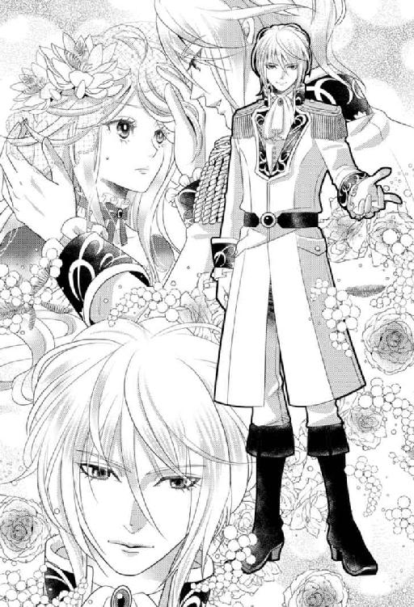
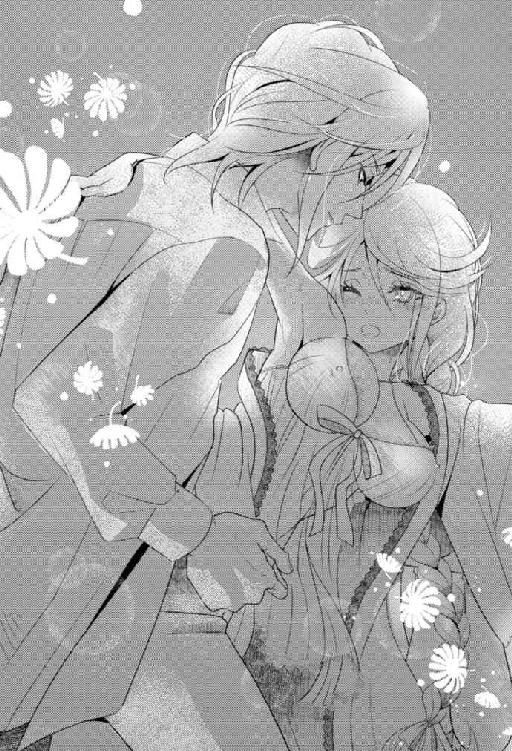

| スキャンダラスな王女は異国の王の溺愛に甘くとろけて (蜜猫ｎｏｖｅｌｓ) | |
| すずね凜 & Ｆａｙ | |
| 竹書房 (2017) | |
この作品は縦書きでレイアウトされています。
また、ご覧になる機種により、表示の差異が認められることがあります。
一部の漢字が簡略字で表示されていることがあります。
スキャンダラスな王女は異国の王の溺愛に甘くとろけて
contents
イラスト／Ｆａｙ
序章
「淫蕩な王女」
「男好きの王女」
「スキャンダラス・プリンセス」
そう噂された、大国ゴッドハルトの第一王女クラウディアが、シュターゼン王国の若き王ツェーザレの妻となるべく輿入れしてきた。
春、シュターゼン王国の国花であるオレンジの花が咲き誇る季節のことであった──。
ツェーザレ王があつらえた四頭立ての輿入れ馬車が、シュターゼン王国の街道を王宮のある首都目指して、ゆっくりと進んでいく。お供はごくわずかで、大国ゴッドハルトの王女の輿入れにしては慎ましい行列だ。
深くカーテンを下ろした窓の向こうに、噂の王女が乗っている。
シュターゼン国の民たちは、いったいどんな王女だろうと嫌悪と好奇心がないまぜで、街道の脇に大勢並んで輿入れ馬車を見送った。
「わあ、クラウディアさま、すごいですよ。街道沿いにいっぱい民が並んで、私たちの馬車を見送ってます」
窓のカーテンを開けて外を覗きこんだ世話係の侍女のリリーが、はしゃいだ声を出す。
乳姉妹のリリーは、クラウディアと同い年の十八歳。紺の制服に白いエプロンがよく似合う、赤毛の陽気な娘だ。
馬車の奥に、座席に深く凭れて座っていたクラウディアは冷ややかな声でリリーをたしなめる。
「リリー、カーテンを閉めてちょうだい。どうせ、スキャンダラスな王女がどんな顔をしているか、興味津々なだけなのでしょう」
艶やかなプラチナブロンドに、淡いすみれ色の瞳、透き通るような白い肌。お人形のように整った美貌に、深い紫色のドレスが素晴らしく華麗に映える。
だが、その顔色は青ざめ、表情は硬い。
リリーは不満げにカーテンを閉ざした。
「そんな──姫さまはなにも悪くないし、ぜったいあんな醜聞は嘘っぱちなんですから！」
クラウディアに心服しているリリーは、口を尖らせて抗議する。
「ありがとうリリー。そう言ってくれるのは、お前くらいだわ」
クラウディアはわずかに口元を上げる。
微笑むと脆いガラス細工のような繊細な美貌に、ぱっと艶やかな色が浮かぶ。
だが彼女はすぐに元の暗い表情に戻り、考えごとに耽った。
（それにしても──私のような国のやっかいものの女王を娶ろうだなんて、どんな物好きな王なのかしら......きっと、ゴッドハルト国の権威を笠に着ようと目論んでのことに違いないわ。それでなくては、こんな汚れた噂の王女を妻にしようなんてどの国の王も考えないもの。いずれにせよ、計算高いずる賢い王に違いない──とうてい、好きになれそうにないわ）
クラウディアは深いため息をつく。
花も盛りの十八歳になったばかりの彼女には、乙女らしい夢も希望もあった。
けれど、今はその全ては失われ、クラウディアに残ったものは醜聞と政略結婚だけだった。
（共に未来を語り、国を豊かに幸福へと導いていく王と王妃──そんな夢を見ていたあの頃がなつかしい......）
クラウディアは一年前の、自分の婚約披露パーティーの時のことをぼんやりと思い出す。
煌々と光る満月。
降るような星空。
夜の庭に心地よく響く噴水の音。
そして──。
月の王子かと見紛うばかりに静謐な美貌の青年貴族。
艶やかな金髪をかき上げながら、彼は澄んだ青い目でクラウディアを見つめてきた。
あの時。
心臓がとくとくと早鐘を打ち、頬が燃えるように熱くなった。
彼の呼吸、彼の身にまとう爽やかな香水の匂い、彼の低い声、彼の体温──なにもかもが胸を甘く締め付けた。
──柔らかく熱い唇の感触。
一瞬で恋に落ちた。
初恋だった。
だが、初恋はあっという間に消え去った。
今は空っぽ。
無垢で純情なクラウディアは、スキャンダルに堕ちてしまった──。
第一章 堕ちた王女は政略結婚をする
クラウディアの一行は、半日がかりで首都に入った。
綺麗に石畳を敷き詰めた街の中央通りは、小高い丘の上に立つ灰色の王城にまっすぐ続いている。
クラウディアはわずかにカーテンを引き、目だけ覗かせて街の様子を盗み見た。
オレンジのレンガ造りの家々は簡素ながらきちんと区分けされて建てられ、産業の発達した祖国と比べるとこんじまりとして鄙びているが、暮らしやすそうだ。通りを行き交う人々は清潔な服装で栄養状態も良く、国が平和に統治されているように思えた。
通りの向こうの王城は、小さいながら堅牢そうな石造りで、華美な装飾がなにもない実用的な感じが印象的だ。
だが、クラウディアが顔を覗かせているのに気がついた街の人々が、
「あっ、ゴッドハルト国の『淫蕩王女』だ」
と、足を止めて物見高い顔で集まりだしたので、さっとカーテンを閉めてしまった。
「無礼な！ 姫さまは見世物ではありませんのに！」
リリーが憤慨する。
クラウディアは苦笑いした。
「似たようなものよ。わたしは動物園の珍獣といったところね」
リリーがぐぅと喉を詰まらせる。彼女は泣き虫だ。
リリーが鼻を啜りながら言う。
「おいたわしい姫様。ほんとうなら、宰相の息子のジンメル公爵様と、幸せなご結婚をなさっておられたはずなのに......こんな小さな田舎の国に嫁がされて──」
「リリー、ブルーノのことは言わないで！」
クラウディアは声を荒くした。
元婚約者のブルーノ・ジンメル公爵のことは、思い出したくもない。
「君がこんなに淫らで恥ずかしい女性とは、思ってもみなかった。婚約は解消だ！」
顔を真っ赤にして罵られたことは、昨日のことのように思い出され、クラウディアの心をきりきりと締め付ける。
（もうどうでもいいの──祖国のことも、この国のことも。わたしはただ、息苦しいゴッドハルト国から逃げ出したかっただけ。結婚する王が、どんな人だってかまわない。もうわたしは、一生誰かに恋することなんか、ないんだもの......）
それが、この一年、あらぬ醜聞に苦しめられたクラウディアが決意したことだ。
この先の長い人生を、諦めと無気力で生きていくという──。
緩やかな上り坂をしばらく進むと、やがて馬車がピタリと止まった。
「あ、姫様。お城に到着したようですよ」
リリーが素早くクラウディアの頭から薄いヴェールをかけた。
未婚の女性は猥りに素顔を晒さないというのが、ゴッドハルト国のしきたりだ。
馬車の扉が静かにノックされ、若い男の声がした。
「長旅難儀でございました。シュターゼン城に到着でございます。ゴッドハルト王国第一王女クラウディア殿、私は王付きの秘書官エッカルト・ヴァルザーでございます」
クラウディアは気持ちを取り直し、威厳ある声で答える。
「お迎えご苦労です」
扉が開き、ウエーブの掛かった濃い茶色の髪と褐色肌をした、利発そうな若者がうやうやしく一礼した。
「どうぞ。我が王ツェーザレ・シュターゼン三世陛下がお待ちです」
エッカルトと名乗った王付きの秘書官が、馬車に天鵞絨張りの踏み台を掛け、クラウディアが降りるのに手を貸した。
「──」
クラウディアは初めて見る王城をまじまじと見上げる。
灰色の城壁に囲まれた小さな城は、四つの高い尖塔に囲まれ、すっきりとしたデザインだ。
遠くからの印象通り、簡素で堅牢だが重苦しくなく、ごてごてと金飾りのついた広大なゴッドハルト城より、好ましいとすら思う。
王城の玄関口まで赤い絨毯が敷かれ、両脇をオレンジ色の制服に身を包んだ護衛兵たちが槍を持って均等に立っていた。そこをエッカルトに先導され、しずしずと歩いていく。リリーは身の回り品を入れた鞄を抱え、後から付いてくる。
「姫様、おもったより歓迎してくれていますね、よかった」
同じ感想をクラウディアも持ったが、無言でいた。
高いドーム型の天井のある玄関ホールに入ると、大勢の侍従や侍女たちが最敬礼して待ち受けていた。彼らも護衛兵と同じオレンジ色の制服だ。どうやら、シュターゼン王国のシンボルカラーらしい。
明るく親しみやすい色で、それも好感がもてた。
「クラウディア殿、旅のお疲れがございましょうが、我が王はすぐにでもあなた様とご対面を希望で、朝からご到着を待っておられました。申し訳ございませんが、このまま謁見室へご案内してもよろしゅうございますか？」
エッカルトの言葉にクラウディアはうなずいた。
「かまいません」
噂のスキャンダル王女の顔を、一刻も早く拝みたいのだろう。
美しいステンドグラスの窓が並んでいる明るい廊下を抜け、屈強な護衛兵が守っている謁見室の扉の前まで来た。
「これより先は、お一人でお入りください。我が王の希望でございます」
リリーが抗議する。
「そんな、お付きの一人もなしなんて、失礼な──」
「リリー、控えなさい」
クラウディアは小さい声でリリーをたしなめる。
クラウディアは自分の目でじっくりと、醜聞まみれの王女を娶ろうという酔狂な王のことを確かめてやろうと思った。
エッカルトが頭を下げ、扉の向こうによく通る声をかける。
「クラウディア殿、ご到着でございます」
「入るがよい」
耳障りのいいバリトンの、深く低い声が中からした。
予想していたよりずっと若い男の声だった。
エッカルトが扉を開け、頭を下げてクラウディアを先に通す。
クラウディアはゆっくりと謁見室に入った。
こじんまりとした謁見室だが、天窓からの採光が玉座の上に落ちるように設計されている。
長い緋毛氈の先の階の上に、金の玉座が置かれ、そこにツェーザレ・シュターゼン三世が座している。
クラウディアは目線を階の一番下あたりに落とし、足音を忍ばせて前に進む。
視線を下げているので王の姿は見えないが、彼の醸し出す圧倒的なオーラがひしひしと感じられ、にわかに緊張し、脈動が速まってきた。
階の手前まで来ると、静かに膝を折りスカートの両端を摘んで挨拶した。
「お初にお目にかかります。クラウディア・ゴッドハルトでございます。王におかれましては、ご機嫌麗しく──」
「堅苦しい挨拶はよい」
いきなり言葉を遮り、ツェーザレが立ち上がって階を下りてくる靴音がする。
クラウディアはいっそう緊張に身を固くした。
磨き上げられた革のブーツのつま先が目に入る。
「立ちなさい」
有無をいわさぬ声で言われ、思わず立ち上がってしまう。
目の前のツェーザレは、長身ですらりとしていた。
白い軍服風の礼装が引き締まった身体をぴったりと包んでいる。
彼の胸のあたりに視線を止めていると、ふいに長い腕が伸ばされ、無造作にクラウディアのヴェールを捲り上げてしまう。
「あっ......」
ぱっと視界が開け、相手の顔がまともに飛び込んだ。
「っ──」
クラウディアは息を吞んだ。
年の頃はせいぜい二十代半ば。あまりにも若い王だ。
さらさらした金髪、知的な青い目、ギリシア彫刻のように整った容貌。
「久しぶりだな、王女殿下」
ツェーザレの長い指が、クラウディアの顔に垂れかかった前髪を掻き上げる。
その仕草は忘れもしない。
一年前に婚約披露パーティーで出会った、青年貴族──。
あんなにも胸をときめかせ、忘れられなかった一人の男性。
「あなたは......？」
ツェーザレが白い歯を見せた。
クラウディアの心臓がきゅうっと甘く締め付けられる。
その笑顔は、心の奥底にくっきりと焼きついていた。
──一年前。
ゴッドハルト城の大広間では、第一王女クラウディアと宰相の長男ブルーノ・ジンメルとの婚約披露パーティーが華やかにとり行われていた。
この日は、国中の主だった貴族たちが招待され、艶やかな礼装に身を包んだ紳士淑女が、賑やかにダンスやおしゃべりに興じている。
広間の一番奥の階には、金と宝石で飾られた玉座が据えられ、白貂のマントを羽織り、金糸銀糸縫いの豪奢な礼服に身を包んだ王と王妃が威風堂々と座っている。

王の右隣は、今年二十歳になる第一皇太子クラウド。
王妃の左隣には、第一王女クラウディアとその婚約者のブルーノが座している。
クラウディアは袖なしで襟元の深い真っ白なイブニングドレス姿で、初々しさの中に少し大人びた色気を漂わせ、今宵の主役らしくひときわ美麗だ。
彼女の傍にいるブルーノは、クラウディアより五つ年上で、茶色の髪に茶色の目のなかなかな美丈夫だ。真っ赤な軍服風の礼装に金のたすき掛けのサッシュを巻き、得意げに胸を張っている。
クラウディアは顔に張り付いたような笑顔を浮かべている。
このめでたい婚約の日、彼女の心は氷のように冷え切っていた。
ブルーノとの結婚は、まだクラウディアが赤ん坊の頃、すでに王と宰相との間で取り決められていた。
代々王家に仕える最高の地位である宰相を輩出してきたジンメル公爵家との婚姻は、王家には有益なものであった。
クラウディアはもの心ついたときから、ブルーノが将来の夫であると言い聞かされてきた。
ブルーノは特別に王宮の出入りを許され、クラウディアと頻繁に親交を温めた。
ブルーノは少し尊大で自分勝手なところがあったが、クラウディアへの態度は丁重であった。
幼いクラウディアは何もわからないまま、ブルーノを未来の夫として受け入れていった。
王女として、王家の役に立つ結婚こそが義務であると教え込まれていた。
しかし──。
成長し年頃になるにつれ、クラウディアの胸の中に虚ろな気持ちが湧き上がってきた。
書物や歌や芝居、特に侍女たちのおしゃべりなどから、男と女の間には心躍るような恋愛感情が生まれ、それを育む喜びはなにものにも代えがたい至福なのだと知った。
（恋愛感情って、なに？）
クラウディアは自分のことを省みる。
ブルーノに対して、クラウディアは馴染みのいい人だくらいの気持ちしか湧かなかった。
それどころか、月日を追うにつれ、ブルーノは自分の決められた栄光の未来に慢心しきったのか、傲慢でひとりよがりな性格が鼻に付くようになった。
クラウディアのことを、自分の所有物のように扱う振る舞いが目立ってきたのだ。
控えめで聡明なクラウディアは、ブルーノの態度を黙認するようにしてきた。
ブルーノとの結婚は王女としての義務だ。
彼との間に波風を立てたくなかった。
クラウディアは自分に言い聞かせた。
心を殺して、なにも望まず、穏やかに──ブルーノの妻になるのだ、と。
だが、胸の中にすうすうと冷たく寂しい風が吹き抜けるのを止めることはできなかった。
こうして、このハレの婚約披露パーティーの席で、クラウディアは冷めた心とは裏腹なにこやかな表情を浮かべ続けていたのだ。
「そろそろ、主役の二人のダンスを披露したらどうだね？」
父王は機嫌よくクラウディアとブルーノに声をかけた。
「かしこまりました、王よ」
ブルーノはうやうやしく父王に一礼すると、クラウディアに顎で合図する。
「クラウディア、さあ」
ブルーノに手を差し出され、クラウディアは無言で片手を預けて立ち上がった。
階からブルーノとクラウディアが降りてくると、大広間で踊っていた貴族たちは、一斉に中央を大きくあけて迎え入れる。
二人は向かい合わせになり、踊り始めた。
ブルーノは昔からダンスがあまり得意ではない。華奢なクラウディアは彼に無造作に振り回されるので、ダンスが楽しいと思ったことがなかった。
「とうとうこの日が来たね。婚約式が済んだら、来年早々には結婚式だ。我がジンメル家には最高の誉れだな」
ブルーノは得意げにクラウディアに言う。
「そうね──」
クラウディアはブルーノが腰を力任せに掴むのが不愉快で、冷ややかに答えた。
「なんだよ、君。さっきから少し無愛想じゃないか。僕らの輝かしい記念すべき日なんだから、もっと嬉しそうにしろよ」
「あなたには、そうでしょうけれど」
ブルーノは少しムッとした表情になる。
「君は昔から気取ったところが目に余る。僕と結婚したら、公爵夫人に降嫁することになるんだから、いつまでも王女気分では困るな」
不意に彼が背中を引き寄せ、顔を寄せようとした。
唇を奪われる──。
「なにするのっ？」
クラウディアは本能的に身を引き、ブルーノを押しのけてしまった。
ブルーノはかっと顔を赤くした。
「なにって、もうすぐ夫婦になるんだ、キスくらいいいだろう？」
クラウディアは、背筋に生理的嫌悪感が走るのを感じた。
「そ、そういうことは、正式に結婚してからにして」
ブルーノは口を尖らせた。
「お堅いな。君って美人だが、つまらない女だ」
彼はそう言い捨てると、すっとクラウディアから離れた。
ちょうど、次のダンス曲が始まったところで、ブルーノは壁に並んでいた淑女たちの中から、金髪で子鹿みたいな潤んだ瞳の、ほっそりとした愛らしい娘の前に進んでいった。
「お嬢さん、お名前は？一曲踊ってくださいませんか？」
娘は頬を染めて可愛らしい声で答える。
「フォルター男爵の長女、ベルタと申します。光栄です、公爵様」
ブルーノはベルタとぴったり身体を寄せ、これ見よがしにクラウディアの前で踊り始めた。
クラウディアは自尊心が傷つき、いたたまれない思いになる。
屈辱感でこのまま大広間から逃げ出したいが、王女としての立場がそれを押しとどめた。
「リリー、わたし、中庭で少し涼んできます。しばらくひとりにしてちょうだい」
クラウディアは、隅に控えていた自分の侍女のリリーに声をかけ、庭に面したバルコニーに悠然として出ていった。
バルコニーから中庭に出ると、がっくり肩を落とす。
「疲れる......」
大広間から流れてくる華麗な音楽や楽しげな会話から逃げるように、ドレスの裾を上げて庭の奥へ進んだ。
少し行くと、小さな噴水の前に出る。
クラウディアは円形の噴水の縁に腰を下ろすと、深いため息をついた。
「こんなまがい物の婚約披露パーティーなんか、消えてなくなればいいのに──王女だって女の子よ。女の子が夢見て、なにがいけないの？」
思わず声に出していた。
「なにもいけないことはない」
突然、響きのいいバリトンの声がした。
クラウディアははっと身を強張らせる。
「どなた？」
噴水を吹き上げる天使像の向こう側から、ゆっくり人影が現れた。
折しも満月で、冴え冴えとした月明かりがそのひとの姿を照らし出す。
「ぁ──」
クラウディアは息を吞んだ。
すらりと長身の青年だ。
舞踏会用の白い礼装を身にまとっている。服装の上等さから察するに、高級貴族の子息らしい。
さらさらした金髪、切れ長の青い目、高い鼻梁と意志の強そうに引き締まった唇。ぞくりとするほど整った美貌だ。
彼は穏やかに微笑み、深々と一礼した。流れるような美しい所作だ。
「クラウディア王女殿下、この度は御婚約の儀、おめでとうございます。お休みのところを失礼いたしました」
青年はそのまま立ち去ろうとした。
「あ──待って、あなたはどなた？」
クラウディアは思わず呼び止めていた。
青年は足を止めて振り返った。彼は額にかかった前髪を掻き上げる。ふるいつきたいほど、その動作が蠱惑的で色っぽい。
「異国の留学生です。名乗るほどの者ではございません」
クラウディアはひどく彼に心惹かれ、もう少しだけ話したいと思った。
「あの──今宵は無礼講です。よろしければ、もう少しだけ涼んでいかれませんか？」
青年は目を瞬く。
「王女殿下がよろしければ──」
彼は滑るように歩み寄り、クラウディアの傍に少し距離を置いて腰を下ろした。
そばで見ると、ますます魅力的な青年だ。
月明かりに照らされた青年の横顔が、憂いを帯びて夢のように美しい。
クラウディアは心臓がどきどきし、息が苦しくなってくる。
二人はしばらく無言でいた。
やがて、青年は控えめに口を開いた。
「殿下、御婚約者をおひとりにさせて、よいのですか？」
クラウディアは苦く笑う。
「いいのよ。あのひとは今、わたしなんかよりずっと可愛いげのある令嬢とダンスをしているわ」
青年が気遣わしげな視線を投げてくる。
「失礼ですが──王女殿下以上に、お美しく可愛らしい女性がほかにいるとは、私には思えません」
クラウディアは頬が焼け付くように熱くなるのを感じた。
「お世辞はけっこうよ。親同士の決めた結婚だし、わたし、ブルーノのこと、それほど興味がないのよ」
青年が意外そうに目を見開く。
その心まで読み取りそうな深い眼差しに、胸がきゅんと甘く疼いた。
クラウディアは自分の中に溜め込んできた本音が、彼の前だと溢れてしまうのを感じた。よその国の人間だという気安さもあったのだろうか。
「でも、だいじょうぶ。わたしは王女。きちんとブルーノと結婚するわ。それがゴッドハルトの利益のためですもの。わたしの気持ちなど、国の発展のためならいかほどのものでもないわ」
青年はじっとクラウディアを見つめた。無礼なほど真っ直ぐな視線なのに、まったく不快ではない。それどころか、ずっと見つめていてほしい、とすら思う。
「王女殿下、国を豊かに栄えさせるための政略結婚は、もはや時代遅れではないでしょうか」
クラウディアは目を見開いた。
これほど率直に意見されたことは今までなかった。
「あなたは、そう思うの？」
青年はこくんとうなずいた。
「ええ──これからの時代は、国の長たる王が、まず伴侶となる女性と心から愛し合い幸せになることが必要です。そして、その幸福な気持ちを国の隅々まで行き渡らせるにはどうしたらいいか、を考えていくべきです。王が不幸であれば、いずれ国も力を失っていくでしょう。王女殿下も、そのお美しさと輝くオーラを存分に民たちに分け与えるべきです。あなた様には、それだけの魅力があるのですから、決して曇らせてはなりません」
訥々と語る青年の言葉のひとつひとつが、クラウディアの胸に深く染みた。
こんなふうにクラウディアの気持ちを代弁してくれる者は、今まで誰もいなかった。
両親やブルーノのように威丈高にふるまうか、媚びへつらうかのどちらかだった。
この一介の留学生の青年は、クラウディアと平等の立ち位置で同じ視線でものを見る力がある。
クラウディアは鼻の奥がつんとしてくる。
どうして、このような人と今まで出会えなかったのか。
「そうね。それこそが、わたしの理想とする王族の未来だわ。国王と王妃が、まず国民の手本になるような幸福な家族像を作り上げること。わたしもずっとそう考えていた」
月を見上げ夢想するような表情で、クラウディアはほんとうの気持ちを吐露する。
青年はクラウディアの横顔をじっと見つめている。
やがてクラウディアは、深いため息をついた。
「──ありがとう。あなたの言葉、とても心を打たれたわ。わたし、その言葉を胸に刻んで、これからも生きていくわ」
潤んだ瞳で彼に微笑む。
青年がかすかにせつなそうな表情になった。
「でも──王女殿下は、好きでもない男性と、ご結婚なさるのですね」
クラウディアはぐっと喉にこみ上げてくるものがあった。
「それは──もう、仕方ないことよ。王である父上がお決めになったことですもの。わたしにどうこうできるものではないわ。でも、だいじょうぶ。こうして気持ちを吐き出せたから──わたしはもう平気。泣き言などいわないわ。わたしは......」
青年がひそやかな声を出す。
「でも──泣いておられる」
「え？ わたしが？」
クラウディアは驚いて目を瞬いた。
青年のしなやかな指がすっと伸びて、クラウディアの頬に流れる涙をぬぐった。
ひんやりした指の感触に甘くときめき、心がずきずき疼いた。
「少しだけ──胸を貸してください」
口唇を震わせて声を絞り出すと、青年は無言で側に寄った。
「う......ひっく......」
クラウディアは青年の広い胸の中に顔を埋め、しゃくりあげた。
ひとまえで泣いたことなどなかった。
ずっと心にしまいこんでいた虚しさ、やるせなさが、一気に溢れてしまう。
まだ十八に満たない若さで、恋の喜びも愛する幸福感も何も知らないまま嫁ぐのだ。
そして、生理的に受け付けない相手に身を任せねばならないのだ。
青年はしばらくじっとしていたが、やがて遠慮がちにクラウディアの背中に手を回し、あやすように撫でさすってくれた。温かく大きな掌だ。
彼に触れられると、身体中の血液が喜びに熱くなる。
クラウディアは心からさめざめと涙を流した。
こんな気持ちよく泣けたのは初めてだ。
やがて、クラウディアは濡れた顔を上げた。
「ありがとう──もう、思い残すことはないわ」
くすんと鼻を鳴らし、花のように微笑んで青年を見上げた。
青年が魅了されたように目を眇めた。
「王女殿下、無礼講ゆえ、ほんの少しだけご容赦ください」
青年が掠れた声でささやいたかと思うと、彫りの深い整った美貌が素早く寄せられた。
「あ──」
しっとりと唇が重なる。
一瞬、クラウディアはびくりと肩を引き攣らせたが、そっと目を閉じてそのままじっとしていた。
生まれて初めてのキス。
柔らかな唇の感触と、ひそやかな息遣い、青年が身にまとう爽やかな香水の匂い。
時間が止まったかと思う。
全身に甘い幸福感が駆け巡り、魂が抜け出てしまいそう。
息を詰めて青年の口唇を感じていると、頭がくらくらする。
きっと、ほんの数秒のことだったが、クラウディアには永遠のように感じられた。
青年が静かに顔を離した。
「ふ......」
クラウディアは深く息を吐き、青年の吸い込まれそうな青い瞳を見つめた。
彼も熱を込めた視線を返してくる。
この感情はなんだろう？
クラウディアは胸がざわめく。
こんな熱い想いを、誰かに抱いたことは今までなかった。
なんという皮肉な運命だろう。
婚約披露パーティーの席で、運命の人とめぐり合ったとでもいうのだろうか──。
青年がなにか言いたげに口を開きかける。
その刹那──。
「王女殿下、王女様、そこにおられますか？」
鈴を振るような愛らしい声が、茂みの向こうから聞こえてきた。
二人は弾かれたように身を離す。
「ああ、おられましたか。侍女が庭で涼んでおられると言うので──」
茂みから姿を現したのは、先ほどブルーノに誘われてダンスを踊っていた可憐な娘だった。
確かベルタと名乗っていた。
ベルタはわずかに眉をひそめて青年の方を見たが、頭を低くしてクラウディアの前で一礼した。
「王女殿下、ブルーノ様がお捜しですよ。そろそろ広間にお戻りになってくださいまし」
ベルタの仕草はいちいち愛らしい。
「わかりました。まいります」
クラウディアは素早く威厳を正した。
背筋を伸ばして立ち上がり、青年には目もくれず広間の方に歩き出す。
背中に青年の視線を痛いほど感じた。
ほんとうはクラウディアも振り返ってずっと彼を見つめていたかったが、もはや夢の時間は終わったのだ。
「王女殿下、あの青年はどなた様ですか？」
後ろに付き従っていたベルタが、無邪気な声でたずねる。
クラウディアはいつもの落ち着いた声で答える。
「さあ──噴水のところにたまたまおられたのよ。なんでも外国の留学生だとか。それだけよ」
「そうなんですか？」
ベルタは愛らしい声のまま続ける。
「でも──あのお方と随分とご親密になされていたような......」
クラウディアはぎくりとして、キッとベルタを振り返った。
彼女は柔らかく無垢な表情で微笑んでいる。
クラウディアは最初、自分が聞き間違いをしたのかと思った。
だが、よく見るとベルタの子鹿のように潤んだ丸い瞳に、かすかな邪気を感じる。
「そなた、無礼ではないか？」
クラウディアは冷ややかな眼差しでベルタを睨んだ。
ベルタはぱっとあどけない表情に戻り、深く頭を下げた。
「め、めっそうもございません。わたしの勘違いでございました。なにとぞ、お許しください」
クラウディアはベルタを無視して、そのまままっすぐ大広間に入った。
「ああ、愛しい我が婚約者殿。どこにいたんだい？ 捜していたよ」
ブルーノがわざとらしい声を出し、にこやかに近づいてくる。
クラウディアはぼんやりと彼の姿を見ていた。
生まれた時からの婚約者なのに、まるで知らない男性のように思えた。
まだ自分の唇の上に、青年のキスの感触がありありと残っているような気がする。
そして、今さらながらに心臓がどきどき甘くときめくのを感じた。
＊＊＊＊＊＊＊＊＊＊＊
「あの時の──留学生。あなたはシュターゼン国王だったの？」
クラウディアは衝撃の事実に、声が震えた。
「そう──もっとも、君に出会った時にははまだ皇太子だった。ゴッドハルト王国に留学して、見聞を広めていたんだ。あの後、帰国直後に長患いだった父が逝去して、私は国王となったのだ」
国王の地位に就いたためか、ツェーザレは出会ったときより一段と男っぷりが上がり、成熟した大人の色香を漂わせている。
クラウディアは懐かしさと恋しさで、脈動が速まるのを感じた。
その一方で、なぜツェーザレが自分に求婚したのか、という疑念が湧いてくる。
淫蕩な王女という忌まわしいレッテルを貼られた自分を──。
「ずっと、君のことが忘れられなかった」
ツェーザレが懐かしげに目を眇める。
その視線に胸がきゅんと締め付けられる。
わたしもあなたを──と口にしそうになったとき、ツェーザレが満足げに言い添えた。
「偉大なるゴッドハルト王国の王女を、なんとしても我が手にしたかったんだ。君の婚約が破棄されて、私は千載一遇の機会だと思ったよ」
「──」
クラウディアは言葉を吞み込んだ。
ツェーザレの本心がわかった気がした。
（そうか──この人は王。国の利益のために、大国ゴッドハルトとの繋がりがほしかったんだ。それ以外で、こんなスキャンダルまみれのわたしなんかと、結婚したがるはずがない......）
婚約披露パーティーで出会った時には、彼は遊学中の皇太子の身。
きっと、気持ちが解放されていて、クラウディアに少しばかりの火遊びを仕掛けただけに違いない。
あのまま、なにごともなくクラウディアがブルーノと結婚していれば、こうしてツェーザレと再会することなどなかったはずだ。
王となったツェーザレは、もはや嫁ぐあての無くなったクラウディアを、ここぞとばかりに手中に収め国力を高めるつもりなのだ。
「よかったことね──こんな醜聞まみれの王女でも、あなたのお役に立てたのだから」
つんと顎を引き、努めて冷静な声を出した。
ツェーザレの綺麗な眉がぴくりと上がった。
彼はじっとクラウディアの顔を凝視する。
「君は──あの頃と変わったのか？」
クラウディアはツェーザレの腹の底まで見通すような眼差しに耐え切れず、視線を逸らした。
「私のよくない噂は、ご存知でしょう？」
自分の口からは言いたくなくて、声が震える。
「ふん──君が男好きな淫蕩な王女で、婚約者から婚約破棄されたという、あの噂か」
ずばりと言われると、胸が抉られるように痛んだ。
なにもかも嘘なのに。
誰もクラウディアを信じてくれなかった。
あの時の絶望と屈辱を思い出すと、今でも息が苦しくなる。
そしてあれ以来、クラウディアは心を閉ざし誰も信じない、と決めていた。
「そ、そうよ──あなただって、わたしのことをそんな女だと思ったから、やすやすと手に入ると思ったんでしょう？」
ツェーザレの表情が曇る。
こんな女を妻にするという屈辱からだろうか。
「──あの婚約披露の夜に、君に語った国を思う未来への熱い気持ち──あの思いは、今でも変わらない」
ツェーザレは凄みをきかせた声で言う。
「だから、私は君を愛する。そして、君は私を愛するふりをしたまえ。それがこの国の民たちを導く要だ」
クラウディアは熱をはらんだツェーザレの口調に圧倒されてしまう。
彼は相思相愛のふりをしろ、というのか。
「そ、そんなの......この国の人々は、納得しないわ──わたしみたいな汚れた王女を押し付けられた哀れな王だと、あなたまで揶揄されてしまうわ」
冷ややかに言い放とうと思ったのに、ツェーザレの端正な顔が間近にあるというだけで、心臓がばくばくいい、息が乱れてしまう。
「そんなもの、平気だ。醜聞を凌駕するくらい、真実の愛というやつを見せつけてやるんだ」
ツェーザレは深い青い目を、不敵に細めた。
それは、獲物を狙う猛禽類のようで、クラウディアは自分が哀れな生贄の子羊にでもなったような気持ちになる。
「愚かしいわ。偽りの真実の愛？ 矛盾だわ」
嘲笑うように言い放ちたかったのに、声が掠れた。
「偽りもそれらしくしていれば、やがて本物になっていくものだ」
ツェーザレが傲岸不遜とも取れるような、自信満々の態度で言い放つ。
「ずいぶんと自信がおありみたいだけれど、人の心はそんな簡単なものかしら」
人間不信に陥っているクラウディアは、顔を背けてつんとして言う。
「どうかな？ 試してみるか？」
ツェーザレの手がクラウディアの細い顎を掴んで、自分の方を向かせた。
「あ──」
彼の人差し指が、つつーっと唇をなぞる。
美麗な顔が近付いてくる。
（キスされる──だめ......）
ツェーザレから受けた初めてのキスの感触が生々しく蘇り、クラウディアは息を詰めた。あんなキスを再びされたら、身も心も彼に征服されてしまうかもしれない。
だが、クラウディアは石のように身体が固まってしまい、身動きできなかった。
「ふ......」
唇が重なった瞬間、クラウディアは全身が甘く痺れ、力が抜けてしまう。
「ん、ん......」
撫でるように口唇が擦られ、その艶かしい感触に頭がぼんやりしてしまう。
と、相手の舌がぬるりと唇を舐めた。
「あっ──」
驚いて声を上げた瞬間、開いた唇の隙間から、するりと温かく滑らかなものが侵入してきた。
「んっ？ んん、ぅ」
それがツェーザレの舌であると気付いた時には、すでに喉奥にまで深く挿入されていて、息が詰まった。
「ふぁ、あ、ん、んんっ」
口蓋を丹念に舐められたかと思うと、怯えて縮こまっていたクラウディアの舌に相手の舌が絡みつき、強く吸い上げてきた。
刹那、頭が真っ白になり意識が飛びそうになった。
「......やっ......ぅ、ん、んんぅっ」
舌の付け根まで強く吸われ、唇の裏から歯列や歯茎、口蓋と余すところなく貪られてしまう。
こんな獰猛なキスがあるなんて、知らなかった。
「く......やぁ、あ、ふぁ、んんっ......っ」
必死で顔を振り払おうとすると、ツェーザレの逞しい腕が腰を引き寄せ、もう片方の手が後頭部をがっちりと支えてしまう。
「んゃ......や......ふあ、あ、は......」
背中に未知の甘い痺れが走り、身体の芯がじわりと熱くなる。
声を押し殺そうとするのに、艶かしい鼻声が漏れてしまう。
溢れる唾液を啜りあげられ、くちゅくちゅと猥がましい水音を立てて舌と舌を擦り合されると、足が萎えてしまうほど心地よく感じた。
ツェーザレに支えてもらっていないと、そのまま頽れてしまいそうで、押しのけようとしていた両手で、思わず彼にしがみつく。
「く......ふ、ふぁ、あ、ぁ......ぁあ」
もはや抵抗する術もなく、クラウディアは存分に深いキスに翻弄されてしまう。
初めて知る官能的なキスの快楽に、身も心を蝕まれていくようだ。
「......ん、んん......ん、は、はぁ......ぁ」
やがてクラウディアは、熱く弛緩した身体をツェーザレにあずけたまま、彼の淫らな舌遣いを堪能していた。
どれくらいそうしていただろう。
「あ......」
長い長いキスの果てにツェーザレの唇から解放された時には、クラウディアは潤んだ目で彼を見上げるばかりだった。
「どうだ？ これが本物のキスだ」
ツェーザレは艶めいた低い声でささやきながら、クラウディアの火照った額や頬に唇を何度も押し付けた。
「ん......」
クラウディアはまだ意識が朦朧としていた。
「少しは、私を愛する気持ちになったか？」
耳元に熱い息が吹き込まれ、くすぐったさとともに甘い刺激が走り、びくんと肩が竦んだ。
このまま、彼のなすがままになれば──。
頑なな心が解けそうになる。
だが、その時に胸の奥に杭のように深く打ち込まれた呪いのような声が蘇ってきた。
（お前のような恥さらしな女を望む男性など、どこにもいないだろう）
はっとクラウディアは我に返った。
なけなしの力を振り絞り、ツェーザレの腕から身を振りほどく。
「そんなに──人の心はたやすくないわ......」
尊大に言い放とうとしたのに、弱々しい泣き言のようになってしまう。
もう一生誰にも心を開かず、誰も信じず、自分の殻に閉じこもって生きていこうと決めていたのに──。
ツェーザレは哀れむような目でこちらを見る。
「そうだな──たやすくはない」
憐憫をかけられるなど屈辱なだけだ。
クラウディアが顔を背けると、彼の手が乱れた髪の毛を優しく撫でつけてきた。
優しくしないで。
心臓が早鐘を打ち、心が折れそうだ。
同情もいらない。
「だが、いずれ時間が解決する」
クラウディアはキッとなってツェーザレを見返した。
「いいえ、汚れた醜聞は一生わたしについて回るわ。あなたはそんな王女を妻にして、国中の笑い者にされるのよ」
目尻に悔し涙が浮かぶ。
もはや涙も枯れ果てたと思ったのに、どうしてこんなに感情が高ぶってしまうのか。
「かまわぬ」
ツェーザレが平然と言い返す。
その落ち着きはらった端正な顔に、かっと怒りが湧き上がる。
「ええ、そうでしょうとも。こんな小国の王のあなたには、大国ゴッドハルトとの繋がりがそれほど大切なのでしょう。汚れた女でも、わたしはゴッドハルトの王女。あなたには充分、利用価値があるということね」
酷いことを言っている、と自分でわかっていた。
ツェーザレは表情を硬くし、無言で聞いている。
だが、その青い目には怒りではなく、深い悲しみの色があるようにみえた。
虚しい言葉を吐く自分に嫌気が差す。クラウディアは精根尽き果て、肩で息を継ぎながら口を閉ざした。
一筋の涙が目尻から頬を伝って滴った。
「──言いたいことは、それだけか」
ツェーザレは静かな声を出し、おもむろに謁見室の扉に向かって声を張り上げる。
「エッカルト！」
扉が静かに開き、音もなく秘書官のエッカルトが入ってきて、二人の前に跪いた。
「ここに」
「王女殿下は旅のお疲れが出たようだ。貴賓室にご案内し、湯浴みの用意と、なにか滋養のある食事をお出ししろ」
「御意」
ツェーザレは呆然と立っているクラウディアの耳元で、小さくささやいた。
「また、後でゆっくり話そう──」
「話なんて......」
言い返そうとしたが、ふいにツェーザレが額に音を立ててキスをしてきた。
「っ......」
秘書官の前ではしたない──と、眉をひそめると、彼はふっと笑顔になる。なんと魅惑的な表情だろう。
「それでは、愛しいひと」
心臓を鷲掴みにされたような気がして、クラウディアは声を失う。
ツェーザレはそのまま踵を返し、謁見室を出ていってしまう。
ツェーザレと入れ替えに、リリーが小走りで入ってきた。
「ああ、姫様。今、シュターゼン王に『私の大事な人を忠義に支えてくれて、大儀である』って、お褒めのお言葉をいただいてしまいましたっ。すっごくかっこよくていい王様ですね」
頬を上気させ目を輝かせているリリーに、クラウディアは呆れてため息をつく。
（わざわざ家臣や侍女の前で、これ見よがしに仲睦まじくみせているんだわ。やっぱり、小賢しい男なのよ）
そう自分に言い聞かせ、ツェーザレのことを心から締め出そうとした。
しかし、その後広く豪華な貴賓室に案内された時も、贅沢に湯を使う大理石の浴室で湯浴みをした時も、見た目も味も一級品の夕食を前にした時も、彼の面影やキスの感触がクラウディアにまとわりついて離れることはなかった。
──夜半過ぎ。
繊細な彫刻を施した象牙の調度品に囲まれた化粧室の鏡の前で、クラウディアはリリーに解いた長いプラチナブロンドを梳ってもらっていた。
コルセットも外し、薄いシルクのネグリジェ一枚になったクラウディアは、やっと解放感に気持ちが落ち着いてきた。
「お部屋は素晴らしいし、お食事もものすごく豪華でしたね。予想以上に、姫様は歓待されていますよね」
リリーは少し興奮気味に喋っている。
「なにせ、シュターゼン王ご自身が、姫様にぞっこんなんですもの。これでやっと、姫様もお幸せになるというものです」
鏡の中のクラウディアの眉がぴくんと上がる。
「なんですって？ リリー、今なんと言いました？」
リリーはにこにこしながら答える。
「だって、姫様はシュターゼン王の『大事な人』ですから」
「なにを言っているの？ 『大事』の意味が違うのよ。下世話なことを言うものじゃないわ！」
リリーは言い返すクラウディアの剣幕に、きょとんとする。
「はあ......」
クラウディアは自分がむきになってしまったことにハッとする。
「もういいわ。お前は次の間に控えなさい。わたしはもう休みます」
「はい、お休みなさい」
リリーは一礼すると、退出した。
いつものように、寝室のオイルランプは点けたままにさせた。
クラウディアは暗闇では安眠できないのだ。
天蓋付きの大きなベッドに入った。
羽布団がふかふかで寝心地がよさそうだ。
だが、身体は疲れているのに、目が冴えていっこうに寝付けなかった。
頭の中は、ツェーザレのことでいっぱいだ。
（彼はなにを考えているのだろう。利用するだけの妻なのだから、わざわざ愛し合うふりなどする必要なんてないわ。そんなの虚しいだけ。どうせ世間は、男たらしのゴッドハルトの王女の手管に、真面目なシュターゼン王が落ちてしまったのだと、面白おかしく噂するだけよ）
この一年で、ものごとを斜めに見て自虐的に考えるようになってしまった。
それまでは、純真で素直な少女だったのに──。
あれこれ考えているうちに、次第にうつらうつらとしてきた。
＊＊＊＊＊＊＊＊＊＊＊
──一年前。
ブルーノとの婚約披露パーティーを済ませた一週間後のことだった。
「姫様、ジンメル公爵様からメッセージが届いております」
自分の部屋で読書をしていると、リリーが銀の盆に一通の封筒を載せて入ってきた。
「ブルーノから？ なにかしら」
結婚式の準備は滞りなく進んでいるはずだ。
封を切って中身を読む。
「愛しい婚約者の君へ
今夜、親しい友だけを集めて秘密のポーカーパーティーに興じることになった。この機会に、私の友だちを君に紹介したい。場所は、街外れの青い屋根の『風見鶏亭』という宿屋だ。お忍びでぜひ、君に来てほしい。お待ちしている。
ブルーノ」
クラウディアは眉をひそめる。
（ポーカーゲームって、賭け事だわ。あまり褒められた遊びじゃない──けれど、ブルーノは婚約者だし、お友だちを知るいい機会かも。少しだけ顔を出して、ご挨拶して帰ろう）
そう考え、リリーに声をかける。
「今夜、ブルーノに呼ばれたので、お忍びで出かけるわ。馬車の用意を。お前、お供しておくれ」
「はい、かしこまりました」
その日の夜、クラウディアはヴェールで顔を覆い隠し、小さな馬車でリリーと共に街外れへ出向いた。
「風見鶏亭」は街の歓楽街の外れにあって、それだけでもクラウディアは気後れしてしまい、このような場所で遊んでいるブルーノに不快感を禁じ得なかった。
店の前で馬車を降り、リリーに扉をノックさせる。
中から扉を開けたのは、小柄な若い娘で、その愛くるしい子鹿のような顔に見覚えがあった。
「あなた──ベルタ？」
ベルタは天真爛漫に微笑む。
「はい、王女殿下。私もブルーノ様にご招待いただきましたの。お入りください、二階です」
ベルタのような未婚の女性が来ているのなら、思ったよりきちんとしたパーティーなのだろう。少し安堵し、ヴェールを深く被りなおして、ベルタの後から狭い階段を上がった。
階段を上りきったとたん、部屋中にたちこめるタバコの煙とむっと強い酒の臭いに顔をしかめる。
部屋の真ん中の丸テーブルを囲んで、数人の青年貴族たちがポーカーに興じていた。
皆シャツをはだけ腕まくりした緩んだ服装で、かなり吞んでいるのか顔が赤い。
「ようこそ、殿下」
青年貴族たちはふらふらと立ち上がり、だらしなく挨拶した。
「どうぞ、カードの続きを」
クラウディアが酒臭さに辟易して早口で返事をすると、青年貴族たちはドスンと椅子に腰を落とし、再びカードの勝負を始める。
「いやだ、姫様そうとう酔ってますよ、あの人たち」
リリーがクラウディアを守るように、前に立った。
クラウディアは部屋を見回し、ブルーノの姿がないことに気がつく。
「ブルーノは？ あの人はどこに？」
「ちょっと用事で出ておられてますの。すぐにお戻りになられるとのことですから、こちらでお待ちくださいな」
ベルタは部屋の隅のソファに誘導する。
クラウディアは仕方なく浅く腰を下ろした。
テーブルの方から、勝負が付くたびに大きな罵声と歓声がわき起こる。
クラウディアは顔をしかめ、ベルタに声をかけた。
「あなた、こんな場所にお一人で出入りしてよろしいの？」
酒瓶をいくつも載せたキャスターの横で、グラスに飲み物を注いでいたベルタは、肩越しに振り返って無邪気にそうに微笑む。
「うちは身分の低い貴族ですから、庶民と同じようなものですもの」
しばらく座っていたが、ブルーノはなかなか戻らない。
クラウディアは場の不快さに耐えきれなくなり、立ち上がった。
「わたしはもう帰ります。ブルーノにこういう場所には二度と呼ばないでほしいと、伝えてください」
ベルタにそう言うと、彼女は慌てたように言う。
「そんな──私がブルーノ様に叱られてしまいます。もう、すぐですから。これを飲んでお待ち下さい。これはお酒ではありませんから」
彼女が果汁らしき飲み物の入ったグラスを差し出したので、クラウディアは仕方なく受け取り、ヴェールの端を持ち上げ、ひと口含んだ。
「？」
口の中に苦いものが広がった。突如、目の前がぐらぐら揺れてくる。
「な......に......？ これ......は......」
クラウディアは立ち上がろうとして、足元がもつれた。
がくりと床に倒れ込む。
「きゃあ、姫様！」
リリーが慌てて駆け寄ろうとすると、ポーカーに興じていた青年たちが突如がたんと席を立った。
彼らはリリーに襲いかかり、暴れる彼女を数人がかりで押さえ込んで、部屋のクローゼットの中に閉じ込めてしまった。
クローゼットの中からリリーのくぐもった悲鳴が漏れてくる。
「リ......リリー......」
クラウディアは必死でそちらへ手を伸ばそうとした。
だが、次の瞬間、すうっと意識が失われてしまった。
「......ぁ......？」
次に気がつくと、日がすっかり上っていて、部屋の中は明るい。
クラウディアは、自分が粗末なベッドの上に倒れているのに気がついた。
「ここは......？」
部屋の扉が大きく開いていて、向こうの部屋に丸いテーブルや床に散らばったカードや酒瓶が見えた。昨夜の「風見鶏亭」の部屋だ。
頭ががんがんと痛んだ。気を失ってからのことは、なにひとつ記憶にない。
それから、クローゼットに閉じ込められたリリーのことを思い出す。
「リリー......」
気だるい身体を起こそうとして、クラウディアは自分のヴェールが剥がされ、ドレスの上衣の前がはだけ、あられもない格好になっているのに気がつきぎくりとする。
隣に誰か寝ている。
この部屋でポーカーに興じていた青年貴族の一人だ。
上半身が裸だ。
よく見ると、この部屋のあちこちで、青年貴族たちがだらしない服装で雑魚寝していた。
クラウディアは恐怖で震え上がった。
気を失っている間になにがあったのか？
心臓がばくばくする。
怯えながら自分の身体をあらためたが、幸い怪我も違和感もなく、なにか狼藉をはたらかれたわけではなかった。
少し安堵し、一刻も早くこの忌まわしい部屋から出ていこうと、ベッドを降りようとした。
その時、戸口に人影がさした。
「クラウディア──？ これはいったい──？」
引き攣った声の主は、ブルーノだった。
クラウディアはうろたえて彼に近づき、ことの次第を説明しようとした。
「ブルーノ、わたし──」
ブルーノの表情は嫌悪感に満ちていた。
「君は──こんなふしだらな女だったのか？」
クラウディアは衝撃を受けて固まった。
ブルーノは甲高い声で怒鳴った。
「信じられない！ 王女が密かに淫蕩にふけっていたなんて──こんな醜聞、こんな裏切りはない！」
「ちがう......そんなこと......！」
クラウディアは信じられない事態に、目眩がして吐き気をもよおしそうになった。
ブルーノは全く聞く耳を持たなかった。
「このことは国王陛下にお知らせする。君との婚約は──」
彼はぶるぶる震える指先をクラウディアに突きつけた。
「たった今、解消させてもらう！」
クラウディアは全身の血が凍りつくのを感じて、呆然と立ち尽くした。
その後のことは、悪夢としか言いようがなかった。
クローゼットに閉じ込められたリリーは、失神していたが怪我などはなかった。
閉じ込められた直後に気を失い、その後のことは覚えていないという。
クラウディアは、宿の外に一晩中待たせてあった馬車に乗り、リリーとほうほうのていで王宮に戻った。
ブルーノに誤解されたのはショックだったが、きちんと話せばわかってもらえるだろうと思っていた。そもそも、あんな乱れた場に呼び出したりしたブルーノの責任問題だ。
（まず、父上に事情をお話しし、ブルーノたちには厳重注意をしていただこう。わたしにはなんの非もないのだもの）
クラウディアは一休みしてから、父のもとへ出向こうと思った。
だがそれより早く、父王から呼び出しがあった。
今すぐに、父王の私室へ来るようにと言われ、悪い予感がした。
胸騒ぎを抑えつつ、リリーを連れて王宮の最上階にある父王の私室に向かった。
来訪を告げると、すぐに侍従が中へ招き入れた。
「お父様......」
部屋の奥の居間のソファに、父王と兄皇太子のクラウド、それにブルーノが座っていた。
全員が深刻な表情をしている。
クラウディアが息を潜めて居間に入ると、
「クラウディア、なんとも軽はずみな行動をしてくれたな」
開口一番、父王は厳しい声を出す。
クラウディアは動転しながらも、なるだけ落ち着いた態度で言う。
「お父様、ブルーノがなにをお話しになったかわかりませんが、わたしはなにも身に覚えがございません」
父王が気難しい表情になる。
「お前の言葉を信じたいが、すでに手遅れだ。それを見るがいい」
兄のクラウドが、無言で一枚の新聞を手渡した。
恐る恐る受け取ると、それは有名なゴシップ新聞だった。
「？」
一面にでかでかと、
「クラウディア王女、深夜のご乱行！ 清純派王女の裏の素顔を暴く！」
という絵入りの記事が出ていた。
戯画化されたクラウディアが、あられもない下着姿で複数の男性に囲まれて婉然と微笑んでいるイラストだ。
クラウディアは全身の血の気が引いた。
「今朝、この記事が街中に出回ってしまった。高潔なる王家の娘が、あやしげな宿屋で複数の男性とすごしていた、と」
父王の苦々しげな言葉に、クラウディアは動転した。
クラウディアがあの宿に入るところを、ゴシップ新聞の記者が付け狙っていたということなのだろうか？
「ち、違います！ わたしはブルーノに呼び出されて、友達に紹介するからと、あそこへ──」
「クラウディア、僕はあんな宿屋に行ったこともないし、あそこにいた男たちとは何の面識もない」
ブルーノが冷徹に言い放った。
「──う、嘘......っ」
クラウディアは唖然とする。
「早朝、匿名の手紙が僕に届いたのだ。あの宿で、君が複数と男性とふしだらな行為に耽っていると──」
クラウディアはつい我を忘れて声を荒げてしまった。
「わたしは潔白です！ あそこに、ベルタという男爵の娘もおりました──彼女に聞いてください！」
ブルーノが肩をすくめる。
「女性は君と君のお供以外、いなかった」
「そ、そんな......！」
クラウディアはわなわなと震える。
理由はわからないが、自分がとてつもない汚らしい罠に落とされたのだと感じた。
「わたしの侍女なら、事情を説明できます！ 話を聞いてください！」
「クラウディア、もしこの記事が出回らねば、私もこの不祥事を秘密裏に処理したろう。だが、もはや国中が、お前のスキャンダルで持ちきりだ」
父王が深くため息をついた。
「今更、お前の身持ち云々を詮議するのは無意味だ。王家の名誉に、お前は泥を塗ったのだ。残念だ、クラウディア」
「お父様、どうか聞いてください。わたしはけっして──」
「我が妹クラウディア、お前は当分城の奥の離宮で、謹慎だ。城から一歩も出てはならぬ。無論、ブルーノ公爵との婚約も解消だ。今後いっさい、王家の公式の場に出ることは許さない」
兄のクラウドが冷酷に告げた。
「わたしは──」
クラウディアは助けを求めるようにブルーノを見た。
しかし彼は不愉快そうに顔を背けたまま、決してこちらを見ようとしない。
誰もわたしの言葉を聞こうとしない──。
誰もわたしのことを信じてくれない──。
クラウディアは絶望という名の底なしの沼に、ずぶずぶ足元から沈んでいくような気がした。
庶民は高貴な人のスキャンダルに興味津々で、美しく無垢で清純な王女が実は淫蕩な女だったという扇情的な記事に、大いに食いついた。
一晩で、クラウディアの評判は地に落ちた。
両親も兄も婚約者も、誰もクラウディアの話を聞こうとしなかった。
厄介ごとを起こした彼女を、世間の目に触れないようにすることだけに汲々とした。
クラウディアは兄クラウドの言った通り、城の奥の小さな離宮に謹慎することとなった。
身の回りの世話をするリリーだけがお供に許され、クラウディアは失意と絶望の淵に立たされたまま、そこで暮らした。
折しも、兄のクラウドには隣国の第一王女との結婚話がすすんでおり、なおさらスキャンダルにまみれた妹王女の存在はひた隠しにされた。
人間不信に陥り、悶々と日々を過ごすクラウディアだったが、ひとつだけ救われたと思えることがあった。
それは、気のすすまないブルーノとの婚約が解消されたことだった。
窮地に陥ったクラウディアを、少しもかばわず信じてもくれなかったブルーノに、クラウディアは軽蔑すら覚えていた。
（かえってよかったのよ──あんな男の妻にならずに済んで。わたしはもう、生涯誰かに望まれることなどないだろう。わたしも、誰かを好きになることなど、決してないのだわ）
そう自分に言い聞かせ、もうすぐ十八歳になろうという若さで、隠遁した老女のような生活に明け暮れていたのだ──。
一年後──突然、大陸の南に位置する小国シュターゼンの王から、王女クラウディアとぜひ婚姻を結びたいという申し出がされた。
両親も兄も、醜聞が立った王女の将来を憂えていたので、渡りに船とばかりにこの話を受けた。
当初、クラウディアは結婚などこりごりだと父王に訴えた。だが、父王は傲然と言い放った。
「お前のような恥さらしな女を望む男性など、もうどこにもいないだろう」
その酷い言葉はクラウディアの胸をぎりぎりと抉った。
「──わかりました、シュターゼン王と結婚します」
クラウディアは硬い声で答えた。
もはやなんの感慨もなかった。
この求婚には、政略結婚の匂いしか感じられない。
それ以外に、こんな自分と結婚したがる王がいるとは思えなかった。
どうでもいいわ──この国じゃない、どこか別のところに行けるなら。
この結婚には、諦念と投げやりな気持ちしか感じなかったのだ。
＊＊＊＊＊＊＊＊＊＊＊
「はー......」
深いため息が漏れた。
閉じた瞼の裏に次々と嫌な回想ばかりがよぎり、とても安らかに眠れそうになかった。
頭を振って他のことを考えようとする。
すると、端正なツェーザレの面影が脳裏に浮かび上がり、鼓動が速まってしまう。
（ツェーザレ──婚約披露パーティーの夜のあの人の思い出だけを、大事に胸にしまって生きていこうと思っていたのに......）
初めてのキスのときめきとともに──。
なのに、過酷な運命は政略結婚という残酷な形で、彼と再会させた。
（神様はどこまでわたしを苛めるのだろう）
と、寝室の扉が静かに開き、誰かが足音を忍ばせて入ってくる気配がした。
（リリー？）
少し気だるく瞼を開けると、自分を覗き込んでいる青い瞳と視線が合った。
「きゃ......っ」
思わず悲鳴を上げて起き上がろうとすると、大きな掌がそっと口元を覆う。
「しいっ、クラウディア。私だ」
ほのかなオイルランプの光とカーテンの隙間から差し込む月明かりに、ツェーザレの冴え冴えとした美貌が浮かび上がる。
彼は白い寝巻き姿だった。
「っ──あなた、どうして？ こんな夜中に？」
クラウディアは動転して口ごもる。
「あとで話そうと、言ったろう？」
平然と答えるツェーザレに、クラウディアはできるだけ毅然と言い返そうとする。
「話なら、明日でもできるでしょう？ こんな時間に失敬だわ！」
ツェーザレは薄く微笑んで、クラウディアの頬を柔らかく撫でる。
「私たちは結婚するんだ。むしろ、男女の逢い引きにはこんな時間こそ、ふさわしいだろう？」
クラウディアは羞恥に全身の血がかあっと熱くなる。
「あ、逢い引きって......馬鹿なこと、言わないで。リリー、リリーはいないの？」
彼の手を振り払い、次の間にいる侍女を呼ぼうとすると、ツェーザレが自分の唇に長い指を押し当てて、しいっとささやく。
「君と話がしたいというと、世話役の子が私を通してくれたんだ。姫様のことを、どうかよろしくお願いしますと、何度も言っていたよ。君のことを心から敬愛しているようだね」
「──」
リリーはすっかりツェーザレに魅了され、この結婚に乗り気になってしまったようだ。
クラウディアはうろたえて、彼から身を離そうとベッドの中で後ずさった。
「と、とにかく......来ないで、わたしに近づかないで......」
あのスキャンダル事件以来、クラウディアは男性恐怖症に陥っていた。
乱暴こそされなかったが、目を覚ました時に半裸の男たちが周囲にいた時の恐怖と衝撃は、忘れらない。
「君は、男が怖いのか？ 噂ではずいぶんと奔放な王女だというが」
「っ──」
一瞬、頭が怒りで真っ白になった。
（やっぱり、ツェーザレもわたしを淫蕩な女だって思っているんだわ......！）
屈辱と悲しみで、唇がぶるぶる震えた。
「なにも怖いことはない」
ツェーザレはなにを勘違いしたのか、大きな掌でクラウディアの頭を労わるように撫でてくる。その掌が心地よいと感じてしまう自分が、口惜しく腹立たしい。
「触らないでっ」
邪険に振り解くと、ツェーザレの表情が一瞬固まった。
そして、次の瞬間、引き締まった彼の腕の中に強く抱きこまれていた。
「や......離し......」
身をもがいて逃れようとしたが、男の腕はびくともせず、ますます強く抱きしめられてしまう。
「恐れなくていい──私が君を変えてやろう」
耳元で背骨に響くようなバリトンの声でささやかれ、胸がざわついた。だが、その気持ちを振り払い、必死で身じろぎした。
「離しなさい！ あなたなんかに、わたしの何が......っ」
途中で唇を塞がれ、言葉を吞み込まれる。
「ぐ......ふ、ぅ......っ」
強引に舌が潜り込み、雄々しく口中を掻き回してきた。
舌を搦め捕られ強く吸い上げられると、あっという間に淫らな官能が湧き上がり、全身の力を奪っていく。
（だめ......このキスはだめ......！）
濃厚で深いキスの快感を覚えてしまった身体は、みるみる甘く蕩けてしまう。
「ん......んんっ、ふ......ぁ」
得もいわれぬ甘美な快感に頭が酔ったようにぼうっとなり、抵抗する気力を奪ってしまう。
「は......はぁ、は......」
いつの間にか自分から舌を差し出し、味わうようにキスを甘受していた。
背中に回っていたツェーザレの手が、薄い寝巻き越しに胸の膨らみを包み込み、ゆっくりと揉みしだいた。
「う？......っ、や......っ」
びくりと肩を竦ませ、身を引こうとしたが、ツェーザレのもう片方の手ががっちりと抱き込んでいて逃れることができない。
舌の付け根まで強く吸い上げながら、ツェーザレの指が服地越しに胸の突起を探り当て、指の腹で円を描くように撫で回した。
その瞬間、ぞくりとした感覚が乳首の先から下肢に向かって鋭く走った。
「っ、ううっ......？」
クラウディアはくぐもった声を上げて、身震いした。
触れられた乳首が、なぜかつんと固く尖り、シルクの寝巻きをはしたなく押し上げる。そこを、ツェーザレのしなやかな指が、きゅっと挟んで摘み上げた。
「んんんっ、んっ、んぅっ」
鋭い快感が下腹部の奥に何度も駆け抜け、クラウディアはびくんびくんと腰を浮かした。
（なにこれ？ なんなの？ こんな感覚、知らない......）
ツェーザレの巧みな指が、左右交互に鋭敏な乳首を撫で回したり、摘み上げたりするたび、いてもたってもいられないような疼きが、自分のあらぬ部分を火照らせる。
「や......は、やぁ......っ」
なんとかやり過ごそうと、もじもじと太腿を擦り合わせても、身体はますます熱く昂ぶってしまう。
息も絶え絶えになり、四肢の力が抜け切った頃、ゆるりとツェーザレの唇が離れた。
力なく半開きになった口唇から、唾液が溢れて糸を引いた。
「感じている？ 身体が熱いね」
吐息とともにささやかれる低い声に、脳芯までじんと甘く痺れる。
「ち......がう......感じてなんか......こんな......の......」
全身がぐったり弛緩してしまい、もはや恨みがましい目で睨みつけるのもやっとだ。
「だいじょうぶ、硬く強張った君の心も身体も、私が少しずつほぐしてやろう」
ツェーザレはクラウディアの背中を支えたまま、ゆっくりとシーツの上に仰向けにする。
そして、熱く引き締まった彼の身体が覆いかぶさってきた。
「や......」
押しやろうとするが、広い胸の奥の力強い鼓動を肌に感じると、抵抗する気力がみるみる萎えてしまう。
ツェーザレの高い鼻梁がさわっと鼻先を撫で、その感触にすらドキドキときめいてしまった。
硬い鼻梁が、唇、顎、首筋を辿って降りてきたかと思うと、ふいにシルクの寝巻き越しに勃ちあがっていた乳首が男の口腔に吸い込まれた。
「あっ、ああっ？」
刹那、じぃんとせつないくらい甘やかな痺れが身体中を駆け巡った。
クラウディアは背中を仰け反らして、身震いした。
唾液に濡れたシルクが凝った乳首にぺたりと張り付き、いやらしく赤く色づいて浮き上がっている。ツェーザレは熱い口唇でその乳首を咥え込み、先端を濡れた舌先でねっとりと舐め上げてきた。
「や......だめ、そんなとこ......舐めちゃ......あ、ああ、ぁ」
舌先で乳首を弾かれ、舐めまわされると、下腹部に鋭い喜悦が繰り返し弾け、いてもたってもいられない。
「かわいい声で啼く──あどけなくて初々しくて、とてもそそる」
ツェーザレは深いため息をつき、ちゅっちゅっと音を立てて、交互に乳首に吸い付いた。
「あ、あぁ、やぁ、やめて、だめ......あぁ......」
気持ちは恥ずかしくてやめてほしいと思うのに、身体はじんじんと淫らに焦れて、もっと触れてほしいようなもっと吸ってほしいような、猥りがましい欲求が止められない。
ツェーザレの舌が閃くたび、シーツの上で悩ましく身悶えてしまう。
「やめて、お願い......なんだか......っ」
ツーェザレの舌がいやらしく乳首を舐めまわし、熱い口唇が扱くように挟み込むたび、下腹部の奥に尿意にも似たいたたまれない疼きが集中し、腰がくねくねと波打ってしまう。
「なんだか？ たまらないか？」
わずかに顔を上げたツェーザレが、指で乳首を摘み上げてくりくり擦りたてながら、嬉し気な声を出す。
「あ、あぁ、あ、ちが......ぁ、あ」
不可思議な尿意に追い立てられ、クラウディアは太腿をもじもじさせて息を乱した。
なにかが溢れてきて、太腿のはざまがぬるりと滑る。
クラウディアははっとして顔を真っ赤に染め、消え入りそうな声で懇願する。
「やめて、あ、なにか......溢れて......っ」
粗相でもしてしまったのか。
ありないことだ。誇り高い王女が粗相など──。
あまりの羞恥に、頭がくらくらした。
「濡れてきた？」
ツェーザレの言葉の意味が分からず、いやいやと首を振るばかりだ。
すると、彼の手がゆっくりと寝巻きの裾を捲り上げてきた。
「あっ」
思わずきゅっと太腿を綴じ合わせた。
だが、ツェーザレの滑らかな掌が、ふくらはぎ、膝、そして太腿をゆっくりと撫で上げると、下肢の力がすうっと抜けていく。
寝るときには下穿きを付けない習慣なので、太腿の間に彼の手が差し入れられ、ゆっくり押し広げていくと、むき出しの股間が空気に晒されて、ぶるっと腰が震えた。
「や......そこ......だめ......」
力なく首を振るが、長い指先は薄く柔らかな下生えに容赦なく触れてきた。
「まだ幼いくらい、薄い」
ツェーザレが低くつぶやく。
そして、長い指先が花弁に触れてくる。
「あっ」
ひんやりした指の感触に、びくっと腰が浮く。
「あ、だめ、そんなところ、触っちゃ......っ」
残った力を振り絞って腰を引こうとしたが、大柄な体躯のツェーザレがのしかかっているので、ほとんど動けない。
「慎ましい小さな花びらだね」
男の指が割れ目をそろそろと何度も行き来する。
「あ、だめ、や、ああ......」
擽ったいような焦れるような感覚が、次第に悩ましい疼きに変わり、男の指がぬるりと滑ったような気がする。
「ほら、濡れている──ああ、どんどん溢れてくるよ」
色っぽい声が耳元でささやき、その声にすら鋭敏に感じてしまい、さらに恥ずかしい場所がとろとろに蕩けてくるのが自分でもわかった。
「やぁ、あ、いじっちゃ......あ、ぁあ」
花弁を指で開くように指でぬるぬると撫でられると、はっきりと心地よいと感じてくる。
「ん、んん、ふ......ぁあ......ん」
言葉では表せられない未知の甘い愉悦が触れられた部分から、血管を通って全身に巡っていく。
なにか得体の知れないとろりとした液が、身体の奥の方からいくらでも溢れてきて、割れ目をいじっているツェーザレの指先から、くちゅくちゅと卑猥な水音が立ち始める。
「いいね、熱くなってきた。悦くなってきたろう？」
「んふ、あ、そんなの......あぁ、わからない......」
息が乱れ、恥ずかしい鼻声が止められない。
全神経が、ツェーザレの指の動きを追ってしまい、そこから生まれる快感を味わおうとしてしまう。
ふいに、男の指先がほころび始めた花弁のすぐ上にたたずむ、小さな突起に触れた。
「ひ？ あ、ああっ？」
雷にでも打たれたように鋭い喜悦がそこに走り、クラウディアは背中を弓なりに反らして硬直した。
「な......？ そこ、なに？ や、やあ......っ」
愛蜜にまみれた指が、ぷっくりふくれたそこをぬるぬると撫で回すと、じんじんと激しい快感が下腹部を襲い、腰がうねってしまう。
「ここが、君の一番感じるかわいい花芽だ。悦くてたまらないだろう？」
ツェーザレは触れるか触れないかの力で、鋭敏な秘玉を円を描くようになぶる。
あとからあとからなにかが溢れ、恥ずかしいほどに媚肉が潤い、股間が濡れそぼってしまう。
「やぁ、だめ......あ、だめ、もう、触らないでぇ......」
耐え切れないほどの凄まじい悦楽に、クラウディアはツェーザレの腕にしがみついて、いやいやと首を振る。
「触るのはいやか」
ツェーザレの指が秘裂から抜け出ていき、クラウディアはほっとする。
するとツェーザレはクラウディアの貝殻のように薄い耳朶を甘く噛み、熱をはらんだ声でささやいた。
「ならば、舐めてやろう」
「......え？」
言葉の意味がわからず、きょとんとすると、ツェーザレはふっと小さく笑った。
そして裾をさらに大きく腰の上まで捲り上げ、頭を下ろしていく。
「え？ え、うそ......？」
クラウディアは全身を硬直させる。
まさか、そんなところを──。
戸惑っているうちに、膝裏を掴まれ、両足を大きく広げられてしまう。
「や、そんなの......きゃぁあっ」
恥ずかしい箇所がツェーザレから丸見えになってしまい、死ぬほど恥ずかしくて頭にかあっと血が上った。
両足をばたばたさせて抗おうとしたが、ツェーザレはやすやすとクラウディアの両足を持ち上げＭ字型に開かせると、むき出しになった臍のあたりにキスをしてきた。
「ひっ、ひあっ」
腰が蕩けてしまいそうに感じてしまい、そんな小さな窪みの刺激にすら喘いでしまう。
「臍も感じるのか？ かわいいね、君の身体の秘密をひとつひとつ発見していくのは、至上の悦びだな」
ツェーザレは感じ入った声を出し、そのままぱっくり開いた股間に顔を埋めてきた。
「きゃぁ、だめ......っ」
男の熱い息が媚肉にかかり、なぜか隘路の奥がきゅんと締まった。
「たくさん蜜を垂れ流して、ひくひく震えている。男を誘ういやらしくて甘い匂いがぷんぷんしている。淫らで初々しくてとても美味しそうだ」
そう言うや否や、なにかぬるりと滑らかなものが、花弁に触れてきた。
「ひ？......んぅっ」
よもやと思ったが、次の瞬間クラウディアはツェーザレが蜜にまみれた媚肉を舐めまわしているのだと知る。
「やあっ、だめ、だめ、そんなところ、舐めないでぇ、だめぇっ」
ツェーザレの長い舌が、割れ目を押し広げるように舌から上に舐め上げてくる。
信じられない。
そんなところを舐めるなんて。
全身から汗が吹き出し、硬直したままクラウディアは息を詰める。
すると舌先が花弁を掻き分け、探るように中へ入ってきた。
「あ、ああぁ、あ」
身体の内側を舐められる感覚に恐怖を感じ、腰を跳ね上げて抵抗しようとする。
「だめ、だめ、そんなところ、汚いの......に、だめぇ」
「クラウディア、君の身体で汚いところなど、どこにもない」
ツェーザレは掠れた声でささやき、蜜口の浅い部分に唇を押し付け、顔を擦り付けるように愛撫しながら、溢れる蜜を啜りあげた。
ちゅっと吸い上げられる感触に、ぞくぞくと背中が震えた。
「く......んんんぅ、あ、ぁあ......」
ちゅくちゅくと淫蜜を舌で掻き回している音が響き、クラウディアは羞恥に耳を塞ぎたいほどだ。
なのに、信じられない快感の渦が湧き上がり、抵抗する力を奪ってしまう。
花弁の一枚一枚に丹念に舌が這い回り、どうしようもない愉悦に、クラウディアは内腿をブルブル震わせて、甘くすすり泣いた。
「あぁ、あ、や......あぁ......ん」
恥ずかしい声を漏らすのが恥ずかしくて、口元に拳を押し当てて耐えようとした。
ツェーザレが舌を尖らせ、うねる媚肉の上の方を探るように動く。
「あっ、だめっ」
先ほどいじられた秘玉が、恐ろしい予感にびくびく震えた。
舌先が花芯に触れ、ぬるぬると包皮を剥くように舐め上げてきた。
「あきゃぁ、あ、あああぁっ」
びりびりと恐ろしいほどの快感が弾け、クラウディアはこらえきれずに甲高い悲鳴を上げてしまう。
両手を下ろして、ツェーザレの頭を押しのけようとしたが、ちゅっと花芯を吸い上げられて、頭が喜悦で真っ白に染まった。
「やぁ、ああ、やぁあ、あああぁあ」
指で触れられるよりも何倍も滑らかで激しい快感に、もはや抵抗する気力も失われ、クラウディアは甲高い嬌声を上げ続けた。
ツェーザレは舌先で巧みに花芽の包皮を捲り上げ、剥き出しにした花芯を強く、時に弱く扱くように吸い上げてくる。
「ひ、はぁ、は、や......も、許して......あぁ、あ、おかしく......」
クラウディアは眦に随喜の涙を溜め、唇を半開きにして赤い舌を覗かせて喘いだ。
世の中に、こんなにも淫らでこんなにも恐ろしい快感があるとは知らなかった。
未知の悦楽に怯えながらも、あまりに巧みなツェーザレの舌の愛撫に、彼の思うままに翻弄されていく。
「はぁ、は、もう......お願い......あぁ、へんに、なって......」
秘玉の得もいわれぬ悦楽に酔いながら、そこよりもっと奥の媚肉がきゅんきゅんと収斂し、そこがじれるように疼くのがわかり、うろたえる。
なにかもっと満たしてほしくて、膣襞がひくひくうごめいてしまう。
「──奥が、ものほしそうだ」
わずかに顔を上げ、ツェーザレがささやく。
クラウディアはぎゅうっと目を瞑り、首を小刻みに振る。
ちがう、そんなことない、そんなさもしい女じゃ......。
「あっ？ あ、あ」
ぬるりと媚肉の中心に、ツェーザレの長い節高な指が押し込まれた。
「やっ......そんなに......指......奥、挿れないでぇ......っ」
内側から隘路を押し開くように、指がゆっくり最奥まで突き入れられてくる。
異物が侵入する感触に、恐怖で頭がぐらぐらする。痛みはないが、押し広げられる感じに息が詰まる。
「も......許して、だめ......っ」
怖くて逃げたくて、どうしていいかわからず、両手がシーツをぎゅうっと掴んでいる。
だが、腫れ上がってじんじん痺れる秘玉を口唇で挟まれ、舌先が小刻みに花芯を弾いてくると、耐えられない媚悦に全身が硬直した。
「それ、しないで、だめ、だめだめだめぇっ」
ぷちゅりと差し込まれた指の間から淫蜜が吹き出す。
そして、熱い快感の波に押し上げられ、どこか高い崖から真っ逆さまに落下していくような恐怖に襲われる。
「あ、あああ、あ、あ、なにか、きちゃう......あ、あ、くるっ......っ」
その瞬間、ツェーザレがクッと尖り切った陰核を甘噛みした。
そこが限界だった。
「あ、あああぁあぁっ」
目の前が真っ白になり、全身がびくびくと痙攣する。
息が止まり、喉がひくっと鳴った。
爪先まで力が籠り、内壁が勝手にツェーザレの指を締め付けた。
やがて、一気に心身の力が抜ける。
「......はぁ、は、はぁ......ぁ」
ぐったりとシーツの波に沈み込む。
ぬるりと男の指が抜け出ていき、その喪失感にびくっと腰が震えた。
ゆっくりと身を起こしたツェーザレは、息も絶え絶えで横たわっているクラウディアを、愛おしげに見下ろした。
彼はほつれて額に張り付いたクラウディアの後れ毛をそっと撫でつけ、しみじみした声を出す。
「今は幼くて青くて硬い。でも、とても素直で覚えのよい身体だ──クラウディア」
「......ぁ、あ......」
快感の余韻でまだ意識が朦朧としている。
恥ずかしいことをされたのに、満たされた心地よい疲労感が全身を包んでいた。
「まだ、私が──男が怖いか？ 灯りがないと、眠れないのか？」
ツェーザレの言葉に、クラウディアはハッとする。
あのスキャンダル以来、暗闇が恐ろしくて、夜眠るときでも灯りは点けたままだ。
そのせいか、安眠できたことがない。
ぐっすりと心安らかな眠りを、この一年得たことはなかった。
（なんで、そんなことをこの人は知っているの？）
醜聞を信じているのなら、逆にクラウディアのことは男好きな女だと思うはずだ。
クラウディアはぼんやりとツェーザレを見上げた。
彼はどこか切なげに目を眇めてこちらを見つめている。
その端正な表情は、まだクラウディアが無垢で純情な頃に出会った彼を彷彿させるように、柔らかく優しげだ。
胸が痛い。
（あの頃に戻りたい──ただの青年貴族だったこの人と、無邪気で人を疑うことを知らなかった私に......）
だが、それは虚しい夢だ。
「誰も信じられない、だけよ......」
消え入りそうな声でつぶやくと、目頭が熱くなり涙があふれた。
ツェーザレは息をひそめて、とめどなく涙を流すクラウディアを見つめている。
彼は小さくため息をつくと、身をかがめて頬の涙をキスで拭った。
そして、まっすぐ瞳を覗き込み、断固とした声を出す。
「そうか──だが、いずれ私を信じ、私にすべてをあずけるように君を変えてやる」
「そんなの信じな──」
今のクラウディアには、誰も信じられない。
ツェーザレの言うことも、裏があるようで素直にはなれなかった。
ツェーザレは唇を塞ぎ、最後まで言わせなかった。
「もうお休み。結婚式までは、私は別室で休もう。だが、硬い君の身体をほぐすために、毎晩、ここを訪れよう」
クラウディアは目を瞠った。
「ま、毎晩って......毎晩こんないやらしいことをするの？」
ツェーザレが薄く笑う。
「その通りだ。君に苦しい思いや痛い思いをさせたくない。身体を重ねるのは、その後だ」
「......」
「今夜の反応では、思ったよりずっと素直に、君の身体を拓くことができそうだ」
「そ、そんな恥ずかしいこと、言わないで......」
もしかしたら、ツェーザレは男性恐怖症のクラウディアを傷つけまいと、気を遣ってくれているのだろうか。
それともただ、淫蕩と噂されたクラウディアをもてあそんで、楽しみたいだけなのか。
混乱していると、
「お休み」
と、ツェーザレに瞼にキスされ、自然と目を閉じた。
そして、そのまますうっと深い眠りに落ちていった。
第二章 逃げた姫君と華麗なる結婚式
「姫様、ウェディングドレスの仮縫いに、仕立屋が参りましたよ。どうぞ、化粧室の方へおいでくださいまし」
リリーがうきうきした声と共に、クラウディアの私室の扉をノックした。
「そう──わかったわ」
クラウディアは気乗りしない声を出し、のろのろと立ち上がって化粧室へ向かう。
シュターゼン国に輿入れして、ひと月が経とうとしていた。
ツェーザレはクラウディアを下にも置かない扱いで、城の最上階の一番明るい日当たりのよい部屋をクラウディアの私室に改装し、そこに住まわせた。
家具も調度品も高価で豪勢なものを与えられた。
クラウディア専用の侍女も多数つけられた。
わずかな身の回り品と侍女のリリーだけを連れて、ほとんど身一つで国を追われるように嫁いできたクラウディアにとっては、過分なほどの待遇だ。
そして、結婚式もシュターゼン史上最大規模の豪華で煌びやかなものにしようという。
「君がどんなに美しく素晴らしい女性か、国内外に知らしめてやるのだ」
ツェーザレはそう言うが、クラウディアは彼が大国ゴッドハルト国への追従と、諸外国への威嚇のために結婚式を利用しようとしているのではないか、と疑った。
本音は、ごくごく内輪でひと知れず式を挙げたかった。
彼が王という立場上、公に結婚式を執り行う必要があるとしても、なるだけ小規模にしてほしかった。
なぜなら、結婚式を挙げたらもはや未婚女性の身ではないので、顔を覆っていたヴェールを外さねばならない。
今まで人前に隠し続けていたこの素顔を、晒さなくてはいけないのだ。
（怖い──人々の好奇な物見高い視線を浴びるのが怖い......）
繊細な心をずたずたに傷けられたクラウディアは、一年間も人目を避け隠遁生活を送っていたせいで、王女としての誇りも威厳も見失っていた。
忘れたい、忘れようとしている過去の傷跡を、大衆の面前で再び抉られるのかと思うと、それだけで足が恐怖に震えてくる。
ツェーザレが結婚式を盛大に華麗に盛り上げようとすればするほど、クラウディアの心は萎縮していくのだ。
「素晴らしいスタイルでございますね。これほど美しくこのウェディングドレスを着こなす女性は、王女殿下をのぞいてはおりますまい。いや、素晴らしい、素晴らしいです」
仕立て屋の男が、感嘆した声で何度も繰り返す。
化粧室の姿見の前でクラウディアは、お針子たちに囲まれ、仮縫いのウェディングドレス姿で立っている。
花模様を編み込んだ繊細なレースをふんだんに使った真っ白なシルクのウェディングドレスは、襟元が深く胸の膨らみを強調し、肩口が膨らんだ袖が腕をほっそり見せ、ウェストはあくまで細く絞り、マーメイド型のスカートは裾から美しくドレープを描いて拡がっている。
「ああほんとうに、姫様のウェディングドレス姿をこの目で見られる日がくるなんて......女神様みたいにお美しいです──シュターゼン王もさぞお喜びになるでしょう」
後ろに控えているリリーは、感激して鼻をすすり上げている。
「こんな豪華なドレス──わたしにはもったいないわ。もう少し地味なものにならないの？」
クラウディアは仕立て屋に声をかけた。
本当は、こんな華やかなドレスを着たのは初めてで、思わず自分でも見とれてしまったほどだ。だが、浮き立つ気持ちを押し殺し、あえて不服そうに言ってしまう。
仕立て屋は恐縮そうに頭を下げる。
「誠に申し訳ございませんが、このデザインは国王みずからお選びになり、ぜひにと私どもにご注文いただいたものです。もっと華美にということであればいくらでも手を加えましょうが──失礼ながら、王女殿下のお美しさの前には、今のドレスでも地味に見えるくらいでございますよ」
「──わかりました」
無理難題を押し付け、罪もない仕立て屋に迷惑が及ぶことを考え、クラウディアはそれ以上は言いつのらなかった。
ドレスが艶やかで美しければ美しいほど人目を引いてしまうだろうと思うと、ますます人前に出るのが恐ろしくなる。
ツェーザレは「シュターゼン史上最大規模の豪華で煌びやかなものにしよう」という言葉通り、大規模な結婚式の計画を着々と推し進めていた。
結婚の誓いは首都の大聖堂で、国中の貴族を招待して執り行う。
宣誓式後は、六頭の白馬が引く豪勢な金張りの無蓋馬車で、首都をぐるりと一周するパレードが予定された。
その日は国民の祝日にされ、一日だけ民の出入りを許された宮殿の中央バルコニーで、五回に渡る国王夫妻のお披露目が予定されている。
ウェディングディナーは、諸外国の王室関係者や大統領や国の重鎮を百名以上も招待し、国一番のシェフやパティシエが最高の食材を使って腕をふるう料理が給される。
新婚旅行は、王室専用の豪華客船で外洋をクルーズするという。
もしクラウディアに何事もなく、ごく普通に嫁いできたのであれば、こんな至れり尽くせりの素晴らしいウェディングプランにうっとりしてしまっただろう。
だが、今のクラウディアには、どんなに素晴らしく豪華な結婚式だろうと、すべてはシュターゼン王国がゴッドハルト王国と手を結んだと、国内外にアピールしてみせるためのものとしか思えなかった。
醜聞にまみれたクラウディアと不相応なほど立派な結婚式を挙げて見せれば、祖国の父王たちもさぞや感激するだろう。
シュターゼン王国の覚えはめでたく、今後はなにかとゴッドハルト王国が力になってくれるにちがいない。また、大国と固い絆で結ばれたシュターゼン王国を、他の国々は一目置くようになるだろう。
それが、ツェーザレの狙いかもしれない。
そう思うと、日に日に気が重くなる。
それに加え、毎晩、ツェーザレが寝所を訪れるのも別の意味で悩みの種であった。
彼はクラウディアの身体中に手や口で巧みな愛撫を施して、甘美な快感を教え込んでいく。
恥ずかしくていやらしいことのはずなのに、夜を重ねるごとに、それがとても心地よくてたまらないものに変わっていく。時には、ツェーザレが来るのが待ち遠しくて、身体が火照ることすらある。
そんな自分が怖い。
なにもかも、ツェーザレの思惑通りに進んでいるようで、流されそうな自分が怖い。
このまま結婚式までひた走りに進んでいっていいのだろうか。
ツェーザレは常に自信に満ちた態度で、
「君は私にすべてをまかせておけばいい」
と言うが、彼の思惑のままになるのは口惜しかった。
なぜなら、ツェーザレは初めてときめきを感じた男性だったから──。
ただの政略結婚なら、すべてを諦観し心を殺し、何もかも相手の言うとおりにするだろう。
けれど──心の琴線に触れたツェーザレから、国の道具のように扱われるのは辛すぎる。
国益のためだけに、華麗なロイヤルウエディングを執り行うのがあまりに苦しい。
彼に惹かれていたからこそ、愛撫される悦びに打ち震える身体が哀しかった。
＊＊＊＊＊＊＊＊＊＊＊
結婚式の当日は快晴で、真っ白なウエディングドレスに身を包んだクラウディアは、王宮広場の前の中央バルコニーにツェーザレと並び、ぎっしりと集まった民たちに向かって、にこやかに手を振っていた。
「見ろよ、あれが噂のゴッドハルトの男好きな王女様だ」
「やっぱり淫らな顔をしているねぇ」
「真面目な我が王をたらしこんで、ご満悦そうだぜ、売女が」
「淫売王妃、引っ込め！」
「我が国から、出て行け！」
民たちが顔を歪めて、バルコニーのクラウディアを指さしては罵詈雑言を浴びせてくる。
「やめて......やめて、違う......違うの！」
クラウディアは両手で耳を覆い、その場に頽れる。
＊＊＊＊＊＊＊＊＊＊＊
「あ......」
泣きながら目が覚めた。
はっと起き上がると、そこはシュターゼン城の自分の寝所だった。
暖炉の上の時計に目をやると、まだ深夜の一時頃だ。
「夢......」
全身にぐっしょり嫌な汗をかいていた。
明日はいよいよ結婚式なので、身体を休ませようと、今宵はツェーザレの訪れはなかった。
いつもはたっぷり愛撫されて極めてしまい、行為の終わりには心地よい倦怠感とともにすうっと深く眠りに落ちてしまう。それがないせいか、逆にいつもより寝つきが悪かった。
「いやな夢──もしかして、正夢？」
まだ心臓の動悸が止まらない。
クラウディアは両手でぎゅっと自分を強く抱きしめる。
「いや......晒し者になりたくない......！」
腹の底から恐怖が込み上げてくる。
クラウディアはベッドを下りて椅子にかけてあったガウンを羽織ると、次の間の扉を開けた。
廊下に面した扉の前のベッドで、リリーがぐっすり眠りこけている。
「リリー、リリー」
そっと肩を揺さぶると、リリーがむにゃむにゃ言いながら目を覚ました。
「あ──ひめさま？ どうしたんですか？」
「リリー、すぐに支度をして！ ここを抜け出すの！」
リリーはどんぐり眼をぱちくりした。
「え？ な、なにを、おっしゃっておられるのですか？」
リリーは素っ頓狂な声を上げた。
「あ、明日は大事な結婚式なんですよ！」
クラウディアは苦渋に満ちた表情で言う。
「だからよ。だから、逃げたいの！」
夜更け、ヴェールで顔を覆い、侍女の服装に身をやつしたクラウディアとリリーが、城の裏門から忍び出た。
リリーは始め必死でクラウディアを止めようとしたが、彼女の断固とした意思に最後は不承不承従った。もともと乳姉妹でもあるリリーは、クラウディアのことを使用人としての気持ち以上に姉のように慕っていた。クラウディアの望みなら、命も捧げる覚悟がある。
陽気で人好きのするリリーは、城内の使用人たちともすっかり懇意になっていて、門番兵たちとも顔馴染みになっていた。
「明日の結婚式で、王女様が身につける首飾りの金具の具合が悪いので、大至急街の貴金属店に行って修理してきます」
と裏門の門番兵たちに説明すると、彼らは快く通してくれた。
クラウディアは顔をなるべく伏せ、無言で裏門を抜けた。
よもや門番兵たちも、明日結婚する王女がこんな真夜中に、侍女に化けて逃げ出すとは思ってもみなかったろう。
街に出ると、リリーが辻馬車を拾ってくれた。
「どちらまで？」
馬車に乗り込んだ二人に御者が尋ねると、クラウディアは小声で答えた。
「国境近くのパルム僧院へ」
馬車が走り出すと、リリーが気遣わしげに声をかける。
「姫様、僧院へなぞ、何の御用なんですか？」
クラウディアはヴェールを巻き上げ、深く息を吐いた。
「あそこは、駆け込み寺として有名だそうよ。どんな女性でも受け入れて、尼僧にしてくれるって聞いている」
「に、尼僧ー？」
リリーが唖然とする。
「ど、どどうして？ 姫様、なにが不満なんです？ ツェーザレ様と結婚することの、なにがいやだというんですか？ あ、あんなにご立派で素敵な王様で、素晴らしく豪華な結婚式を挙げて下さろうというのに──」
「だからよ」
クラウディアは声を震わせた。
「だからこそハレの日に晒し者になって、惨めな思いなんかしたくない。結婚の誓いをしたら、顔を覆うヴェールに隠れることもできない。皆がスキャンダル王女を見ようと、集まってくるんだわ。とても耐えられない。ツェーザレ様も、いい笑いものになる。わたしだけでなく、あの人にも汚点をつけてしまうわ。もうこれ以上、心を殺されたくない。それくらいなら、尼僧になって世を捨ててひっそりと生きた方がましよ！」
声を振り絞り一気に言い捨てると、言葉の最後は嗚咽に消えた。
「姫様......」
リリーはもらい泣きしながら、血の気の失せたクラウディアの手をそっと握った。
「お気の毒に──お可哀そうに。そんなにもお悩みになってらしたのですね。あの事件の時、リリーは何のお役にも立てなかった。ほんとうに、心苦しかったです」
「リ、リリー......」
クラウディアは、涙に濡れた顔を上げる。そばかすの散った愛嬌のある顔をくしゃくしゃにしながら、リリーはどんと自分の胸を叩く。
「いいでしょう、このリリーも尼僧になります。リリーは一生、姫様にお伴しますとも！」
「リリー──」
クラウディアは忠実な侍女の言葉に、胸打たれた。
だが、自分のわがままで、同い年の若いリリーの人生の喜びまでを奪う権利はないと思った。
僧院に到着したら、辛いけれどリリーは解雇しようと決めていた。
しばらくごとごと走っていたが、突然、馬車が急停止した。
「きゃ......っ」
がくんと大きく揺れて、クラウディアとリリーは抱き合って互いを支えた。
「どうしたのです？」
リリーが御者台に向かって声を張り上げると、御者がびくびくした声で答えた。
「お、お客様──道を大きな馬車が横付けして塞いでいるんでございます。なにか、国の兵士のような男たちがぞろりと立っていて──」
「え？」
クラウディアは慌てて馬車の窓の幌を上げ、顔を突き出した。
確かに、道の向こうを大きな馬車が横付けして通行止をしていて、煌煌と灯る松明を掲げた兵士らしき男たちがいる。
その兵士たちの真ん中に、ひときわ背の高い男がすっくと立っていた。
ツェーザレだった。
彼はクラウディアの姿を素早く見とがめると、つかつかと歩み寄ってくる。
「あ......」
クラウディアはびくりとして、馬車の中に身を隠した。
すぐに馬車の扉が外から押し開かれた。厳しい表情のツェーザレが立っている。
彼は腕を差し出した。
「真夜中の散歩にしては、随分と遠出をしたものだな、王女殿下」
氷のように冷たい声だ。
「──」
こんな恐ろしげなツェーザレは初めてで、クラウディアは震え上がった。
「帰ろう。来なさい」
有無を言わさぬ口調に、クラウディアはもはや逃げ隠れることはできないと諦め、がくりと首を垂れて無言で彼の手を取った。
むずと力任せに引き寄せられ、クラウディアは馬車から彼の胸に飛び下りるような形になった。
「あっ」
ぐっと力強く抱きとめられ、彼の体温と嗅ぎ慣れた甘い香水の匂いに、心ならずも身体が熱くなってしまう。
この腕から逃げようとしたのに、こうして捕らえられてしまうと、安堵と後悔で胸がいっぱいになった。
ツェーザレはクラウディアを軽々と横抱きにすると、道を塞いでいた馬車の方へ歩き出す。
その断固とした力強い足取りに、クラウディアは怯えながらも心臓が高鳴るのを止めることができなかった。
止めてあった馬車の側にはエッカルトが待ち受けていて、うやうやしく扉を開けた。
「私はこのまま王女と城へ戻る。あとは頼む。王女を手引きした侍女には相応の刑罰を──」
ツェーザレの冷ややかな言葉に、クラウディアは思わず言う。
「リリーには罪はないの。私が嫌がる彼女に、無理やり頼んだこと。どうか、リリーだけはご容赦を──」
「姫様、わたしのことはかまいません！」
いつの間にか馬車を降りてきていたリリーが、背後から声をかけてきた。
「シュターゼン王陛下、姫様のことを怒らないでください。姫様は、陛下の名誉をお守りしたくて、僧院へ逃げ込もうとなされたのです！」
クラウディアは面食らってリリーの方を向く。
「なっ......なにを言い出すの？ リリー」
リリーは地べたに平伏し、蒼白な顔に確固たる決意を浮かべている。
「だって、姫様はおっしゃった。自分のスキャンダルで、王陛下まで笑いものになるのは耐えられないって。姫様は、ほんとうはとっても陛下のことを思っておられるんです！」
「お、おやめなさい......っ」
クラウディアは動揺を隠せない。
「そうか」
それまで目も合わせようとしなかったツェーザレが、顔を振り向けた。
彼は少しだけ穏やかな口調になった。
「──では、君から謝罪のキスをもらおうか。それで、この件はもはや追及しまい」
「っ──」
クラウディアは頬にかっと血が上ったが、仕方なくヴェールを持ち上げるとツェーザレを見上げた。
意外にも、彼の青い目は柔和に細められていた。
クラウディアはおずおずと顔を近づける。
彼の密やかな呼吸を感じると、心臓がドキドキした。
今まで自分からツェーザレにキスをしたことはなかったからだ。
目を閉じ、そっと唇を押し当てる。
少し乾いた唇の感触に、背中がぶるっと震えた。
素早く顔を離すと、耳朶まで真っ赤に染まる。
「ふ──」
かすかにツェーザレが笑ったような気がする。
「よろしい。では、早く戻るとするか」
ツェーザレはクラウディアを抱いたまま馬車に乗り込んだ。
外からエッカルトが扉を閉め、
「やってくれ」
と、御者に声をかけている。
直後、馬車が走り出した。
ツェーザレはまだ膝から下ろしてくれない。彼はなにか考え込んだ表情で、前を見つめている。
「あ......の」
恐る恐る声をかけると、前を向いたままツェーザレが言う。
「まったく、まさかと思ったが、ほんとうに逃げ出すとは──君に見張りをつけていて正解だったな」
クラウディアは頭に血が上る。
「わたしを、見張っていたの？」
「結婚話が進むにつれ、君がひどく悩んでいるように見えたからね。追い詰められたら、もしかしたら逃げることもあるかもとは、と思っていた。なにを苦しんでいるかはわかっていたが、私はこの結婚式を中止するつもりは毛頭なかったからね」
クラウディアは見透かしたようなツェーザレの物言いが癇に障った。
「わたしが泣こうが喚こうが、結婚式を執り行うとでも？」
皮肉を込めたつもりだったが、ツェーザレは生真面目に頷いた。
「その通りだ。それが、君のためでもあるんだ」
クラウディアは意味がわからない。
「わたしの、ためですって？」
「ずっと君は、汚辱の噂を背負って生きていくつもりか？ 怯え隠れれば余計に、噂を肯定することになるんだ。現実から逃げては、前に進めない」
いつもの低く伸びやかなバリトンの声に、心臓が踊る。だが、頑なな心はつんとした態度をとらせてしまう。
「現実に立ち向かって、打ちのめされて二度と立ち上がれなくなることもあるわ」
「だから──」
ぐっとツェーザレが顔を近づけて、ひたと青い目で見据える。
「私が君の盾になると言っている。結婚式は一人で挙げるものではない。二人だ。二人で、現実に立ち向かうんだ。私が全身全霊で、君を守る」
クラウディアは胸の鼓動がせわしなくなり、身体中の血が昂るのを感じる。
「盾に......」
ずっと孤独だった。
ずっとひとりで耐えてきた。
誰も信じない、誰も助けてくれない。
そう思い込んで生きてきた。
だが、今目の前のこのひとは、クラウディアとともに戦うと言ってくれる。
「だって......」
鼻の奥がじんとして、声が震えてくる。
「だって、公衆の面前で国王が恥をかくかもしれないのよ。淫蕩で傷ものの王女を娶った愚かな王と、揶揄されるかもしれないのよ」
「望むところだ。君への心無い言葉が少しでも私の方へ向くなら、いくらでも引き受けるさ」
「っ──そ、そんなに、国益が、大事なの？」
悲しい精いっぱいの強がりだった。
ふいにツェーザレの瞳に、凶暴な欲望の光が宿る。
「わからないのか？」
彼はやにわにクラウディアの細い顎を掴むと、噛み付くようなキスをしてきた。
がちっと、前歯がぶつかり、唇のどこかが切れて口中に血の味が広がる。
だが、ツェーザレは構わずそのまま舌を押し入れてきて、乱暴に口腔を掻き回した。
「んっ......や......っ」
荒々しく深いキスをされ、クラウディアはくぐもった甘い鼻声を漏らしながらも、身を捩って逃れようとした。
だが、ツェーザレは彼女の華奢な身体を折れんばかりに強く抱きしめ、喉奥まで舌を挿入し、痺れるほど強く舌を吸い上げてきた。
「ふ、く......苦し......ぁ、ふ、ぁう......」
ほとんど呼吸ができず、脳芯が痺れる快感に頭がぼうっとしてしまう。
「んー、んっ、んんっ」
気が遠くなり、彼の背中を両手の拳でどんどん叩く。
しかし、ツェーザレは舌を強く絡めたまま、クラウディアのドレスの胸元から手を差し入れ、柔らかな膨らみを掴んでくる。
「や......ぁ、ああ」
巧みな指先が小さな乳嘴を探り当て、親指と人差し指で捏ね回す。
「んっ、んんぅっ」
面映く甘く痺れる疼きが先端から下腹部へ走り、思わず腰がびくんと浮いた。
舌を深く絡ませたまま、ツェーザレの溢れる唾液が口腔に流れ込み、クラウディアはひくひくと喉を鳴らして嚥下してしまう。
「......ふぁ、く、ぁふぁ」
いじられた乳首が淫らに硬く尖り、そこを掠めるようにツェーザレの指先が擦り上げると、臍の奥がざわざわうごめき、いてもたってもいられない。
「だ......め......ん、んんん、ぁん」
頭が愉悦で満たされ、体温がみるみる上昇し、身体の力が抜けていってしまう。
凝った乳首をきゅうっと摘み上げられると、痛痒い疼きがきゅんきゅん子宮の奥に走り、秘所がじわりと濡れてくる。
「はっ......はぁ、は......ぁ」
息も絶え絶えで深いキスを甘受していると、胸元をいたぶっていた手が下りてきてスカートを手繰り上げた。
「んっ、やっ......」
ひんやりした節高い指が、そろそろと膝頭から太腿を這い上がり、下穿きの上から割れ目を擦ってきた。
「んぅっ」
じんと媚肉が甘く痺れ、腰が跳ねた。
「もう、ここが湿っぽいぞ」
わずかに唇を離し、ツェーザレが意地悪い声を出す。
「や......め......っ」
恥辱に頬から火が出そうに熱くなった。
身を引こうとしても、逞しい腕に背中を引き寄せられ、再び唇を奪われる。
「ん、んっ、っう......」
しなやかな指先が布地の上から秘裂を上下になぞると、隘路がざわついてさらに愛蜜を吹きこぼし、さらなる刺激がほしいとクラウディアを責め立ててくる。
濡れた唇をずらし、ツェーザレが上気した頬や耳朶にキスをしてくる。
「腰が物ほしげにくねっているね──もっとしてほしい？ 」
耳孔に熱い息とともに艶っぽい声を吹き込まれると、背骨がぞくんとおののく。
「や......そんなこと......あっ？ あきゃぁっ」
ふいに長い指が下穿きの端から中へ潜り込み、花弁にぬるっと触れた。
「もうぐっしょりだ」
バリトンの声が熱をはらむ。
くちゅっといやらしい音を立てて、二本の指が陰唇を押し開いた。
「や、だめ......っ、あ、あぁ、あ」
そのままくちゅくちゅと甘く疼いていた媚肉を掻き回され、その心地よい感触にうろたえてしまう。
「熱くひくひくして、指を引き込むね」
中指が花弁を割って、奥へぬるりと侵入してくる。そのまま狭隘な媚肉を押し開くようにして、中で指がうごめいた。
「んっ、は、はぁ、あ、や、あぁ......」
与えられる甘美な刺激に、子宮の奥がもっとなにかを締め付けたいかのように、きゅうっと縮こまる。
「もっとか？」
指が二本に増やされ、ヌチュヌチュと淫猥な水音を立てて、指が抜き差しされる。
「ぁあ、あん、やぁ、そんなに、しないで......ぇ」
濃密な喜悦が身体の奥から湧き上がり、せつない鼻声が漏れてしまう。
「いい声だ──気高い君が、そんなふうに甘く泣くと、ほんとうにたまらない──もっと泣かしたくなる」
嗜虐めいた笑みを浮かべ、ツェーザレはさらに指の動きを速めていく。
「やあっ、やめて......あぁ、もう、しないで、あぁ、はぁっ」
指が膣内で愛液を撹拌し、卑猥な水音が大きくなり、耳を塞ぎたいほど恥ずかしい。
だが、与えられる淫らな快感から逃れるすべもなく、艶めいた喘ぎ声を止めることもできない。
こんなふしだらな肉体だっただろうか。
男に触れられることすらおぞましいと、ずっと思ってきたはずなのに。
ツェーザレの吐息ひとつ、低いささやき声、巧みな指先で、こんなにも甘くどうしようもなく蕩けてしまうなんて。
高潔な意志とあさましい肉体の乖離に、クラウディアは苛まれた。
「ああいいね──ずいぶんと柔らかく解れてきた──君の身体はとても素直で、物覚えがいいね」
薄い耳朶をクッと強く噛まれ、その刺激にすらびくびく背中が震えた。
「やぁ、ちが......う、あ、もう、やめてって......あぁん、やぁあ......」
クラウディアは全身がくにゃくにゃになり、床に頽れてしまいそうで、思わずツェーザレにぎゅっとしがみ付いた。彼の身にまとうシトラス系の香水と、男の汗の匂いが入り混じった官能的な香りが鼻腔いっぱいに満ちて、くらくらと眩暈がした。
「もう達きそうか？──達かせてあげる」
クラウディアの内壁で、ツェーザレが指を鈎状に曲げたかと思うと、恥骨のすぐ裏側のふっくりせり出した箇所をぐぐっと押し上げてきた。
「ひあっ？ やぁ、そこ、だめっ」
クラウディアはびくっと腰を跳ねさせた。
臍の裏側のそこを押し上げられると、せつないくらい感じて、我を忘れてしまうのだ。
「だめ、しないで、いやぁあ......」
恥ずかしく乱れてしまう予感に、クラウディアはいやいやと首を振った。
だが、ツェーザレの指は構うことなく、彼女の弱い箇所を強弱をつけて押し上げてくる。
「んっ、んぅ、ふ、あ、あぁ、だめ、だめだめぇ」
尿意にも似た逼迫した感覚が迫り上がってくる。
たまらなく感じてしまい、媚肉がひくひくと小刻みに収斂を繰り返す。
「や、やぁ、も......あ、なにか、くる......っ」
全身の血が頭に昇ってくるような錯覚に陥る。
痺れるような快感が、身体の中心を駆け抜ける。
「あ、あぁあ、あ、ああああぁっ」
クラウディアは全身を強張らせ、びくびくと腰を痙攣させる。
濡れ襞がひときわ強く男の指を締め付け、そのまま熱く極めてしまう。
「──あ、あ......あぁ......」
刹那、身体から力が抜け、途方もない開放感にクラウディアはぐったりとツェーザレの胸にもたれかかった。
「──悦かったようだな」
ツェーザレの指がぬるりと抜け出ると、どっと大量の愛液が吹きこぼれた。
「は......はぁ、は......あぁ......」
クラウディアは潤んだアメジスト色の瞳で、ぼんやりとツェーザレを見上げた。
「達した君は、素直で可愛い──こんないやらしい身体になっては、もう、私から離れられまい」
ツェーザレが愛液で濡れた指を、半開きの唇に押し込んでくる。
「く──ふぁう」
自身の甘酸っぱく悩ましい香りに、酔いそうだ。
そのままぐるりと口腔を掻き回される。
いやらしい行為をされていると思うのに、身体が弛緩して抵抗できない。
「いい表情だ──いつものつんと取り澄ました君より、よほど魅力的だ」
「う──」
どんなに淫らな表情をしているだろうと思うと、羞恥に全身が灼けつくように熱くなる。
唾液と愛液にまみれた指を引き抜いたツェーザレが、その指をぺろりと舐めた。
その官能的な仕草に、心臓がどきんと踊る。
「べ、つに、取り澄ましてなんか......」
威厳を保とうとするが、絶頂の余韻のせいか甘えたような声になってしまうのが、口惜しい。
ツェーザレはクラウディアのドレスを整えてくれると、そっと抱きしめてきた。
「強がる君も、可愛い」
「っ──」
ずるい。
こんなに心地よくさせられた後では、気恥ずかしくて強い言葉も出ない。
優しくされると、心が揺れる。
「もうすぐ夜が明けてしまう。結婚式当日に、花嫁が寝不足で目にクマでもできたら大変だ。少し、眠りなさい」
あやすように背中を撫でられ、ごとごと揺れる馬車の振動も心地よく、次第にうとうとしてくる。
そうして、ツェーザレの腕の中でことんと眠りに落ちてしまった。
結婚式当日。
雲ひとつない晴天で、国中の人々が「世紀のロイヤルウエディング」をひと目見ようと、ぞくぞく首都に集まってきた。
純白のウエディングドレスに身を包んだクラウディアは、可憐で初々しくしかも気品に満ちて、輝くばかりに美しい。
「ああ──姫様、なんてお美しいんでしょう」
化粧を終えたクラウディアの顔に、そっと繊細なレースのヴェールを下ろしながら、リリーは嗚咽を抑えきれない様子だ。
クラウディアは次第に緊張感が高まるのを感じながらも、王家の娘らしく凛として胸を張ろうと自分に言い聞かせる。
城の前庭から馬車に乗り込み、首都の中央にある大聖堂に向けて出立した。
大聖堂の中では、すでにツェーザレが花嫁を待ち受けているはずだ。
馬車の窓からヴェール越しに街路を伺うと、等間隔で並んだ衛兵に押し戻されながらも、立錐の余地もないくらいの人の群れが見えた。
じりっと恐怖が腹の底から這い上がってくる。
聖堂前から馬車を降り、待ち受けていたエッカルトに手を取られ、しずしずと大聖堂入り口への階段を上っていく。何メートルもある長い裳裾を、貴族の令嬢の中から選りすぐった美しいブライスメイドたちが、恭しく持ち上げて、後に続く。
高いドーム型の天井と美しいステンドグラスに囲まれた荘厳な大聖堂は、大勢の招待客で埋め尽くされていた。
中央に赤い絨毯が敷かれ、奥の祭壇前までまっすぐに続いている。
祭壇前にはツェーザレが姿勢よく立って待っていた。
心臓がドキドキしてくる。
（ほんとうに、あの人と結婚するんだわ......）
クラウディアは深呼吸をすると、少年聖歌隊の美しい祝婚歌に包まれて、一歩一歩、進んでいく。
レースのヴェール越しに、ツェーザレの姿が次第にはっきりと見えてくる。
包み込むような青い瞳でこちらをまっすぐに見据えているツェーザレは、真っ白な軍服式の礼装に身を包んでいた。
金の肩モール、斜めがけにした金のサッシュ、腰には意匠を凝らした金のサーベルを下げ、凛々しくも男らしく圧倒的な迫力と魅力に溢れている。
まるで初めて見る人みたいに、クラウディアは脈動がますます速まってしまう。
（ああ──こんな政略結婚でなかったら、どんなにうっとりしたことか......）
せつなくなってしまう。
エッカルトからツェーザレに、クラウディアの手が引き渡される。
ツェーザレが美麗に微笑む。
「素晴らしく美しい──最高の花嫁姿だ」
司祭の前に並ぶときに、彼がひそっとクラウディアにだけ聞こえる声でささやいた。
かあっとヴェールの内側で、頬が赤くなる。
額に汗が浮かび、クラウディアは必死で自分を抑え込む。
（いい気になってはだめ──これが、この男の手管なんだから）
これは政略結婚──そう言い聞かす。
「ツェーザレ・シュターゼン三世、汝はクラウディア・ゴッドハルトを妻とし、病めるときも、健やかなるときも、富めるときも、貧しきときも、互いに愛し、敬い、助け、その命ある限り慈しむことを誓うか？」
「はい」
ツェーザレは迷いのない朗々とした声で答えた。
司祭がクラウディアを向き、同様に尋ねてくる。
「クラウディア・ゴッドハルト、汝はツェーザレ・シュターゼン三世を夫とし、病めるときも、健やかなるときも、富めるときも、貧しきときも、互いに愛し、敬い、助け、その命ある限り慈しむことを誓うか？」
重々しい司祭の言葉に、クラウディアは躊躇う。
神の前で、偽りの誓いをしていいのだろうか。
ちらりとツェーザレを横目で窺うが、彼は端然として前を向いている。
「はい......」
これしかないのだと自分を鼓舞し、うつむいて答えた。
指輪の交換になり、二人は向き合った。
ツェーザレの大きな男らしい手が、クラウディアのほっそりした手を取り、薬指に指輪を嵌めた。
その瞬間、彼はひどく満足げな表情をした。
（ゴッドハルト国と太い繋がりができて、そんなに嬉しいの？）
クラウディアは少しうら寂しい気持ちになる。
誓いのキスをするため、ツェーザレの手がヴェールにかかる。
彼とまともに目が合うと、その意志の強い深い眼差しに釘付けになった。
胸がざわついて、身体が熱くなる。
悔しいけれど、彼はあまりに美麗で魅力的だ。
端正な顔が寄せられ、唇をしっとりと覆われると、全身に甘く震えた。
唇が遠ざかりしなに、ツェーザレが低い声で耳打ちした。
「これで──君は完全に私の妻になった。もう、離さないよ」
「っ──」
呼吸が乱れ、目眩がしそうだ。
そんなことを言われては彼の真意が汲み取れなくても、脈動が加速してしまう。
頬を染めた彼女の手を取り、ツェーザレは聖堂の入り口に向かって赤い絨毯を歩き出す。
招待客たちの万雷の拍手の中、ツェーザレは威風堂々とした態度でクラウディアをエスコートしていく。
たった今、ツェーザレと結婚したのだ──クラウディアはまだ夢見心地だった。
だが──。
結婚祝賀の祝いに、首都をパレードする四頭立ての無蓋の馬車に乗り込んだ途端、現実に立ち返った。
沿道をぎっしり埋め尽くした人々を思い出しだのだ。
もはやヴェールで顔を覆うことは許されない。
素顔を無慈悲に衆人の目に晒されるのだ。
恐怖で全身が硬直する。
「やってくれ」
ツェーザレが御者に命じた刹那、思わず声を出していた。
「あっ──ま、待って......」
御者が戸惑ったように手綱を緩める。
ツェーザレはさっと鋭い視線を投げてきた。
彼は無造作に命じた。
「構わぬ、出せ」
ぎしっと馬車が揺れ、次の瞬間、軽快に走りだす。
「ぁ──」
反射的に顔を深く伏せてしまう。
「シュターゼン王国万歳！」
「国王陛下、おめでとうございます！」
沿道の人々から歓喜の声が飛ぶ。
だが、そこにクラウディアを祝福する声はなかった。
うつむいたままの陰気そうな王妃に、誰もが戸惑っているようだ。
（ああ──やっぱり、皆が私をスキャンダラスな王女だと嘲っているんだ）
クラウディアは屈辱感に、ぎゅっと膝の上で手を握った。
と、ふわりとその手をツェーザレの手が覆う。
真新しい結婚指輪の嵌った手が、固く握り締めたクラウディアの左の拳をほぐし、優しく指を絡めてきた。
「顔を上げるんだ」
腹の底に響くような強い口調だ。
「──」
クラウディアは顔を伏せたまま、唇を噛み締める。
「それでも一国の王女か。胸を張って顎を引き、王妃らしく、堂々と周りのものを睥睨してみせるんだ」
きゅっと絡めた指に力が入った。
「誇りを持て、クラウディア。君は誰よりも気高く美しい」
低くなめらかな声で言われる。
胸がとくんと高鳴る。
「君は一人ではない」
ぐっと強く手を握られる。
かちん、と互いの結婚指輪が触れ合い小さな音を立てた。
「......」
クラウディアは心の底に、熱い力が湧くのを感じた。
（私が君の盾になる）
そうきっぱりと言ってくれたツェーザレの声が頭の中に蘇った。
おもむろに顔を上げた。
顎をくっと引き、胸を張る。
沿道の人々が、全員はっと息を吞んだ。
羽ばたく白鳥のごとく、捲り上げたヴェールが風になびく。
純白の衣装に身を包んだクラウディアは、神々しいまでに美しかった。
「そうだ──今日の主役は君なんだ。さあ、笑って──」
ツェーザレが口元にかすかな笑みを浮かべ、ささやく。
「──」
笑うなんて無理だ。
そう思ったのに、自然と口元が緩み、婉然とした微笑みが生まれた。
まるで大輪の薔薇の花が開いたかのような、艶やかで気品に満ちた表情だ。
沿道の人々が魅了されたようにクラウディアに視線を送ってくる。
「──おきさきさま、すごくきれい！」
最前列にいた一人の少女が歓声を上げた。
「ほんとうに、眩しいくらいお美しい」
「この世に舞い降りた女神様のようだ」
「あんなに聡明そうで気品に満ちた女性は、見たことがないよ」
誘われるように、周囲の人々が褒め称える。
やがて、それは次第に周囲の人々に拡がっていく。
「妃殿下、万歳！」
「お妃様、お幸せに！」
「国王陛下、妃殿下、万歳！」
「お二人とも、末長くお幸せに！」
最後にはうねるような祝福と歓声が、馬車を包んだ。
「あ──」
クラウディアは万感の思いで、沿道の人々に目をやった。
誰もが幸せそうに笑い、拍手し、歓喜の声を送ってくる。
もはやクラウディアを蔑み貶めようという者は、誰もいなかった。
胸がぐっと締め付けられた。
「ツェーザレ、わたし、わたし......っ」
込み上げてくる熱いものに、クラウディアは声を震わせる。
「泣いていい、クラウディア。花嫁の嬉し涙は、幸せの証だ。誰も責めない」
ツェーザレが柔らかい声で言う。
「う......」
もはや抑えられなかった。
ほろほろと珠のような涙が、白く滑らかな頬をこぼれ落ちる。
ツェーザレがあやすように肩を引き寄せる。
そして、そっと柔らかくクラウディアの唇にキスをした。
「ロイヤルキスだ！」
観衆がどっと湧いた。
歓喜の渦が沿道中に湧き起こる。
「ふ──」
彼にもたれかかり、クラウディアは声もなく泣き続ける。
その初々しく微笑ましい新婚国王夫妻の姿に、沿道の人々はさらに祝福の拍手と歓声を送り続けた。
パレードをつつがなく終わらせた後は、王宮のバルコニーに出て国王夫妻の姿を民にお披露目し、人々の祝福に応えた。
五度にもわたるお披露目の間、二人は少しも疲れを見せぬそぶりで、にこやかに手を振り続けた。
その後は、国内外の賓客を招いての、王宮大広間での晩餐会。
クラウディアは、引きもきらぬ来賓の挨拶に、終始気品ある態度で応対した。
誰もが、若く美しい国王夫妻に魅了され感服した様子だった。
クラウディアの人生でも、一番長くめまぐるしい一日は、深夜にようやく終わりを告げた。
ようやく私室に戻ったクラウディアは、ウェディングドレスを脱ぐこともせず、ぐったりとソファに身を沈めた。
「ふうっ......」
ずっと気を張っていたので、緊張が解けるとどっと疲労が襲ってくる。
「ほんとうにおめでとうございます。そして、お疲れさまでした。リリーはずっとバルコニーの隅で、クラウディア様の晴れ姿を拝見しておりました。もう、ほんとうにお美くしてお幸せそうで──」
リリーが嬉し涙を拭いながら、てきぱきと腰掛けたままのクラウディアの衣服を着替えさせていく。
「わたし──幸せそうに見えた？」
クラウディアは気だるげに言う。
「はい、それはもう！」
リリーが深くうなずいた。
「そう──では、ツェーザレの思惑通りになったわけね」
苦笑が浮かんでしまう。
（これで大陸中に、シュターゼン王国がゴッドハルト王国と深い絆を結んだことが喧伝される。あの人は、なんだかんだいって自分の狙い通りに結婚式を終わらせた......）
自分はうまうまと、彼の策略に乗せられてしまったのかもしれない。
でも、パレードの馬車の中で顔を上げた時、クラウディアの心の中の硬い殻にヒビが入ったのは確かだ。
いつの間にか、人前でも堂々と顔を晒して、品位を保ってにこやかに会話できていた。
これまでのクラウディアからは、考えられない。
スキャンダルが起きる前の、快活で無邪気な自分にもどったようで。
ぼんやり考えているうちに、いつの間にか綺麗に身体を清拭され、下ろし立ての絹の寝間着に着替えさせられていた。
「さあ、すっかりさっぱり綺麗になりましたよ」
リリーは額の汗を拭い、クラウディアにガウンを着せかけると、ふいに頬を赤らめた。
「あの、ええと......これから王様の御寝所に、案内いたします」
クラウディアはいきなり正気に戻った。
「な、なにを......？」
リリーは毛穴まで血を上らせている。
「あ、あの、その──まだお二人のご結婚の儀式は終わっておりませんから。あの、姫様、だ、だいじょうぶですよ。王様にすべておまかせしておけば、よろしいんですよ──たぶん」
そうだ、花嫁の義務がまだ残っていた。
にわかに緊張してくる。
今までツェーザレの手や口で、ずいぶんといやらしい行為を重ねて、身体は淫らな快楽を覚えこんでいる。
だが、まだ最後まで身体を繋げたことは一度もなかった。
──怖い。
もはや疲労困憊しているのに、彼に身を任す覇気があるとは思えない。
（痛いのだろうか。苦しいのだろうか？）
頭の中を恐怖がぐるぐる駆け巡る。
「リ、リリー。わたし、疲れてしまって──とうてい王の御寝所に足を運べそうにないわ。王に使いを出して、今宵はわたしは自室で休みますと──」
リリーに命じていると、ふいにがたんと私室の扉が開いた。
「使いの必要はない」
ガウン姿のツェーザレが立っている。
「きゃ、王様っ」
リリーが慌てて床に平伏した。
ツェーザレがつかつかと部屋に入ってくる。
「王妃はお疲れだと思い、私の方から迎えにきた」
クラウディアは焦ってソファから起き上がろうとした。
「ちょ......ぶ、ぶしつけな──わたしは疲れて......」
ツェーザレは構わず、ひょいとクラウディアを横抱きにした。
「明日からは一週間、公務は休みだ。いくらでも朝寝をしたらいい」
彼がぎゅっと抱きしめてくる。
湯上りなのか、ツェーザレの身体からほのかに石鹸の香りがした。
「だが、今宵は寝かさぬ」
「わ......」
平伏していたリリーが、ゆでだこみたいに真っ赤になって思わず感服した声を漏らした。
クラウディアも同じように赤面し、キッとツェーザレを睨んだ。
「もう、一国の王ともあろうお方が、なんてはしたない......」
「それだけ君が魅力的だということだ──もういっときも待てなくてね。愛しい妻よ」
ツェーザレがこれ見よがしに、ちゅっと音を立ててクラウディアの額にキスをした。
伏せたままのリリーの頭から、ぼん、と湯気が吹き出したようだ。
ツェーザレはそのまま扉の外に向かう。
廊下ではエッカルトが控えていた。
ツェーザレは彼を従え、さっさと自分の寝所まで歩いていく。
クラウディアは呆然としながらも、小声で言う。
「も、もう下ろして──自分で歩けます」
しかしツェーザレはますます手に力を込める。
「だめだ──君はいざとなると尻込みして逃げ出すからね。もう逃しはしないよ」
確かに、今宵の初夜をスルーしようとしていたので、ぐうの音も出ない。
エッカルトがさっと寝所の扉を開き、ツェーザレは中に入りながら振り返らずに彼に命じた。
「警護兵だけ残し、あとは引き払え。明日は私が合図するまで、誰も寝所に入らぬように」
「かしこまりました──ごゆっくり」
背後で扉が閉まった。
ツェーザレの寝所は、思ったよりこじんまりとしていた。調度品も最小限の数で、清廉な彼の性格をよく表しているようだ。
だが部屋の中央には、天蓋付きの豪奢なベッドが置いてあった。
部屋の灯りは枕元のオイルランプのほのかな光だけ。
しばらくツェーザレはクラウディアを抱いたまま、その場に佇んでいた。
クラウディアは心臓の鼓動がばくばくいい、それがツェーザレの胸に直に響くような気がした。
ふと気がつくと、彼の脈動も同じくらい強く激しく感じられる。
ふいにツェーザレは前に踏み出した。
ベッドにそっと仰向けに下ろされる。
ツェーザレ自身はベッドの端に腰を下ろし、身体を傾けてクラウディアの顔を覗き込んできた。
その深い青い目に燃えるような情欲の色を感じ、クラウディアは背中がぞくっと妖しく震える。
「──君の侍女の前で、恥をかかせてしまったかもしれないね。だが、ほんとうに一刻も待てなかったんだ」
彼の長い指が、つつーっとクラウディアの唇をなぞる。
その感触に、肌が粟立って体温が上昇する。
「やっと、君を私のものにできる」
艶めいた声を出し、ツェーザレがゆっくりと身をかがめてきた。
「っ──」
彼の唇がかすかに耳朶に触れた瞬間、クラウディアはびくりと肩を竦め、目を硬く瞑ってしまう。
唇がおののき、全身が小刻みに震えてくる。
そっと唇を覆ってきたツェーザレが、ふっと顔を離す。
「私が、怖いか？」
クラウディアは震えて答えられない。
ぎし、とベッドが軋み、ツェーザレが身を起こす気配がした。
彼の指が、クラウディアの細い顎を掴んで仰向きにさせる。
「目を開けて、私をごらん」
柔らかい声に、誘われるように瞼を開ける。
ツェーザレの青い目は優しげに眇められていた。
その寛容な視線に包まれると、クラウディアは自分の意固地な矜持から解放されるような気がした。
「わたしの──醜聞はご存知でしたね？」
静かな声が出せた。
ツェーザレがかすかに眉をひそめる。
「うん」
クラウディアは一瞬言いよどんでから、続ける。
「複数の男性と淫らな関係に耽溺していた──と」
「うん」
「そんなわたしを、あなたは構わず娶ってくれました──けれど」
「うん？」
クラウディアは胸が苦しくなり、涙が溢れてくる。
涙を吞み込み、言葉を紡ぎだす。
「わたしは純潔です。今まで、どんな男性とも、寝所を共にしたことなど、ありません......！」
こんな恥ずかしいことを、自分の口から告白したくはなかった。
でも、ツェーザレにはわかってほしい、と思った。
たとえ信じてくれなくても、それが真実なのだから──。
涙をこらえ、まっすぐに彼を見つめた。
ツェーザレはその視線をふわりと受け止めてくれた。
そして、彼は穏やかに、しかしきっぱりと言った。
「そんなこと、初めからわかっていたよ」
クラウディアは目を瞠る。
ツェーザレの手が、クラウディアの髪を愛おしげに梳く。
「──私はあの舞踏会の夜のことを、片時も忘れたことはない」
クラウディアは息を吞んだ。
あの夜？ ──噴水の前で出会った、あの時のことを？
ツェーザレは愛おしげに見つめてくる。
「あんなにも清廉な表情で崇高な理想を語る君が、男好きのはしたない王女のわけがない。私はあのスキャンダルを全く信じていなかった」
クラウディアは声を出そうとしたが、唇が震えてうまくしゃべれない。口ごもりながら、反論する。
「う、嘘......あなたは、自分の国が大事で──それで、大国の王女のわたしがほしかったのでしょう？」
ツェーザレは真剣な面持ちできっぱりと言う。
「大事なのは、君だ。クラウディア」
「──」
彼の青い双眸は次第に熱をはらんで、青白く燃えているようだ。
「君だけだ」
「──」
嘘よ──という言葉は、儚く喉の奥で消えてしまう。
「君の婚約披露パーティーの夜、私はひと目で君に心奪われた」
「──」
「統治者としてのあるべき未来を語る君に、心から魅了された」
「──」
「意にそぐわない男との婚約に、子どもみたいに私の胸で泣きじゃくる君を、愛おしくてそのままさらってしまおうかと、思った」
「──」
「後ろ髪引かれる思いで国に戻り、君のスキャンダル騒ぎを知った。私はすぐにでもゴッドハルトにとって返し、君を救い出しにいきたかった。だが、父が亡くなり、王の座に就くことになり、私も背負うものが大きくなってしまった。だから、遅くなった──それだけが、心苦しい」
「──ずっと、わたしを......？」
自分の鼓動がどくんどくんと耳の奥でうるさい。呼吸がせわしなくなって、目の前がくらくらしてくる。
「ずっと君に──恋い焦がれていた」
「──」
信じられない、と言おうとしたのに、口をついて出た言葉は、
「信じて、いいの？」
だった。
「信じてくれ」
ツェーザレがひたと視線を合わせてきて、クラウディアは目を逸らすことができなかった。
「愛している」
その言葉は、クラウディアの心臓をまっすぐ射抜いた。
歓喜、感謝、熱望、安堵──せつなく、くるおしい感情が、クラウディアの胸の中で嵐のように駆け抜ける。
呆然としているクラウディアに、ツェーザレがゆっくり身を寄せてきた。
柔らかく唇を覆われ、耳元でもう一度気持ちを込めてささやかれる。
「どうしようもないくらい、君を愛している」
鼓動がどくんと妖しく脈打ち、身体の芯が熱くなる。
何か言わないと──答えないと。
クラウディアは心を掻き乱され、必死に思考を巡らせようとした。
ツェーザレの気持ちが嬉しい、と。
あなたの心に応えたい、と。
だけど、震える唇をついて出た言葉は、
「信じる努力を、してみるわ......」
というつれないせりふ。
しかも無愛想にそっぽを向いて言ってしまう。
それほど、クラウディアの心の傷は深かったのだ。
二度と裏切られたくない、傷つきたくない。
自分の心を開くことに怯えきっている。
我ながらなんと可愛げのない女だろう、と思ってしまう。
だが、ツェーザレはふっとため息まじりに笑みを深めた。
「うん、今はそれでいい」
彼はわずかに身を起こすと、クラウディアのガウンに手をかけしゅるっと、腰帯を解いた。
「あ──」
はらりとガウンが左右に広げられ、男の長い指が寝間着の前ボタンを素早く外し、ガウンと一緒に寝間着を取り払われてしまう。
「や......」
一糸まとわぬ姿にされ、思わず両手で胸を覆い隠そうとすると、左手を取られた。
「この日を、どれほど待ち焦がれただろう。クラウディア──君の初めてを、私が奪う。でも、大事な初夜だ。きっと、甘く素敵なものにしてあげる」
ツェーザレは薬指に光る結婚指輪に、ちゅっとキスをした。
「っ──」
クラウディアの胸が妖しくざわついた。
ツェーザレが自分のガウンを脱ぎ、寝間着のボタンを外していく。
男らしい引き締まった喉元、くっきりとした鎖骨、逞しい肩や胸板が露わになる。
クラウディアはギリシア神話の青年像のように美しい姿に、目が釘付けになった。
硬く割れた腹筋、そして──下腹部に息づく灼熱の屹立。
「きゃっ」
あまりに禍々しい男の欲望を目の当たりにし、クラウディアは悲鳴を上げた。
初めて見る男の性器の雄々しさ逞しさに、にわかに恐怖が込み上げ、思わず目を伏せて顔を背ける。
その初々しい反応に、ツェーザレが優しげに目を眇める。
「怖くない、優しくするから」
クラウディアは緊張で動悸が高まり息が苦しくなり、小刻みに震えながら目をぎゅっと瞑った。
ほどなく、ツェーザレが覆いかぶさってくる。
男の身体の重みと熱さに、おずおずと目を開くと、目の前に端正な顔がせつなげな微笑みを浮かべている。
「愛している、クラウディア」
艶めいた声に、心臓がきゅんとなる。
なめらかな男の唇が、啄むようなキスを仕掛けてくる。
「ん......ふ......」
キスだけで、身体の芯が蕩けてくる。
口唇を柔らかく撫で擦られると、初夜への恐怖の強張りが徐々に解けてくる。
「は......ぁん、ん」
濡れた舌先がそろりと唇を撫でると、ねだるように口唇が開いてしまう。
すでに深いキスの官能を覚え込まされているせいか、舌が触れ合った途端、熱い興奮が全身を満たした。
「んんぅ、ふ、はぁ、ふぁ......ん」
舌を絡ませ、強く吸い上げられると、下腹部にたちまち妖しい疼きが走り、媚肉がひくついて悩ましい蜜を滲ませる。
「や......ぁ」
処女を奪われる怯えより、身体は深いキスの悦びに打ち震え、膣襞が淫らにざわめいてしまう。
「君のキス、とても素敵になったね」
ツェーザレの舌に応えるクラウディアを、彼は愛おしげに見つめる。
そして、キスに耽溺しながら、彼の大きな手がゆっくりとクラウディアの乳房を揉みしだき始める。
「あ、あぁ、ん、はぁっ......ん」
やわやわと愛撫しながら、ツェーザレの長い指先が先端の凝りを摘み上げ、きゅっきゅっと扱いてくると、じんと下腹部が甘く痺れた。重ね合わせた唇の端から。色っぽいため息混じりの声が漏れてしまう。
「ん、あ、や......はぁ、あっ、あ」
ツェーザレの繊細な指が、乳首から官能的な悦びを引き出し、媚肉がどんどん潤う。いてもたってもいられない焦れったさで、身体が波打った。
ふいにきゅっと強く乳首を捻り上げられた。
「ん、んんんっ」
その痛甘い疼きにびくんと腰が浮き、軽く達してしまう。
くぐもった喘ぎ声がキスで吞み込まれ、そのやるせなさを逃すために、自ら深いキスに耽溺していく。
もう頭の中は淫らな官能でぼうっとして、焦れた濡れ襞がうごめいてはクラウディアを責め立ててくる。
「は......あ、ツェーザレ......っ」
口の端から淫らに唾液を滴らせ、クラウディアは潤んだ瞳でツェーザレを見上げる。
すると彼は、少し加虐的な笑みを浮かべ、細い顎、華奢な首筋、直線的な鎖骨へとキスを下ろしていく。
やがて乳房にキスの雨が降り、じんじん疼く乳首を濡れた口腔に含まれちゅっと吸い上げられると、痺れる快感が走り抜け、背中が反り返った。
「ああっ、あ、や、あぁっ」
びくびく腰が震える。
ツェーザレは交互に乳首を口に含み、強く吸い上げたかと思うと、ねっとりと舌で舐め転がし、自在にクラウディアを感じさせていく。
「やぁ、あ、も、そんなに、しないで......あ、あぁっ」
どうしようもない快感に、上擦った声を上げてしまう。
さっきまでの緊張と恐怖は、まるで裏表のように興奮と快感にすり替わってしまう。
「可愛いね──感じやすい白い肌が、ピンク色に染まって。とってもいやらしくて淫らで、そそる」
クラウディアの反応を楽しむような表情で、ツェーザレは胸元からさらにキスを落としていく。
脇腹から臍の窪みに舌が這ってくると、悪寒のような震えが全身に走り、ぞくぞく感じてしまう。
「きゃ、や、そんなとこ、舐めない、でぇ......っ」
「おや、この可愛いらしい窪みも、感じてしまうのかい？」
ツェーザレは新しい鉱脈を発見したように弾んだ声を出し、臍の周囲をねっとりと舐めまわした。
「ひ、あ、やめてぇ、ぞわぞわするのぉ、やあっ」
そこを舐められると、子宮に直に響くような快感が生まれ、下肢が蕩けそうになる。
その刺激に、触れられてもいない乳首がますます尖り、焦れた疼きがそこからも生まれてくる。
「やあ、やめて、我慢できない......いやぁ」
臍を舐められるたびに、腰が大きく跳ねて、クラウディアは甘くすすり泣いた。
よもや、こんななんでもない身体の器官が、こんな淫らな性感帯に変わってしまうとは──。
ツェーザレの手にかかると、普段意識もしていない身体の思わぬ部分が、ことごとく愉悦を生み出してクラウディアを追いつめてくる。
「ふぁ、あ、あ、や、また......あぁ、また......っ」
浅くて断続的な絶頂が繰り返し襲い、クラウディアは息も絶え絶えになって身悶えた。
そのくせ、肝心な媚肉は指一本触れてもらえず、どうしようもない火照りが膣腔を焦れさせる。クラウディアは太腿をもじもじ擦り合わせて、やりすごそうとした。
「君の花びらから、すごくいやらしい匂いがぷんぷんしているよ」
臍を舐めまわしながら、ツェーザレが意地悪い声を出す。
そして、彼の舌は下腹部から、太腿の狭間に移動してくる。
「あっ？ だめ、そこ......」
今まで何度もされたように、秘所を舐められる予感に、クラウディアはおののいた。
と、同時に、淫らな期待に秘玉がぴくぴくと震えるのを感じる。
だがツェーザレは、内腿をゆっくり舐めまわしただけで、そのまま膝頭やふくらはぎにキスを下ろしていった。
「あ......ん？ やぁ......」
刺激の予感に息を潜めていたクラウディアは、思わず不満げな甘え声を上げてしまい、羞恥に耳朶まで血を上らせた。
「ふふ、なに？ そこを舐めてほしかった？」
足元から顔を上げ、ツェーザレがクラウディアの表情を伺う。
その楽しむような顔が恨めしい。
「ち、ちがう、わ......」
強く睨みつけたつもりだが、潤んだ瞳は妖艶に彼を誘うような眼差しになってしまう。
「心配しなくても、最後に恥ずかしいところは、いっぱい舐めてあげよう。今は、君の身体の全てを知りたい」
ツェーザレがクラウディアの片足を持ち上げ、膝を折る形にさせる。
「し、心配ですって......そ、そんなこと──あっ？ んきゃぁっ」
憤慨して抗議しようとしたクラウディアは、耐え難く擽ったいむず痒い刺激に悲鳴を上げてしまう。
ツェーザレが足の指を口腔に含んできたのだ。
「や......なにを？ そ、そんなところ、やめて......汚、ない......あ、あぁ」
信じられない行為なのに、生ぬるい舌が指の間を這い回ると、ぞくぞく猥りがましい痺れが走り、短く浅い絶頂に駆け上る。
「可愛い指だ──君の身体のどこもかしこも、可愛らしくて美味しい」
ツェーザレは、爪先の一本一本を丁重に舐めしゃぶった。
「ひぁ、あ、や、あ、だめ、やめて、変に......あ、あぁっ」
全身を小刻みに震わせ、クラウディアは焦れる刺激にのたうった。
耐え難い疼きが子宮の奥に集中して、濡れ襞が何かで満たしてほしいと収斂を繰り返してクラウディアを追い詰める。
ツェーザレはクラウディアの反応を楽しむみたいに、踵や土踏まずまで舐めまわしてくる。
どこを舐められても甘い戦慄が下腹部を襲い、クラウディアはすっかり骨抜きにされてしまった。
「......は、ひぁ、あ、も、許して......っ」
意識が朦朧とし、声も切れ切れになってしまう。
やっとツェーザレが足指を解放した。
「はあっ、は、はぁ......」
ぐったりして頬を上気させ息を弾ませていると、ツェーザレは辿ってきたのと反対に、今度は太腿へ向かって舐め上げてくる。
「あっ......もう、いや......」
股間に熱い息遣いを感じ、クラウディアは思わず両手で秘所を覆い隠そうとした。
だが、ツェーザレの力強い手は、やすやすとその手を外してしまう。
せめて太腿を強く閉じ合わせて防ごうとしたが、すでに何度も浅い絶頂を極めてしまった身体には力が入らず、やすやすと両足をこじ開けられた。
「クラウディア、一気に天国に連れていってあげる」
ツェーザレはそうつぶやくや否や、包皮から頭をもたげていた花芯を口腔に含み、ちゅうっと強く吸い上げた。
「ひ──っ！」
あまりに凄まじい快感に、クラウディアは声も出なかった。
目を見開き背中を弓なりに反らして、びくびくと激しく達してしまった。
「は──ひ、ひぅ......」
焦らしに焦らされた秘玉を刺激され、息も止まるほどの悦楽が全身を駆け巡る。
ツェーザレが濡れた口腔の中で、秘玉を舌先で転がした。
その刺激で、やっと声が戻る。
「やあっ、もういやぁ、だめ、しないでっ......っ」
だがツェーザレは容赦なく、再び強く陰核を吸い上げ、クラウディアは全身を強くイキませて、再び達してしまう。
じゅじゅっとおびただしい量の愛液が溢れ出て、ツェーザレの口元を濡らした。それを彼は、美味そうに音を立ててすすり上げる。
「はあっ、は、はぁっ......」
クラウディアは精根尽き果てたようにぐったりとして、荒い呼吸を繰り返す。
もはや頭は快楽の霞がかかり、何も考えられない。
「とても悦かったようだね──でも、これで終わりではないよ」
ツェーザレは身を起こすと、弛緩したクラウディアの両足を抱え上げ、さらに大きく開かせた。
そして彼女の腰を引きつけると、おもむろに覆いかぶさってきた。
「あっ？」
みっしりと熱い肉塊が、濡れそぼった媚肉に押し当る感触に、クラウディアはびくんと我にかえる。処女の本能が身を強張らせて腰を引く仕草をしてしまうが、ツェーザレに押さえ込まれてびくとも動けない。
硬い先端が陰唇を割り込み、浅瀬をくちゅくちゅと掻き回してくる。
「あっ、あ、や......」
「これが私自身だ──クラウディア」
じりじりと太い剛直が内壁を押し開くように侵入してくる。
狭い隘路を切り開かれるような重い圧迫感に、クラウディアは息を吞む。
先ほど一瞬目にしたツェーザレの獰猛な屹立の造形を思い出し、あんな太くて巨大なものが自分の中に受け入れられるとは到底思えなかった。
「あっ、あ、苦し......あぁ」
のけぞって緊張に身を硬くすると、ツェーザレが少しせつなげな声を出す。
「く──これはきつい。押し出されてしまいそうだ。クラウディア、力を抜いてくれ」
「や......できない......あ、痛......っ」
そのまま肉棒が押し入ろうとすると、めりめりと身体の真ん中から引き裂かれるような痛みが走った。
ツェーザレは欲望の半分ほどを挿入したまま、動きを止めた。
「クラウディア──舌を、出して」
ツェーザレがそのまま顔を寄せて、唇を奪う。
「ふ、ん、んんぅっ」
貪るように口腔を掻き回され、舌の付け根まで強くちゅーっと吸い上げられ、頭が真っ白になった。
「や、は、はぁ、ふぅ、んんんっ」
痺れるキスに気を奪われ、全身の強張りがふっと失われる。
その刹那、ツェーザレの雄々しい肉茎が、一気に最奥まで貫いてきた。
「んんんっ、あきゃっ、あ、あああああっ」
激痛にクラウディアは涙目を見開き、悲鳴を上げた。
身体の奥で何かが突き破られたような衝撃を感じる。
ツェーザレは根元まで押し入ると、クラウディアにぴったり身体を密着させ、そのまま動きを止めた。
「ああ──君の中に、全部挿入ってしまったよ──クラウディア」
「あ......あぁ......ぁ」
自分の体内に他の人間の脈動を生まれて初めて感じる。
ツェーザレの灼熱の欲望に煽られてか、自分の中まで灼けつくみたいに熱くなる。
少しでも動くと、身体がばらばらになりそうな恐怖に、指一本動かせずに浅い呼吸を繰り返した。
「どうだ？ 私を感じるか？」
ツェーザレが流れ落ちる涙を唇で受けつつ、低くささやく。
「ん......熱いの......あぁ、いっぱいで......」
「痛いか？」
「わ、からない......苦しくて......」
半開きにした口唇から、忙しない呼吸が漏れる。
「ゆっくり、動くぞ──私の背中に手を回して、しっかりしがみつくんだ」
「や、怖──い、動いちゃ、やぁ」
すすり泣きを漏らしつつも、言われるままに両手を彼の背中に回す。なにかに縋り付いていないと、気が遠くなりそうだった。
ツェーザレがゆっくりと抜け出ていく。
「んっ......」
肉襞が巻き込まれる感覚に、ぎゅっと目を瞑った。
一度ぎりぎりまで抜け出た男根は、再びゆっくりと最奥まで侵入する。
「あっ、あ、あ」
硬い先端がどこか奥を突くと、頭の芯がじんと痺れ、はしたない声が漏れてしまう。
それを何度も繰り返されると、灼けつくようだった膣壁にじんわりとかすかな心地よさが生まれてくる。
「んん、あ、は、はぁ......っ」
さんざん焦らされて満たされるのを待っていた媚壁を、太い血管の浮き出た肉胴が擦り上げていくと、重苦しい快美感がどんどん膨れ上がってくる。
それは乳房や性器のとば口を愛撫されるときにもたらされる鋭く短い快感と違い、鈍くしかしじわじわと大きくなってくる。
「あ、あぁ、や、あぁ......」
悩ましい嬌声が唇から零れてしまう。
「だいぶ滑りがよくなってきた。まだ苦しいか？」
次第に腰の抽送を強くしながら、ツェーザレがクラウディアの様子を窺う。
「ん、あ、わからない......あ、あぁ、熱くて、なんだか、へんに......」
ふいにツェーザレが子宮口を抉るように腰を押し回してきた。
どこか臍の裏側あたりのざらつく部分をごりっと擦られ、
「あきゃぁ、あ、だめ、そんなにしちゃ......っ」
一瞬瞼の裏に、真っ白な愉悦の火花が散った。
「そこ、そんなにしないで、あ、あぁっ」
自分の内部がきゅうっと締まって男の肉茎をいやらしく包み込むのがわかった。
「いい子だ──ここが感じるんだね。もっとよくしてあげる」
ツェーザレはクラウディアの細っそりした両足をＭ字型に大きく広げ、さらにがつがつと腰を打ち付けてくる。
「あ、あぁ、あ、だめ、だめ、だめぇっ」
立て続けに深部で悦楽が弾け、クラウディアががくがくと揺さぶられながら甲高い嬌声を上げた。
「く──すごい締め付けだ──いいね、感じておくれ、もっと」
泡立つ愛液と破瓜の赤を掻き出すように、亀頭のくびれぎりぎりまで引きぬいては、ずんと激しく突き上げる。
ぐちゅぬちゅと猥雑な水音と粘膜の打ち当たるくぐもった音が、寝室に響く。
「んぁ、はぁ、あ、あぁ、あ、すご......い、そこ、すごくて......っ」
喜悦が意識ごと攫っていきそうで、クラウディアは無意識にツェーザレの背中に爪を食い込ませていた。
「ああ、いいんだね──感じているんだね、愛しい人。君の中、熱くてぬるぬるして、最高に素晴らしいよ」
ツェーザレが感極まったような声を出し、息をつく間もないほどの激しさで、がつがつと腰を穿ってきた。
「やぁあ、ああ、ツェーザレ、激し......っ」
最奥を突き上げられると、気が遠くなるほど深い喜悦が弾け、もう何も考えられなくなる。
粘膜を押し開かれる破瓜の痛みよりも、熱く激しく突き上げられる快感の方が勝り、知らず知らず腰をのたうたせた。
「クラウディア、私のクラウディア──っ」
ツェーザレが掠れた低い声で名前を呼ぶ。
彼のくるおしい律動に、クラウディアは一人の女として求められているという悦びに、胸が切なく締め付けられた。
男女の営みが、こんなにも熱く激しく目がくらむようなものだったなんて──それとも、こんなにも心地よくなってしまうのは、相手がツェーザレだからだろうか？
もう何もわからない。
身体が浮き上がるような悦楽の波に、身体中が揺さぶられ翻弄されてしまう。
やがて傘の開いた先端が、子宮口をノックするみたいに小刻みに突き上げてきた。
「ひ、あ、それ、だめ、やめて、あ、あ、へんに......っ」
最奥をずんと抉られるたび、深く達してしまい、頭が真っ白になる。
それが繰り返されて、もうなにがなんだかわからなくなる。
ただただツェーザレの思うままに揺さぶられる。
充血した膣壁を擦り上げられては、媚襞を巻き込むように引き摺り出され、熱くて苦しくて、気持ちよくて恐ろしくて、甲高い喘ぎ声が止められない。
「あ、あぁ、お願い......もう、許して......あぁ、だめ、もうだめ......」
クラウディアは髪を振り乱して、いやいやと首を振る。
初めて知る深い悦楽に、なにもかも奪われてしまいそうだ。
目尻から生理的な涙がほろほろと零れ落ちる。
「ああ、君の泣き顔──たまらない、腰にくる。もっともっと泣かせたくなる」
ツェーザレが息を凝らし、クラウディアの細腰を片手で引き付け、彼女の片足を肩に担ぐような体位にする。
「あっ、あ......っ」
穿たれる角度が変わり、それがまた新たな快感を呼び起こす。
「もう、いやぁ、だめ、おかしく......あ、あぁあっ」
あまりの喜悦にぐにゃりと視界が歪んだ。
「だめっ......あ、だめぇっ」
意識が飛びそうな予感に、クラウディアは全身をわななかせて声を上ずらせた。
「クラウディア──っ」
ツェーザレが深く息を吐き、獣のように唸る。
そして、次の瞬間、彼がひときわ強く突き上げたかと思うと、そのままびくびくと腰を痙攣させた。
「あっ、ああっっ、ああっ」
上り詰めた快感の頂から、意識が真っ逆さまに落ちていく。
クラウディアは全身を強張らせ、息を詰めた。
最奥で男の欲望が弾ける。
熱い白濁の精がどくどくと迸る。
「っ──」
ツェーザレが息を凝らし、幾度か腰を穿ち、すべての欲望を注ぎ込んでくる。
「あ......あぁ、熱い......あぁ......ん、んん」
クラウディアは下腹部の奥がじわりと熱くなるのを感じた。
そして、硬直した身体から一気に力が抜けた。
全身にどっと汗が吹き出し、呼吸が戻ってくる。
「はっ......はあ、は......」
ぴったりと蜜着させていたツェーザレが、おもむろに腰を引いた。
「あ......んっ」
今までめいっぱい満たされていたものが抜け出ていく喪失感に、ぶるっと背中が震える。
そして、嵩高な亀頭で掻き出されたものが、とろりと股間とシーツを濡らした。
ツェーザレはシーツに広がる血液混じりの体液の染みを、感慨深そうにじっと見た。
「──これで、とうとう君を私だけのものにした」
深いため息をつきながら、ツェーザレが汗ばんだ身体をそっと寄せてくる。
まだ虚ろな目をして喘いでるクラウディアの、顔中にキスの雨を降らせた。
「愛しているよ、クラウディア」
快感の余韻にたゆたいながら、クラウディアはぼんやりと彼の艶めいたささやきを聞いている。
なにか応えたい──この人の心を込めた言葉に、なにか優しい言葉をかけたい。
そう思うのに、的確なせりふが思い浮かばない。
そして、直後にすうっと意識が薄れてしまう──。
「ふ......ん？」
深い海の底からぽかりと浮き上がるみたいに、眠りから覚めた。
「あ？」
一瞬自分がどこにいるかわからず、薄暗がりの中に視線を彷徨わせた。
「目が、覚めたか？」
低い色っぽい声に、はっと我にかえる。
ツェーザレの端正な顔がこちらを覗き込んでいる。
彼の腕枕で、抱きかかえられるようにして眠り込んでいたのだ。
二人ともまだ全裸のままで、肩まで上掛けがかけられてあった。
ベッドは天蓋幕がぴったり下ろされ、灯りも消してある。
ただ、そろそろ夜明けらしくて、わずかな紗幕の隙間からぼんやりした光が差し込んで、いくらか視界がきいた。
「きゃっ......」
数時間前の自分の痴態をありありと思い出し、クラウディアは真っ赤になって上掛けを頭までかぶってしまう。
「いやいや！ 見ないで！」
ツェーザレがくすりと笑う。
「ふふ、そういう仕草は十八の乙女らしくて可愛い」
彼はそっと上掛けを引き下ろして、クラウディアの視線を捉える。
「ずっと君の寝顔を見ていたよ」
「──人が悪いわ。寝顔を盗み見るなんて......」
クラウディアはどぎまぎして顔を逸らした。
こういう初めての行為の後、どんな顔でどんな会話をしたらいいのか、見当もつかない。
やたら気恥ずかしくて──。
「悪かった。私は昔から眠りが浅いので、すぐ目が覚めてしまうんだ」
「──そうなの？」
そういえば、自分もあのスキャンダル事件以来、暗がりでは恐ろしくて眠れなかったはずだ。
なのに、今宵は灯りもないのにこんこんと眠ってしまった。
あまりに激しかった初夜の行為に、身も心もくたびれ果ててしまったせいだろうか。
それとも──ツェーザレが添い寝してくれたせい？
「とうとう君を私だけのものした──まだ、夢のようだ」
クラウディアの髪に顔を埋め、ツェーザレがぽつりとつぶやく。
彼の低い声が頭蓋骨まで響くみたいで、心臓がドキドキする。
そんな自分にうろたえながら、クラウディアはつんけんと声を尖らせてしまう。
「身体を奪ったからって、心まで征服したことにはならないわ」
だってもう、二度と誰も信じないと心に決めているのだから──。
ツェーザレがふふっと髪の毛の中で笑う。
「そうだな──でも、きっと君の心も奪ってみせるよ」
抱え込んでいる彼の手が、すうっと背中を撫でる。
「あ」
ぞくぞく甘く感じてしまい、それが口惜しい。
「ず、ずいぶんと、自信があるのね」
「そうだね──初めて出会った頃の君に、戻してあげたい。素直で純粋で繊細だった君に」
クラウディアは唇を尖らせる。
「それって、今の私はひねくれ者で高慢な女だって、聞こえるわ」
「確かにね、そう見えるな」
「まあっ」
かっと頬に血が上る。
「でも──」
ふいにツェーザレの手が、クラウディアの胸にそっと置かれる。
「君が変わったわけではない。本当の君は、この奥に眠っている。高い石垣に囲まれた城の中に閉じ込められたお姫様が、今の君だ。私はそこから君を必ず出してみせるよ」
「な、なにを、ロマンチックぽく言ってるのよ」
心臓がばくばくいいだし、ツェーザレに悟られるのが恥ずかしくて、背を向けて彼の腕から逃れようとした。
「私はロマンチストだからね。出会った頃の君も、とてもロマンチックだった。だから、私たちはききっと心を通わせることができる」
ツェーザレは逃すまいとするように背後から抱きすくめ、ちゅっと耳朶にキスしてきた。
「あっ......」
むず痒い疼きに、びくっと身体が竦む。
「まずは、身体の相性はいいようだな」
ツェーザレがちゅっちゅっと耳朶の裏、首筋へとキスを落とす。
甘くぶるりと背中が震えてしまう。
「や......やめて......」
「せっかく目覚めたのだから──」
胸に回した彼の手が、やわやわと乳房を揉んできた。
「ちょ......と、ま、まだ、するの？」
初夜の激情の名残のせいだろうか、身体がちりちりと悩ましく焦れてくる。
そんな自分にうろたえる。
「いくらでも──君を抱くことなら、際限無い」
うなじに舌を這わせながら、ツェーザレが欲望を秘めた艶っぽい声を出す。
「きゃ、や、そんなところ、舐めないで、あきゃっ......」
きゅっと乳首を摘ままれて、はしたない声が漏れてしまう。
じゅんと媚肉の奥が濡れてくるのがわかり、ますます狼狽する。
「可愛い、可愛いクラウディア。君がほしい」
柔らかな尻に、彼の屹立した欲望がごりっと押し当てられた。
「やめて、だめよ、もう......むり......っ」
彼の腕に中で身悶えしたが、到底振りほどくことは叶わない。それどころか、柔らかな尻がくねると、男の剛直を誘うように刺激してしまい、ますます欲望が硬くなるのがわかる。
「ふふ──こうすれば、どうかな？」
背後から手が回り、股間をまさぐってきた。
薄い恥毛に指先が潜り込み、突起を探る。
「あっ、や、そこ......っ」
鋭敏な秘玉をいじられたら、またおかしくなってしまう。
「やめて......お願い」
肩越しに顔を振り向け、ツェーザレに懇願するが、彼は意地悪く口の端を持ち上げて笑うだけで、そのままぬるっと陰核に触れてくる。
「ひぃあっ、あ、や、やあん」
初夜にさんざんいじられ舐めしゃぶられた秘玉は、普段よりもっと腫れて鋭敏になっていて、ぬるぬると抉られると快感に目が眩みそうになった。
「そら、どんどん濡れてきた。もっとほしいと、君のここが言っている。口よりもよほど正直だ」
花芽をいじりながら、ツェーザレの引き締まった長い足が、クラウディアの両足の間に入り込み押し拡げる。
「あっ、やぁっ」
熱く太い肉棒が、背後から尻を割って強引に潜り込んでくる。
そのまま陰唇を押し開き、ぬるりと侵入してきた。
「ああっ、あ、だ、めぇ」
昨晩、数え切れないほど挿入されたせいだろうか。
最初の時より、ずっと簡単に受け入れてしまう。
「あっ、は、はぁ、は......」
濡れそぼった膣襞が、嬉しそうに脈動する雄茎に絡みつく。
「もうすっかり私の味を知ったね。なんて素晴らしい身体をしているんだろうね」
根元まで深々と貫くと、ツェーザレは深いため息をついて背後からぎゅと抱きしめてきた。
「あぁん......いや、動いちゃ......」
クラウディアは弱弱しく首を振る。
だが言葉とは裏腹に、満たされた膣襞はぴくぴく収縮を繰り返し、さらなる刺激を要求している。
「君は天邪鬼だね。君のいやは、いいっていう意味だ」
クラウディアの薄い耳朶を甘噛みすると、ツェーザレがぐっと腰を打ち付けてきた。
「あ、ちが、う......あ、あぁ、んんっ」
深く挿入したままぐっぐっと突き上げられると、太いカリ首が子宮口を抉りこみ、尿意にも似た甘い痺れが下腹部全体に拡がっていく。
「奥がきゅうっと吸い付いてくる──これが、気持ちいい？」
ツェーザレが艶かしい息を耳孔に吹き込み、挿入したまま腰をぐりっと押し回す。
「んんっ、や、やめ......それ、だめ......なの、やめて......っ」
どうしようもない愉悦に支配され、クラウディアは白い身体を波打たせた。
「そうか、もっとしてほしいか」
ツェーザレは含み笑いしながら、本格的に抽送を始める。
横抱きの姿勢からクラウディアをうつ伏せに押し倒し、彼女の手に自分の指を絡め、腕立て伏せの姿勢でゆっくりとだが容赦なく腰を穿ってくる。
「んんっ、ちが......う、もう、しないで......あ、あぁっ」
ひときわ強く突き上げられ、声がおののく。
「嘘つきだな。君は心にもないことばかり口にする。正直になるんだ。自分のほんとうの気持ちを声に出すことから、教えないといけないな」
ツェーザレは角度を変え、斜め上に向けてぐちゅぬちゅと肉棒を突き上げてきた。
「ひぁあ、あ、やぁ、そこだめ、あ、あぁあっ」
「ここがいいのだろう？ たまらないっていうように、中が絡みつく。ここか？」
ツェーザレはクラウディアの感じやすい弱い箇所が、手に取るようにわかるようだ。
子宮口の手前の腹側の内壁を押し上げられるように抜き差しされると、どうしようもないくらい気持ちよくなってしまい、甘くむせび泣いてしまう。
「んんっ、ん、あ、はぁ、やめ......だめ......あぁ、だめぇ」
「いいんだね、いやらしいクラウディア。こうされるの、たまらないだろう？」
ツェーザレが押し入れたまま腰を小刻みに揺さぶると、その振動が脳芯にまで響いて、せつないくらい感じ入ってしまった。
「はあっ、あ、はぁ、あぁ、ん」
軽く達するたび、きゅうっと媚肉が男の肉胴を勝手に締め付け、穿たれる欲望の張り詰めた硬さや太さがありありと感じられ、あまりに淫らで恥ずかしいのに、全身がますます熱く燃え上がる。
ツェーザレの腰の動きに合わせて、自分の腰が少しずつ揺れてしまう。
「ん、く、ふぅ、は、んんぅっ」
彼が突き入れる瞬間に尻を突きだすようにすると、信じられないくらい結合が深まり、目の前に喜悦の火花が弾けた。
「いいね、覚えがとても速い。素直で可愛い身体だ。クラウディア」
ツェーザレが満足げな声を漏らし、渾身の力で腰を打ち付けてきた。
「ひ、あぁ、あ、深いっ、奥......あぁ、奥がぁっ」
あまりの衝撃に、背中を弓なりに反らして、めいっぱいイキんでしまう。
男の腰の動きを追って、尻が悩ましく前後にのたうつ。
絡めた指にぎゅうっと力がこもると、ツェーザレが同じくらい強く握り返してきた。
「奥がいいんだね？ 言ってごらん、そうだって──」
ツェーザレが情欲に掠れた声を出し、がつがつと荒々しく腰を繰り出す。
「あっ、あぁ、あ、だめっ、そこ、そこが、あ、も......」
たまらない部分を激しく肉槍で穿たれ、とうとうクラウディアは自我を手放してしまう。
「もっと......あぁ、もっと......」
くるおしくすすり泣くと、ツェーザレがすっと腰を引き、浅い箇所をぬちゅぬちゅと掻き回す。彼は誘うような甘い声で追い討ちをかけてくる。
「もっと？ ん？ 言ってごらん」
思い切り突き上げてほしいのに、蜜口を焦らすように刺激され、クラウディアはもどかし気に腰をくねらしてしまう。
「も......もっと、ほしい......」
羞恥心の欠片が、全身を熱く火照らす。
「なんだって？ 聞こえないよ。もっとはっきり言うんだ。自分の心の声に正直になるんだ──さもないと」
おもむろに腰を引かれ、いきり勃った雄茎がずるっと抜け出ていきそうになった。
「っ──だめっ、いや、抜かないでっ......」
思わず顔を振り向けて叫んでいた。
嵩高な亀頭の先端だけ蜜壺に収めたまま、ツェーザレがぴたりと動きを止める。
「挿入れてほしいのか？」
「あ、あぁ......ぁ」
媚肉が飢えて焦れて、もういたたまれない。
そろそろと自ら腰を押し付けようとすると、さらに男根が引き抜かれそうになる。
「いやぁ、意地悪......もう、いじめないで」
涙目でツェーザレを見つめると、欲望に鋭く光る双眸で見返された。
「嘘つきな君は、ますますいじめたくなる」
その獣じみた凶暴な眼差しに、心がまるごと奪われそうになる。
「うぅ......ほしいの......」
もはやクラウディアは一刻も早く疼き上がる媚肉を抑えてほしくて、その一心だけだった。
「あなたが、ほしい......ツェーザレ、あなたのものが──あなたので突いてほしいの、お願い！」
唇からはしたないせりふが溢れでた。
クラウディアは雌犬のように淫らに尻を振りたてて、おねだりした。
「挿入れて、奥までめちゃくちゃに掻き回して──達かせてほしいの！」
ツェーザレは満足そうにうなずく。
「君がほしいものを、くれてやろう」
突如、ずんと最奥まで貫かれた。
「あああっ、あ、ああぁっ」
あまりの衝撃に、瞬時にエクスタシーに飛んでしまう。
ツェーザレはさらに深々と剛直を埋め込み、硬い亀頭を子宮口にぐりぐりと捻じ込んできた。
全身の毛穴が開くかと思うほどの快感に、一気に理性が崩壊した。
「あぁん、あ、い、いいっ......あぁ、そこ、いいのぉ」
クラウディアはヨガり泣いて、自らも腰を前後に揺さぶり、貪欲に悦楽を貪った。
頭が淫欲に支配され、気持ちいいことしか考えられない。
「あふぁ、あ、だめ、も、し、死んじゃう......っ」
「そうだろう？ 気持ちいいか？」
「あん、あ、きもち、いい......きもちいい......っ」
深く突かれるたびに、快感が上書きされ、全身がぴーんと爪先まで硬直する。
太竿が引き抜かれるたびに、どうっと熱い愛蜜が掻き出され、シーツの上に淫らな染みを広げていく。
「あぁあ、こんなの......あぁ、どうしよう、ああ、どうしたら......っ」
クラウディアは身の世もないほど感じ入り、身悶えて泣き叫ぶ。
もっと淫らに、もっと感じさせて。
心の硬い殻に、さらにヒビが広がっていく気がした。
──解放される。
めくるめく官能に、全方位で感覚が瓦解して、新たに組み上げられていくようだ。
「いいんだ、それでいい──クラウディア、思うさまに私を感じるんだ」
ツェーザレの知的な額から汗が滴り、クラウディアのヴァイオリンのような曲線を描く背中を伝って流れていく。
ベッドの軋む音と粘膜打ち当たる淫猥な音が、静かな寝室に響き、二人の汗や息や体液の醸し出す濃密な性の匂いが部屋中に満ちていく。
「はぁっ、あっ、ツェーザレ、わたし、もう、もう......っ」
追い詰められた表情で、肩越しにツェーザレを見つめる。
「いいよ、一緒に達こう」
ツェーザレは絡めていた手を外すと、クラウディアの細腰を掴んで、がむしゃらに腰を打ち付け始めた。
「あ、ぁああ、あ、だめ、イク、あ、あぁ、イクっ......」
びくびくと腰が痙攣し、膣腔の最奥がきゅうんとひときわ強く締まった。
「っ、う──クラウディア！」
ツェーザレが低く咆哮し、己の欲望を解放する。
どくんどくんと脈動が震え、大量の精が迸る。
「あ、あぁ、あ......あぁあ」
満たされていく。
羞恥も恐怖もすべて喜悦の真っ白な波に攫われていく。
気持ちいいことしか考えられない。
「......ふぅ、は、はぁ......は......」
なにもかも手放して、クラウディアは抜け殻になってシーツに沈み込む。
少し遅れて、ゆっくりとツェーザレが覆いかぶさるように倒れこんできた。
汗ばんだ彼の肌の感触が心地よい。
二人はしばらく、浅い呼吸を繰り返して官能の余韻に浸る。
クラウディアはツェーザレになにもかも奪い尽くされ、もはや指一本動かすこともできないでいた。
ツェーザレはおもむろに彼女の隣に身を横たえ、汗ばんだ顔に張り付いた髪の毛を愛おしげに撫で付ける。
「ひどい有様にしてしまったね──」
彼が少しばかりすまなそうにつぶやくので、クラウディアはわずかに目だけ上げて物憂げな眼差しで見つめる。
「ほんとうに、ひどいひと......」
言葉と裏腹に、甘えるような声色になってしまう。
ツェーザレがにこりと白い歯を見せた。
「そうだ。私は君のことになると、我を忘れてしまう」
あまりに悩ましくも美々しい笑顔に、クラウディアは息が止まりそうなほど魅了された。
「それほど、愛しているんだ」
愛おしげにささやいて、髪を掻き上げた額に優しくキスされる。
私だって──。
喉元まで言葉が込み上げた。
だが、クラウディアはそれ以上の勇気が出なかった。
「そんなの、わたしをめちゃくちゃにした言い訳にはならないから──」
彼の手を振りほどき、そっぽを向いてしまう。
子どもじみた態度とはわかっていたが、ツェーザレの青い瞳を見ていると、なにもかも彼にあずけてしまたい衝動にとらわれそうで、それが怖かった。
誰かを信じて、裏切られた時の衝撃、誰にも信じてもらえない恐怖──。
二度と再び傷つきたくない。
だから、せいいっぱい虚勢を張ってしまう。
しかし、そんな態度にもツェーザレは笑みで応える。
「そうかもしれないな。次は、うんと優しく愛してあげるから──」
細い首筋にキスされて、ぴくっと肩が震える。
そのままツェーザレが唇を滑らせるように愛撫してくるので、擽ったさに身を捩る。
「あ──やめてちょうだい」
身体の芯に、悩ましいさざ波が湧き起こるようで、クラウディアはうろたえる。
「優しくすると、言ったろう」
ツェーザレの愛撫が本格的になってくる。
「そ、そんな──また、そんなこと......」
胸元に顔を埋めてこようとする彼の頭を、必死で押し返す。
だが、ツェーザレは平然と乳房のきめの細かい肌に舌を這わし、先端の赤い蕾を味わおうとする。
「やめ、だめ、もう、できない、死んじゃうから......っ」
ツェーザレは動じない。
「優しく死なせてあげるよ」
乳首を口腔に含まれそろそろと舌先で撫で回されると、クッと先端が硬く尖ってしまう。
「やめ......やめ......あ、あぁ......」
鋭敏な乳首を強く吸い立てられ甘噛みされると、みるみる力が抜けてくる。
乳首の刺激が直に下腹部に響き、子宮の奥がつーんと痺れてくる。
いったい自分の身体は、ツェーザレによってどれだけ淫らに作り変えられてしまったのだろう。
怖い──彼に翻弄されるのを、心のどこかで期待している自分がいて、それが、怖い。
「だめ、だめだからぁ......」
弱々しく首を振り、いつしかクラウディアは官能の波に巻き込まれていく。
第三章 眠れないハネムーン
夜明けの海原はゆったりと凪いでいた。
寝巻きにガウン姿のクラウディアは、デッキの手すりにもたれ飽くことなく水平線を見つめていた。
東雲がかすかに紫色に色付き、朝日が徐々に上り始めている。
「ああ、すばらしいわ......」
クラウディアは海風になびく髪をかき上げながら、うっとりとため息をつく。
新婚旅行として、ツェーザレと大洋へ、豪華客船のクルージングに出て、三日目の朝だ。
客船といっても二人だけの貸切で、同乗しているのはツェーザレとクラウディアの気心の知れた少数の使用人と、腕利きの護衛兵数名だけだ。
この国に嫁いでから、初めての完全なプライベートタイムを、クラウディアは満喫していた。
今までずっと王宮で育ち、首都以外出たことがなかったクラウディアは、海というものを見たことがなかった。
この新婚旅行で、始めて海を知り、その雄大さ景色の美しさに魅了された。
遮るものがなにもない青い海原、なだらかな曲線を描く水平線、船を追いつ追われつしながら泳ぐイルカの群れ、水面を鳥のように飛ぶ魚、デッキに飛び込んできて餌をねだる白いカモメの群舞──何もかもが新鮮な驚きと感動の連続だ。
いつしかクラウディアは、昔に戻ったようにはしゃぎ、歓声を上げていた。
そんなクラウディアを、ツェーザレは傍で愛おしげに見守っている。
ツェーザレもしばし公務から解放され、ゆったりと過ごしているようだ。
（この国に嫁いできて、こんなにも心穏やかに日の出を眺めることができるなんて、思ってもいなかった。ツェーザレのおかげね──）
クラウディアはほうっと息をつく。
（でも──二人だけなのをいいことに、どこでも抱いてくるのは......）
思わず頬が赤くなる。
そうなのだ。
いくら新婚旅行のプライベートクルーズだからとはいえ、ツェーザレが朝となく夜となく迫ってくることには、少々閉口していた。
彼はまるで堰が切れたように、クラウディアを求めてやまないのだ。
だが口惜しいことに、抱かれるごとにクラウディアの肉体は甘く拓かれ、どんどん深い快感を覚えてしまう。
つい、昨夜の激しい交わりを思い出し、下腹部がずきんと疼く。
クラウディアは一人でうろたえてしまい、首を振る。
「だめだめ、思い出しちゃだめ、落ち着いて──」
「なにを思い出していたのかな？」
ふいに背後からぎゅっと抱きすくめられた。
「きゃっ......」
ツェーザレがクラウディアのうなじにちゅっとキスをした。
「おはよう、王妃殿。今朝も早いね。君がベッドに戻るのを待っていたのだが、なかなか現れないのだもの。待ちきれず、こちらから来たよ──また、日の出を見るのかい？」
クラウディアはツェーザレの体温と息づかいを感じると、脈動が速まるのを止めることができなかった。が、顔を背けたままそっけなく答える。
「そうよ。海を見慣れたあなたには、珍しくもない景色でしょうけれど」
ツェーザレはクラウディアの解いて垂らした長いプラチナブロンドに顔を埋め、深く息を吸う。
「そんなことはない。自然は刻々と様相を変える。海の景色だって、一日たりとて同じものはないさ。私も、夜明けの海は好きだ」
クラウディアは心臓がどきんと跳ね上がる。
自分の好きなものをツェーザレも好きだと知るだけで、どうしてこんなに胸がざわつくのか。
「こうして海を見ていると、わたしは今までどんなに狭い世界で頑なに生きてきたかって、思い知るの──」
クラウディアは小声で付け加える。
「そ、それだけでも、あなたには感謝したいわ」
ツェーザレが耳元でふっと笑う。
「嬉しいね。君はなかなか素直になってくれないからね。私に礼を言うとは、随分と進歩したものだ。海に感謝、だな」
彼の柔らかな唇がクラウディアの薄い耳朶を食む。
「愛している──君も、同じ気持ちになってくれた？」
「っ──」
感じやすい耳を刺激され、クラウディアはびくりと肩をすくめる。
「あ、朝からやめて──不謹慎な。人の目が──」
身を捩って腕から逃れようとすると、ツェーザレの腕に力がこもり、彼はさらに耳裏にキスを繰り返す。
「こんな大海の真ん中で、君はそんなことにとらわれているのか？ まだまだ、海の効用が足りないようだね」
濡れた舌が、耳殻をぬるりと這い回った。
背後から回された手がガウンの内側に潜り込み、乳房を撫で回す。
「あ、あ、だめって......」
じわりと身体が甘く疼き始め、クラウディアはうろたえる。
「ハネムーンになんのために海を選んだのだと思う。人目を気にする君を、のびのびと解放するためだ」
「え？」
乳首をまさぐられ、ぞくぞく背中を震わせながら、クラウディアは肩越しにツェーザレを振り返る。
「わたしの......ために、海を？」
「そうだ」
「あ......」
じわっと心が熱くなる。
多分、陸上での新婚旅行では、どこに行こうとクラウディアは好奇な視線にさらされることになったろう。人目に怯えるたちのクラウディアは、ここにいるようなゆったりした気持ちには、到底なれなかったかもしれない。
嬉しい、ありがとう──。
そんな言葉が口元まででかかったが、ツェーザレが艶めいた声で、
「もっとも、私だって、こんなふうに君を思うさま抱きたいと、切望していたからね」
とささやいたので、かっと頭に血が上ってしまう。
「もうっ、いやらしい......離してくださいっ」
身を振りほどこうとすると、尖りはじめた乳首をきゅうっと捻られ、甘い悲鳴が上がってしまう。
「あきゃぅ」
「さっき、思い出していたのだろう？ 私に熱く抱かれたことを──」
ツェーザレがくりくりと乳首を摘み上げながら、自分の下腹部をクラウディアの柔らかな尻に押し付けてきた。
「ち、違います......っ」
言葉とは裏腹に、尻にごつごつと男の硬化した欲望が当たるのを感じると、子宮の奥がきゅんと疼いた。
「違わないさ──私も君と同じ気持ちだから」
ツェーザレの片手が寝巻きの裾を捲り上げ、下穿きを付けていない下腹部をまさぐってくる。
長い指先がにちゅりと花弁を割ると、自分でも知らないうちにそこにたっぷり愛蜜が溜まっていた。
「あ、あ......っ」
蜜口をくちゅくちゅと掻き回され、せつない疼きに背中が仰け反る。
デッキの手すりをぎゅっと握りしめ、襲ってくる官能の波に耐えようとした。
「だめ、だめ......はしたない、です」
首をいやいやと振ると、さらに濡れた指が秘玉を撫で回す。
「そう言いながら、感じているね」
ぬるぬると円を描くように鋭敏な陰核を刺激されると、痺れる快感が全身を駆け巡り、びくびくと腰が跳ねてしまう。
「か、感じてなんか......あ、あぁ」
息を乱し必死で恥ずかしい声を押し殺そうとすると、秘玉の包皮を捲り上げられ、直に花芯を柔らかく撫で擦られた。
「だ、め、そこ、だめ、ああ、だめなのに......ぃ」
どうしようもなく感じ入って、抵抗ができず両足が誘うように勝手に緩んで開いてしまう。
「可愛い──私だけのクラウディア」
熱いささやきが耳孔に吹き込まれ、背中がぶるりと震えた。
と、その時だ。
目の前の海上から、突然、しゅうぅっと勢いよく潮柱が立ったのだ。
「あっ？」
クラウディアは驚いて目を見開いた。
次の瞬間、波を切り裂くようにして、黒々とした山のような大きな生き物の姿が海上に現れた。
「きゃ......っ」
怯えて悲鳴を上げようとするクラウディアの身体を、ツェーザレが強く抱きしめ、耳元で言った。
「しっ──大丈夫、クラウディア、あれはクジラだ」
「ク、クジラ？」
「この海の中で、最大の生き物だ。いや、この世界中で、最大かもしれない」
ざばあっと大きな波しぶきがたち、クジラの巨体が水面に大きく飛び上がった。
「あ、ああっ？」
何十メートルもありそうな身体、大きな口、大きなヒレ、黒々とした肌に白い斑が飛び、クラウディアが今まで見たどの生き物とも似ても似つかない。
クジラは尾びれギリギリまで大きくジャンプした。
ざざーっと身体から海水が滝のように流れ落ちる。
壮観で驚異的な光景だった。
クジラはそのまま頭から水中に没し、ばしゃーんと大きな水柱が立ち、船体がぐらりと揺れた。
「や──ツェーザレ、怖い......！」
クラウディアは思わずツェーザレにしがみついた。
「恐れることはない。彼らはとても知恵のある生き物だ。むやみに襲ってきたりしないよ──それに」
ツェーザレが声を途切れさせ、じっと耳を傾ける。
海中のどこからか、うぉーん、おん、うぉーんと、低く深い何かの鳴き声が響いてくる。
「ああ、クジラが恋歌を歌っている」
「恋歌？」
「そうだよ。この時期、彼らは連れ合いを求めて、こうやって恋歌を歌うんだ」
「......」
クラウディアは少し落ち着いて、耳をそば立てた。
不思議な歌だ。
船体を通して、自分の腹の底にまで響いてくるような神秘的な声。
今度は少し離れたところに小柄なクジラが姿を現し、激しく尾ひれで水面を叩いた。
「あっちはメスのようだ。さっきのオスクジラと、恋の歌をやりとりしているみたいだね」
ツェーザレの言葉に、クラウディアは息を詰め耳をすます。
オスメスのクジラは、しきりに鳴き交わし、水面にジャンプしたり前ヒレをひらひらさせたり尾ひれをばたつかせたり、多様な動きを見せる。
クラウディアはいつしか恐怖を忘れ、勇壮で蠱惑的なクジラたちの動きに見入っていた。
「すごいわ......こんなの生まれて初めて見たわ」
「私もクジラには、まだ数える程しか遭遇したことがない。君はとても運がいい。しかも、求愛するところまで──」
二人はぴったり身を寄せて、クジラの動きを目で追い続けた。
距離を置いて鳴いていた二頭は、次第に近づき、やがて寄り添うように並んで泳ぎだす。
「ほら、どうやらメスはオスのことを気に入ったようだね」
ツェーザレの言う通り、二頭は身体を寄せ、互いに擦り付けたり全身で撫で回したりといった仕草を繰り返す。
「ああ......なんだかドキドキします」
「うん、とてもエロチックだ」
二人は自然と小声になり、息をひそめてしまう。
クラウディアは、密会している恋人たちのランデブーを覗き見しているような背徳感にとらわれ、ドキドキと脈動が速まってしまう。
二頭のクジラはささやくような低い鳴き声を交わし合いながら、身体を絡ませて泳ぐ。
と、クラウディアの背後からぬるっと尻の間に太く熱い塊が押し込まれてきた。
「あっ？」
ツェーザレの屹立した肉胴が、ほころんだ花弁をぬるぬると擦り上げてきたのだ。
「や、だめ......っ」
クジラたちの愛の交合に気持ちを掻き立てられていたせいか、疼く陰唇を刺激されると、みるみるクラウディアの官能が昂ぶってしまう。
「あんなにも雄大なランデブーを見せつけられたら、興奮してしまうよ。君もそうだろう？」
ツェーザレは両手でクラウディアの乳房を揉みながら、腰をいやらしく前後に蠢かせる。
「は、ぁ、そんな......あ、あぁ」
首を横に振ったが、凝った乳首と濡れた花弁を同時にいじられると、どうしようもない快感に逆らう気持ちが押し流されてしまう。
「クジラたちにも、私たちの愛の交歓を見せつけてやろう」
耳元で熱っぽくささやかれ、全身が甘く蕩けてしまう。
けれど、まだかすかに残った理性が、クラウディアを弱々しく抵抗させる。
「やぁ、恥ずかしい、から......ぁ」
「なにも恥ずかしくない──さあ、クラウディア、もっと自分を解放するんだ。彼らを見てごらん」
「あ──」
クジラたちはいよいよ交接に突入したのか、海面を向かい合わせに横に泳ぎながら、腹と腹を密着させている。
うぉーん、うぉーんと、魂を揺さぶるような声で鳴き交わす。
自然の交合は、あからさまなのになに一つ恥じることもなく、ひどく神々しい。
クラウディアの膣壁がひくひく収斂して、奥深くを熱く満たしてほしいと急き立てる。
「どう？ 私がほしいだろう？」
ツェーザレは焦らすように、蜜口の浅瀬を脈打つ剛直で擦り上げてくる。
「は、はぁ、あ......ツェーザレ......お願い......」
クラウディアは息を乱し、切なげな声を上げる。
「なんだい？ クラウディア」
ツェーザレはわかっているくせに、涼しい声で聞き返す。
クラウディアは幼い子どものようにいやいやと首を振り、潤んだ目で肩越しに見上げる。
「......ほしい......の、あなたが......」
いつもは恥ずかしいせりふを口にすると、思わず視線を逸らしてしまうのだが、今はクジラたちに煽られた欲望が、クラウディアを衝き動かす。
無意識に媚態も滲ませた眼差しで、懇願する。
「お願い、挿入れて......あなたが──奥までほしい......っ」
ツェーザレが、獲物を狙うネコ科の獣のような目つきになる。
白皙の美貌の彼に欲望のスイッチが入る瞬間の表情──それだけで、クラウディアの脳芯からつま先までつーんと甘い快感が走った。
「いいとも──君がほしいのはこれか？」
くちゅくちゅと媚肉の浅瀬を掻き回していた亀頭の先端が、一気に最奥まで貫いてきた。
「あー、ああっあ、あ」
子宮口まで突き破りそうな勢いに、クラウディアは猥りがましい悲鳴を上げた。
深い衝撃に、身体が小刻みに震える。
軽く達してしまい、びくびくと腰がおののく。
「く──引き込まれる、クラウディア、すごいよ」
耳元でツェーザレが息を殺して悩ましい声でつぶやく。
そのバリトンの声にすら感じ入って、背中を仰け反らしてデッキの手すりを強く握りしめた。
うぉーん、うぉーん
クジラたちは大きく鳴き交わしながら、繰り返し接合する。
上になり下になり。
深く潜り、そして高く浮上する。
水面がうねり、船体がゆったり揺れる。
「クラウディア──」
ツェーザレがクラウディアの細腰を抱きかかえ、ゆったりしたリズムで腰を穿ち出す。
「あ......あぁ、あ、い、あ、ぁはぁ......っ」
嵩高な亀頭が媚壁をねっとりと行き来するのが、たまらなく気持ちいい。
背後から挿入されると、太い血管の浮き出た肉茎が秘玉のすぐ裏側を擦り上げ、それがまた快感を増幅させる。
「んん、あ、すごい......あぁ、すごいの......感じ、て......」
甘く感じ入ると内壁が自然にきゅうきゅう締まり、男の欲望を刺激して、膣腔の中で剛直がさらに膨れ上がる。
「いいのか？ 私を感じるか？ クラウディア」
ツェーザレは吐精感に耐えるようなくぐもった声を出し、次第に腰の抽送を速めていく。
「ん、んぅ、あ、い、い......あぁ、いい......っ」
愉悦に身悶えると、濡れ襞が男の半身に強く絡みつき、さらに奥へと引き込もうとする。
「奥が、吸い付く──すごいよ、クラウディア」
「あ、あぁん、やぁ、あ、あぁあっ」
いつもよりも羞恥心が霧散するのが早い。
クラウディアはツェーザレの動きに合わせ、少しずつ腰を前後に蠢かせ始める。
肉棒が引きずり出されると、撹拌された愛液が結合部から吹きこぼれ、再び最奥まで突き入れられると、ぐちゅりと卑猥な水音が響く。
「さあ、海に、自然に見せつけてやろう。私たちの剥き出しの愛の姿を──」
「んん、あ、あぁ、ツェーザレ......っ」
二人の律動が一つに溶け合い、互いにさらなる快感を与え合う。
クラウディアはぐらぐら揺さぶられながら、涙目で海上を見つめる。
クジラたちの交合はクライマックスを迎えているのか、彼らはぴったり密着したまま、盛んにジャンプを繰り返す。
遥か水平線の向こうから、オレンジ色の染まった朝日がゆっくりと頭を見せ始める。
「ふ、はぁ、あ、すごいの......あぁ、奥、痺れて......あぁ、感じちゃう」
クラウディアは身も世もないほど乱れ、甘くすすり泣く。
自我が崩壊し、ただ本能に任せて快楽のみを貪る雌に化している。
「ああ素晴らしい──君の中、最高だ」
ツェーザレが低く呻く声に、彼も同じように気持ちよく感じているのだと思うと、全身が淫らな悦びに満たされる。
「あぁ......ツェーザレ......すき......あなたのがいい、あなたが......っ」
感極まって思わず口にすると、ツェーザレの怒張が内部でびくん、と跳ねた。
「っ──クラウディア、好きなのは、これか？」
これ、と言うところで、ツェーザレがずん、と力任せに突き上げてきた。
「ひぃああっ」
瞼の裏で快感の火花が弾け、クラウディアは鋭く達してしまう。
ツェーザレは深々と彼女を串刺しにしたまま、腰の律動を加速させた。
「どうなんだ？ 好きなのはこれか？ これだけなのか？ クラウディアっ」
「あ、あぁ、あ、そんなにしちゃ、だめ、あ、あぁ、あ、また......っ」
断続的に絶頂に襲われ、クラウディアは目を見開いて嬌声を上げ続ける。
「やぁあ、だめ、おかしく......おかしくなっちゃう......っ」
「おかしくなっていい──欲望に素直になれ、さあ──」
ツェーザレは腰を押し回すような動きを加え、さらにクラウディアを追い詰める。
片手が股間に潜り込み、ひりつく秘玉を探り当てる。
クラウディアはびくっと全身を戦慄させる。
これ以上刺激されたら──。
「やぁ、あ、そこ、しないで......やぁ、だめ......」
プラチナブロンドをおどろしく振り乱して、いやいやと首を振るが、ツェーザレは愛蜜をまぶした指先で陰核を小刻みに揺さぶり始める。
「っく、ふあ、あ、あ、またイク......あ、またぁ、イッて......」
絶頂が間断なく襲ってきて、クラウディアは息を詰めてがくがくと腰を痙攣させた。
「あ、ああぁ、あ、ツェーザレ、ツェーザレ、わたし......わたし......っ」
唇がわななき、胸の奥底の気持ちが口をついて飛び出しそうになる。
その刹那──。
向かい合って合体したまま、クジラたちが眼前で垂直にジャンプした。
うぉおおーん、と、耳をつんざくようなクジラの咆哮が響き渡る。
「あああぁ、いやぁあ、もう、もう......っ」
クラウディアはびくびくと身を振り絞るようにして達した。
同時に膣襞がひときわ強く収斂し、男根を締め上げた。
「お──」
ツェーザレが荒々しい吐息とともに、どくんと白濁の精を解き放つ。
ざばーん、と激しい水飛沫を立て、クジラたちが海中に没した。
「あ、あぁ、あ、熱い......あ、ああ......」
灼熱の欲望を注がれたクラウディアは、全身で強くイキんで、再び極める。
同時に媚肉が、肉胴を押し出さんばかりに強く収斂した。
「──クラウディア」
ツェーザレが低く呻き、クラウディアを背後からがっちりと抱きかかえ、ずぶりと腰を穿ち直し、最後の一滴まで内壁に注ぎ込む。
「......は、はぁ、はあぁ......はあぁ」
「ふ──」
二人は密着したまま手すりにもたれて、呼吸を整えた。
クジラたちの交合も終わったのか、彼らの姿は二度と海面に浮かび上がってこなかった。
うねっていた海面が次第に元の凪に戻っていく。

「──すごかった」
しばらくしてツェーザレが、感慨深い声で言う。
「君がこんなに乱れたのは、初めてじゃないか？ ね、顔を見せて」
彼が顎に手をかけて振り向かせようとする。
「いやぁ......」
クラウディアは、まだ陶酔した表情のまま羞恥心がにわかに蘇り、頬を上気させた。
が、素直に火照った顔を振り向ける。
「素敵だった──愛している、クラウディア」
ツェーザレがそっと唇を覆う。
「ん......ふ」
クラウディアは胸が甘く締め付けられる。
自分の中の頑なな枷が、どんどん外されていく気がする。
（この人といると、わたしのなかの違う世界の扉がゆっくりと開いていく──）
王宮の奥深い離宮で、一生飼い殺されるように生きていくはずだった自分を、そこから救い出してくれた人──彼に対する感謝と敬愛の念が生まれている。
そして──。
（わたしが初めてときめいた人......）
その男性が、自分に愛を捧げてくれている。
これ以上の幸せがあるだろうか。
なにもかも晒け出してツェーザレの胸に飛び込んでしまいたいという想いと、まだ彼を信じきれていないためらいが、クラウディアの胸の中でせめぎ合っていた。
「──ごらん、水平線に朝日が昇る」
耳元でツェーザレがささやいた。
「あ」
顔を上げると、凪いだ海の果てに、黄金に輝く太陽がゆっくりと姿を現した。
「きれい......」
「ああ」
みるみる青い海がオレンジ色に染まり、空の闇が拭い去るように明るくなっていく。
二人は言葉もなく寄り添って、明けていく空と海を見つめていた。
豪華客船での新婚旅行は、穏やかな天候にも恵まれ、クラウディアは自由で贅沢でかつ退廃的な時間を満喫した。
デッキで寝椅子に寝転んでの日向ぼっこと読書。
ツェーザレが語るこの国の歴史に耳を傾けながら、チェスやチェッカーに興じるのも楽しい。ツェーザレはどのボードゲームにも腕がたち、クラウディアは到底及ばないのだが、彼が時折手加減して負けてくれるのも、素直に嬉しい。
ツェーザレに教わりながらの、初めての釣りにも挑戦した。意外に大きな鮪を釣り上げた時には、子どものようにはしゃいでしまった。
夜、満天の星空の下で、楽器が弾ける使用人たちがピアノやバイオリン演奏する中、二人だけで踊るワルツ。ツェーザレのリードは巧みで、クラウディアはまるで滑るように優雅にステップを踏むことができて、ダンスがこんなにも楽しいものだと初めて知ったのだ。
気心の知れた使用人たちと、無礼講の食事会。
船上では使用人たちものびのびと寛いでいた。
同伴してきたリリーなど、すっかり真っ黒に日焼けしてツヤツヤ太ったほどだ。
その合間合間に、ツェーザレに情熱的に抱かれ、めくるめく官能の悦びを深めていく。
（ああいっそ、このまま船が国に戻らなければいいのに──）
そう願う時すらあった。
明日はいよいよ、シュターゼンに帰港するという日の夜のことだ。
明日の公務に備えて少し片付ける仕事があるというツェーザレは、ベッドで半身を起こして書類を読んでいる。その傍で読書をしているクラウディアの髪を、彼は時折愛しげに撫でていた。
熱心に書類を読んでいる彼の邪魔をしないように、クラウディアは無言で本を紐解いていた。
ふと顔を上げたツェーザレは、彼女の気遣いを感じたのか、
「私はもう少し時間がかかりそうだ。君は先に休んでいてもいい」
と、声をかけてくる。
クラウディアは静かに首を振る。
「そんな──これでも王妃ですもの。あなたをないがしろにはできないわ」
ツェーザレがわずかに目を眇めた。
ベッドサイドのオイルランプの光に照らされた彼の表情は、柔らかだ。
「そうか──君の口からそういう立場をわきまえた言葉が出るのは、嬉しい──でも、私に無理して付き合うことはない。もともと、私は眠りが浅くて少ないんだ。君は美容と健康のためにも、たっぷり休むといい──それとも？」
ふいに彼がからかい気味な口調で言う。
「早く仕事を終わらせて、抱いてほしい？」
クラウディアはかっと頬に血を上らせた。
「も、もうっ、はしたないことを言わないでっ。わ、わたし、先に休ませてもらいますからっ」
本をパタンと閉じ、身体を横たえてツェーザレに背を向けた。
背後でツェーザレがふふっと失笑している。
むっとしたが、直後、これは自分だけ先に休ませようというツェーザレの気遣いなのかも、と思い当たった。
目を閉じても、傍でかすかに書類をめくるツェーザレを妙に意識して寝付けない。
（そういえば──この国に来てから、ツェーザレがぐっすり眠っている姿というのを、わたしは見たことがないわ。いつも彼は、わたしより遅く寝つき、早く目覚めているんだもの──いつ寝ているんだろう）
やがて、ツェーザレが書類をまとめてサイドテーブルの上に置く気配がした。
彼が身を横たえようとしたので、そっと振り返り、声をかけた。
「ツェーザレ」
ツェーザレがわずかに目を見開く。
「まだ寝ていなかったのか？」
「ツェーザレ、あなた......ちゃんと休めているの？」
彼は目を瞬く。
「うん？ どういう意味かな？」
クラウディアはゆっくりと身を起こした。
「わたし、あなたが寝ている姿を目にしたことがないんだもの」
ツェーザレがかすかに微笑んで、クラウディアの頬を愛しげに指でたどる。
「ふふ、確かに。君ときたら、幼児みたいにあっという間にぐっすり眠ってしまうからね」
クラウディアは赤くなったが、真剣な声でたずねる。
「わ、わたしは、あなたのお身体を心配して......」
すると、ツェーザレも真顔になった。
「私のことを気遣ってくれるんだね、ありがとう、クラウディア」
クラウディアはその言葉に耳先まで血が上った。
「でも、気にしなくていいんだ。私は唯一の王位継承者だったから、幼い頃から外国の暗殺者に何度も命を狙われたのだ。だから、ぐっすり眠れないようになってしまった」
ツェーザレがさらりと物騒なことを言うので、クラウディアは目をぱちくりしてしまう。
「そ、そんな......」
声が震えた。
「だいじょうぶ。君には、私以外に指一本たりとも触れさせやしないから」
クラウディアが怯えたと思ったのか、ツェーザレがきっぱり言って、胸に抱き寄せてきた。
逞しい胸に顔を寄せると、力強い鼓動が鼓膜に響き、いくらか気持ちが落ち着く。
だが、クラウディアは自分のことで怯えたわけではなかった。
（この人は、皇太子の頃から命の危険にさらされて生きてきたんだわ......）
確固たる大国の王女として生まれ育ったクラウディアには、想像もできないことだった。
シュターゼン王国は、国土は小さいながら豊かな海や山に囲まれ、資源が豊富だ。
金銀や石炭などが無尽蔵に産出する鉱山も多く所有していて、そういう資源の輸出で国庫の大半をまかなっている。
それゆえ、昔から列国がシュターゼン王国を狙っていたという話は、この国の歴史の話をされたさいに、ツェーザレから聞いたことがあった。
何気ないような彼の口調に、小国ゆえに常に侵略に脅かされる王者の悲哀をかえって強く感じてしまった。
まるで我がことのように、心が締め付けられる。
「でも──今は各国と安全協定を結んでいるし、侵略や暗殺など、考えられないでしょう？」
クラウディアの言葉に、ツェーザレが複雑な笑みを浮かべた。
「そうだね──でも、大国というのは自国の利益のためになら、すぐに手のひらを返すからね」
クラウディアはずきんと胸が疼いた。
国の体面のために、王女である自分すら容赦なく幽閉したゴッドハルト国のことを思い出したのだ。
ツェーザレになにか優しい言葉をかけてあげたい、と思った。
「でも──今宵くらい、心ゆくまでお休みなさいな。明日からは、眠れない日々が待っていようと、この船上では、あなたの命を脅かすものは、なにもないわ」
「そうだね──」
ふいに、ツェーザレがクラウディアの太腿のあたりに頭を横たえた。
「あ」
「では、王妃の膝枕で休ませてもらうかな」
彼が高い鼻梁を太腿に子犬が甘えるみたいな仕草で擦りつけたので、クラウディアは心臓がきゅんとなった。
おずおずとツェーザレの頭に手を置き、艶やかな金髪を撫でつけてやる。
ツェーザレが目を伏せ、満足気にため息をついた。
「気持ち、いいな」
「──子守唄でも、歌いましょうか？」
冗談半分で言ってみる。
わずかに瞼を上げたツェーザレが、面白そうに目尻に皺を寄せた。
「君の歌とは、貴重だな。ありがたい」
クラウディアは恥ずかしくて頬を染める。
「あまり、うまくないかもしれないです」
「かまわないよ」
「──それでは」
クラウディアは軽く呼吸を整え、静かに歌い出す。
「おやすみ よい子 お月さまもお星さまも みんなおやすみ
母の胸で ぐっすりおやすみ かわいい子」
クラウディアが幼い頃、リリーの母である乳母が、抱っこしながらよく口ずさんでくれた歌だ。
ふっくらした乳母の胸に顔を埋め、ささやくようにこの歌を歌われると、どんな夜でもクラウディアは安心しきって眠りに落ちることができたものだ。
いつの間にか覚えてしまった。
「おやすみ よい子 明日もいい日になりますように
母の胸で ぐっすりおやすみ 愛しい子」
クラウディアはツェーザレの髪を撫でつけていた手を、ふっと止めた。
すうすうと、規則正しい呼吸音が聞こえる。
ツェーザレはクラウディアの膝に顔を埋め、眠っていた。
クラウディアはそっと彼の顔を覗き込む。
長い睫毛が端正な顔に影を落とし、コントラストが美しい。
初めて見るツェーザレの寝顔は、無防備で少年ぽい。
今まで決して自分の前で寝姿を晒したことのなかった男が、自分の膝枕で幼子のようにこんこんと眠りについている。
クラウディアはなにか熱い感情が胸に溢れてきて、息が詰まりそうになった。
「私が君の盾になる」
そう力強く宣言してくれたツェーザレの姿を思い出す。
その言葉通り、彼は今までずっとクラウディアを庇護してくれた。
（わたしも......わたしも、この人を守りたい。この人のために、できることをしてあげたい）
強くそう思った。
自分になにができるのかわからなかったが、明日から一国の王に戻らねばならない彼のために、せめてひとときの安らぎが与えられれば──。
「ふ──」
ふいに鼻の奥がつんと痛み、涙が込み上げてきた。
好き。
愛している。
そんな感情がごく自然に湧き上がってきた。
（やっとわかったわ。わたしはこの人を愛しているんだ。ううん、本当は初めから分かっていたんだ。あの、舞踏会の出会いで感じたときめきを、わたしは恋だと感じたのに、自分で気がつかないふりをした。どうせ、政略結婚してしまうのだから、こんな気持ちは封印しなければ、とそう自分に言い聞かせたんだ。だからずっと、わからなかった......）
つつーっと涙がひとしずく白い頬を伝う。
（その後に、あの酷いスキャンダルが起きて、わたしは心を固く閉ざしてしまった──再会した時、ツェーザレへの気持ちがなんであるかすら、すっかり見失っていたんだ）
細い顎を滑り落ちた涙が、ぽたんとツェーザレの額に滴る。
彼はぴくりともせず、眠ったままだ。
クラウディアは指先でそっとその涙をぬぐい、そのまま愛おしげにツェーザレの鋭角的な頬を撫で続けた。
「ぐっすりおやすみ......愛しい子」
クラウディアは透き通った声でささやく。
（この気持ちを、いつか素直にあなたに打ち明けることができたら......）
新婚旅行の最後の夜は、静かに更けていった──。
第四章 不穏な再会と真実の愛
二人が新婚旅行から帰ってきて、翌々日の朝のことだ。
クラウディアは食堂でひとり、食後のお茶を嗜んでいた。
早めの朝食を済ませたツェーザレは、臣下たちとの朝の合議、その後の貴族や国外からの賓客たちへの謁見式のために、すでに席を立っていた。
クラウディアは考えごとに耽っていたが、ふいに空のカップを皿に置き、傍に控えているリリーに声をかける。
「リリー」
「はい、お茶のお代わりですか？」
「いえ、そうじゃないの。急いで午前用の礼装に着替えたいの」
リリーは目を丸くした。
「え？ 姫さ──王妃様、どちらにお出かけなんですか？」
クラウディアは静かに微笑んだ。
「決まっているわ。謁見室よ。今朝は、王が来賓と謁見なさるのよ。王妃も列席すべきでしょう？」
リリーの表情がみるみる明るくなる。
「わ、わかりました！ 今すぐ準備させます」
小走りで食堂を出て行くリリーの後ろ姿を、クラウディアは目を眇めて見送った。
嫁いできて以来、ツェーザレはまだ新しい環境になじまないクラウディアのことを気遣ってか、公務に彼女を同伴することはなかった。
結婚式で大勢の観衆の前に立てたとはいえ、未だひと目を気にしがちなクラウディアは、ツェーザレの気遣いに甘えていた。
けれど──。
新婚旅行で、クラウディアは自分の心が大きく動いたのを感じた。
ツェーザレへのほんとうの気持ちをはっきり自覚し、彼の妻として王妃としての務めを果たしたいと、切望するようになっていた。
「王妃様、ご用意できました。どうぞ化粧室へ」
ほどなくリリーが戻ってきて、クラウディアの椅子を引く。
クラウディアは背筋を伸ばして立ち上がった。
嫁いできた時に、ツェーザレはあらかじめ王妃の公務用のドレスを各種準備していてくれたが、それに袖を通すのはこれが初めてだ。
ハイネックの襟首、手首まで袖のあるオフホワイトの礼装に身を包み、シュターゼン王国の色であるオレンジ色の飾り帯を肩からたすき掛けにすると、なにかきりりと身が引き締まる気がした。
プラチナブロンドは一筋の乱れもなく頭に上に結い上げ、そこに小さな王冠を載せた。
鏡の中に、少し大人びた気品に満ちた王妃の姿がある。
クラウディアは自分でも、今までこんなにも品格ある表情をしたことがあったろうか、と思う。
「ああ──なんてご立派なお姿でしょう」
リリーが感嘆のため息を漏らした。
扇を手にすると、クラウディアは侍女たちに先導され、王宮の謁見室に向かった。
謁見室の王族専用の入り口では、護衛兵と共に秘書官のエッカルトが立っていた。
彼は回廊の向こうから姿を現したクラウディアを見ると、はっと表情を動かした。
エッカルトは素早く前に進み出て、うやうやしく頭を下げた。
「王妃様、わざわざ足をお運びいただけるとは──」
「来賓との謁見に、わたしも同席してもかまわないでしょうか？」
「は──それはもう。ですが──今朝は」
いつもはきはき喋るエッカルトが、少し言い淀んだ。
「構わないのなら、入室します。先触れを」
クラウディアが威厳ある態度で言うと、エッカルトは素早く顔を上げ、先に立って謁見室の扉前まで先導した。
エッカルトは扉に向かって、張りのある声で呼ばわる。
「王妃クラウディア様、ご入室です」
内側から扉が左右に大きく開いた。
クラウディアは顎を引いて歩み出す。
この扉からは、謁見室の階の上に置かれた玉座に直に出ていける。
先に王の玉座に座っていたツェーザレが、姿を現したクラウディアを少し驚きの表情を持って迎えた。
「クラウディア──君」
クラウディアはここまで来てから、一瞬出すぎた行為をしたかも、と思う。
ツェーザレの気分を害してしまったろうか。
だが、ツェーザレはすぐに立ち上がると、クラウディアに手を差し伸べた。
「よく参られた、王妃よ」
彼は真っ直ぐにクラウディアを見つめた。
その眼差しは愛情に満ちている。
ツェーザレはクラウディアを玉座に誘導しながら、彼女にだけ聞こえるようなひそやかな声でささやく。
「私はいささか感動しているよ、クラウディア」
クラウディアは喜びと誇らしさで胸がいっぱいになった。
玉座に背筋を伸ばして座る。
隣の玉座にツェーザレが腰を下ろす。
若い国王夫妻が玉座に並ぶ姿は、さながら美しい一幅の名画のようであった。
数組の来賓との謁見が済むと、ツェーザレはエッカルトに声をかけた。
「エッカルト、次の呼び出しまで、十分くれないか」
「かしこまりました」
エッカルトは頭を下げて謁見室の扉から出ていった。
「──どうなさったの？ わたしならだいじょうぶ、疲れてなんかいないから......それとも、わたしの応対になにか不備なところがありましたか？」
クラウディアは無言でいるツェーザレに声をかけた。
「──クラウディア。君の振る舞いは完璧だった。君ほど気品と威厳と美しさに満ちた王妃は、この大陸中探したっていないだろう。君に拝謁した人々は、きっと口々に褒め称えているにちがいない」
ツェーザレは顔を振り向けると、深みのある声で言う。
「そんな──大袈裟だわ」
クラウディアははにかんで頬を染める。
一瞬だけ、なにかに思い悩むようにツェーザレの眉根に深い皺が寄った。
彼はすぐに静かに続ける。
「クラウディア、次の賓客は──ゴッドハルト王国から来訪された方々だ」
「え──」
クラウディアは不意をつかれて、言葉を途切らせた。
「わたしの祖国からの──来賓というからには、それなりの身分のある方。わたしが存じ上げているひとでしょうか？」
ツェーザレは表情を引き締める。
「そうだ──ゴッドハルト王国の新宰相、ジンメル公爵ご夫妻だ」
「！」
クラウディアは思わず息を吞んだ。
「新宰相......って、まさか、ブルーノが？」
ツェーザレがこくりとうなずく。
「そのとおりだ。ブルーノ・ジンメル公爵、君のかつての婚約者だ」
「──」
ぎゅうっと心臓が絞りあげられるように痛んだ。
（ブルーノ......）
彼に最後に会った時の、侮蔑に満ちた表情をありありと思い出す。
『君は──こんなふしだらな女だったのか？』
そう揶揄された嫌悪に満ちた声も忘れられない。
「......」
胸の中にあの時の悲しみと絶望感が蘇ってきて、玉座の肘置きに置いた手が、小刻みに震えた。
その手にツェーザレが、そっと自分の手を重ねてきた。
「彼とは辛い想い出が多いだろう。退席してもかまわないよ」
温かい包み込むような声だ。
クラウディアは凍りつきそうになっていた身体に、再び血が流れ出すような気がした。
きゅっと顎を引き、顔を上げる。
「いいえ──」
クラウディアはきっぱり言う。
「王妃の務めです。わたしは平気よ」
ツェーザレが目を瞬く。
ぎゅっと重ねた手に力がこもった。
「クラウディア──よくぞ言った」
ツェーザレは扉に向かって澄んだ声を出す。
「エッカルト、次の賓客をお呼びしろ」
扉が左右に開き、エッカルトの声が謁見室に響く。
「ゴッドハルト王国宰相、ジンメル公爵ご夫妻のお成りです」
ゴッドハルト王国の色のえんじの礼装に身を包み、ブルーノとその妻である女性が、しずしずと入場してきた。
クラウディアは緊張を押し隠し、まっすぐに視線を向けた。
二人は顔を下げている。
玉座の前まで来ると、ブルーノが挨拶をした。
「ご機嫌麗しく──国王陛下、王妃殿下。私がブルーノ・ジンメルでございます」
ブルーノの傍で頭を下げている小柄で華奢な女性が、続けて挨拶する。
「ジンメルの妻、ベルタでございます」
クラウディアはぴくりと肩を震わせた。
その愛らしく少し舌足らずな喋り方に記憶があった。
（ベルタ──って、ベルタ・フォルター男爵令嬢？ わたしを『風見鶏亭』で出迎えた、あの女性？）
ツェーザレが重々しく答える。
「大儀である。顔を上げられよ」
目の前の二人が顔を上げる。
ブルーノは好奇な色を浮かべた目で、クラウディアを見た。
そして傍のベルタは、絵に描いたような天真爛漫な表情で微笑んでいる。
（この二人が、結婚したというの？）
クラウディアは頭が真っ白になりそうだった。
その場から逃げ出したい衝動にかられた。
だが、努めて冷静な態度を崩さないようにと、必死で自分を戒める。
傍にはツェーザレがいる。
彼に恥をかかせてはならない。
クラウディアは極上の笑みを浮かべ、澄んだ声を出す。
「遠路はるばる、ようこそおいでになりました」
ブルーノは、先の宰相である父が急死し、公爵家の長となり宰相の座に新たに就いたのだという。
ベルタとは宰相になった直後に、結婚したらしい。
「今後とも、我がゴッドハルトとは懇意にさせていただきたく──宰相就任のご挨拶に参りました」
「こちらこそ、末長く貴国との友好を深めたい。今宵はお二方を歓迎し、ささやかな舞踏会を催そうと思う。後ほど、お目にかかろうぞ」
ツェーザレはクラウディアの動揺を敏感に察したのか、謁見を手早く終わらせてくれた。
「光栄です。では、後ほど──失礼いたします」
ブルーノとベルタが一礼し、そのまま後ろに下がって退出する。
そのさい、ベルタがわずかに顔を上げ、ちらりとクラウディアの表情を窺うそぶりをした。
彼女のあどけない瞳に、勝ち誇ったような色を感じ、クラウディアは不快な気持ちになった。
彼らが完全に退出するのを見計らって、ツェーザレが労わるように声をかけた。
「立派な態度だったよ。クラウディア、辛くはないか？」
クラウディアは血の気の失せた顔に、無理やり笑顔を浮かべる。
「平気です」
ツェーザレは気遣わしげな表情になった。
「これで午前中の謁見はすべて終了だ。ほんとうに君は完璧だった──だが、夜の歓迎舞踏会は、欠席したまえ」
クラウディアはきゅっと口元を引き締めた。
「いいえ、お気遣いなく。きちんと王妃として出席します」
ツェーザレが真剣な声で言う。
「私は君に無理をさせたくはないのだ」
クラウディアは心を込めて応えた。
「あなたの優しいお気持ちはわかります。でもこれはきっと、神様がわたしにお与えになった試練だと思うの。わたしはここを乗り越えなければ、王の妻としては失格だわ。いつまでも過去に囚われて、現実から逃げては前に進めない。それは、あなたがわたしに言ったことだわ」
ツェーザレは感に耐えないように目を見開く。
「君は──」
彼の手が伸ばされ、クラウディアの頬をそっと撫でた。
「変わったね」
繊細な指の感触に、クラウディアは胸がじんと甘く痺れた。
その手を取ってキスしたい衝動に駆られたが、
「あなたが、お望みになったことでしょう？」
と、素っ気ない返事しかできなかった。
ツェーザレが柔らかく微笑んだ。
「うん、その通りだ。では、舞踏会にはうんと綺麗にしておいで」
「はい」
二人は無言で見つめあった。
目と目だけで、二人の間に温かい感情の交流ができたような気がした。
（わたしったら、ついついつんけんした態度になってしまう。でもツェーザレには、わたしの真意がちゃんと伝わっているみたい......）
クラウディアはしみじみ嬉しかった。
その晩。
王宮の鏡張りの大広間で、各国の賓客を招いての晩餐会と舞踏会が開かれた。
特に、ゴッドハルト王国の新宰相夫妻は最上級の客として、玉座に一番近い席を与えられていた。
晩餐の間、ツェーザレとブルーノは政治的な話を取り交わし、クラウディアは主にベルタと会話をした。
ベビーピンクのイブニングドレスに身を包んだベルタは、とても愛らしく純真そうに見えた。
艶やかな真紅のドレス姿のクラウディアはひときわ美しく輝いていて、王妃としての威厳と気品にあふれている。
ワインで少し頬を染めたベルタは、無邪気に話しかけてきた。
「王妃様。わたしみたいな身分の低い男爵令嬢が、どうして公爵と結婚できたのだろうと、お思いではありませんか？」
クラウディアはにこやかに答える。
「そんな──あなたはとても魅力的よ」
ベルタの目がキラリと光る。
「王妃様、夫はとある事件でひどく気落ちしていて、わたしが心を込めてお慰めしたんですわ。ブルーノは、それはもう感謝して、わたしをお心に留めてくれたんです」
「とある事件」とは、無論クラウディアのスキャンダルのことだ。
遠回しでも、それを面と向かってクラウディアの前で言うことだろうか。クラウディアは、ベルタのあどけない顔の裏にある、邪悪な気を感じ取った。
クラウディアは顔色を変えないよう努めた。
「そうですか──あなたは優しい人なのね」
ベルタはあくまで天使のような笑みを浮かべたまま、言った。
「王妃様も──ご結婚できてよろしゅうございましたわね──小国の王でも」
クラウディアはぴくりと眉を上げる。
クラウディアの鋭い視線を、ベルタは平然と見返してくる。
（彼女からは、わたしに対する悪意が感じられる。どうして？ それとも、彼女が単に幼いだけなの？わたしの思い過ごし？）
クラウディアは表情だけはにこやかに保ちながら、胸の中でめまぐるしく考えていた。
晩餐会の後は、大広間での舞踏会が開催された。
王宮専用のオーケストラが、優雅なワルツを奏で始める。
「陛下、僭越ながら、王妃殿下にダンスを申し込んでもよろしいでしょうか？」
おもむろに立ち上がったブルーノが、ツェーザレに恭しく申し出た。
ツェーザレは一瞬だけ表情を強張らせたが、すぐに鷹揚な態度に戻る。
「さて、いかがなものかな。王妃がイエスといえばかまわぬが」
彼はちらりとクラウディアに目線をやる。
宰相クラスの賓客ともなると国賓扱いなので、歓迎舞踏会で王妃にダンスを申し込むことは、礼儀に反してはいない。だが、ツェーザレの目は、気が進まなければ断ってもよいといっていた。
「よろしいですわ。一曲お相手いたしましょう」
クラウディアは即座に返答した。
客観的に見れば、大国ゴッドハルトの宰相の接待をするのは、シュターゼン国王妃としては当然のことだ。
「光栄でございます」
ブルーノが手を差し出す。
クラウディアは凛とした態度で、自分の手をそこに預けた。
二人は広間の中央に進み出て、踊り出す。
踊り出してから、クラウディアはブルーノはダンスが下手だったことを思い出した。
パートナーを振り回すような乱暴なリードの仕方は相変わらずだ。
クラウディアは、結婚して初めてツェーザレとダンスを踊った時、彼のあまりに滑らかで優雅なリードに、ダンスがこんなにも楽しいものだと、初めて知ったのだ。
「──クラウディア、見違えるくらい綺麗になったね」
突如、ブルーノが馴れ馴れしい口調で話しかけてきた。
今は自分は王妃なのに──と、クラウディアはあまりの無礼さにかっとしたが、怒りを押し隠し、冷ややかに答えた。
「そう？」
ブルーノは不躾なほどじろじろとこちらを見てくる。
「こんなことなら、君と婚約解消するんじゃなかったな」
「あら、そうかしら。わたしのスキャンダルを信じているのでしょう？」
皮肉を込めて答えると、ブルーノはおもねるような口調になる。
「あの時は、私も動転していたからね。ねえ、君だって、この結婚を喜んでしたわけではないだろう？こんな小国は、我がゴッドハルトの属国にふさわしいさ」
なんと無神経なことを言うのだろう。
「ブルーノ──」
声を荒げようとすると、相手はさらに言い募ってきた。
「私はね、君が不憫になったんだ。いずれこの国はゴッドハルトの配下に収まる。そうしたら、王政廃止だ。君は行き場を失うだろう。だから、ね」
ブルーノがにやけた笑いを浮かべた。
「その時には、私とやり直そう。君がゴッドハルトの王女であることには変わりはないんだし。ベルタはそりゃ愛らしいけれど、身分も育ちも美貌も所詮君の比ではないしね」
クラウディアはあまりに無礼で傲慢で不愉快なブルーノの言葉に、唖然とした。
「あなた、なにを言っているの？」
周囲の人目をはばかり、声をひそめねばならないのが口惜しい。
ブルーノが酷薄そうに目を細めた。
「君がこんなちっぽけな国の王妃で、がまんできるはずがない」
クラウディアは思わずブルーノの手を振り払っていた。
「無礼者！」
ブルーノは手を弾かれ、驚いたように目を見張る。
クラウディアは、腹の底から相手に対する怒りと軽蔑が湧き上がってきた。
「わたしはシュターゼン国の王妃です！」
きっぱり言って、キッとブルーノをにらんだ。
「わたしは命にかえてもこの国を守るわ！ この国をどこの属国にも、するものですか！」
クラウディアの全身から噴き出す怒りと威厳の凄まじさに、さすがのブルーノもたじたじとなった。
「いや、落ち着いて──クラウディア」
「もう一度その名前で呼んだら、不敬罪で逮捕させるわよ！」
クラウディアはそう言い捨てると、くるりと背中を向けた。
胸を張り品位を保ったまま、胸を張って玉座に向かった。
（そうよ、わたしはこの国の王妃。シュターゼン国王の妻。それ以外の何者でもない）
胸に熱いものが込み上げる。
今、自分のことがはっきりと理解できた。
ツェーザレを愛している。
この国を愛している。
自分の生きる場所は、ツェーザレと共にある。
それが、こんなにも誇らしい。
一刻も早くツェーザレに会いたくて、急ぎ足で玉座に戻ったが、王の席は空だった。
「リリー、王はいずこへ？」
クラウディアは自分の玉座の傍に控えていたリリーに声をかけた。
「王妃様。王様なら、先ほど賓客のご夫人に中庭の案内を希望されて、ご一緒にお庭に出ていかれましたよ」
クラウディアはどきんと心臓が跳ね上がった。
胸がざわついて、嫌な予感がした。
「賓客のご夫人って、宰相の奥方さま？」
声が震えた。
「はい、その方です」
クラウディアはリリーの言葉の途中で、踵を返した。
「あっ、王妃様？」
「リリー、エッカルトに護衛兵を引き連れて中庭にくるよう、伝えてちょうだい！ 他の招待客には気付かれないように！」
「え？ あ、は、はいっ」
忠実な侍女は、弾かれたように広間を飛び出ていった。
クラウディアは居ても立ってもいられず、スカートの裾を摘んで小走りに中庭に続くベランダを目指した。
夜半過ぎの中庭は、ところどころに松明の灯りが置かれているだけで薄暗い。
「ツェーザレさま？」
恐る恐る暗がりに声をかけてみたが、反応がない。
勇気をふるって、中庭に入っていく。
闇に目が慣れると、月明かりにつる薔薇のアーチに囲まれた小径が見えた。
「ツェーザレさま、ツェーザレさま」
しきりに名を呼びながら、足早に小径を進んでいった。
と、道の向こう側に立ちふさがるように立っているドレス姿のシルエットが──。
「まあ、どちらに行かれるのですか？ 王妃さま？」
無邪気そうに微笑む若い女──。
「公爵夫人──ベルタさん」
クラウディアは彼女の目が少しも笑っていないのに気がつき、ぞくりと背中に悪寒が走った。
「王はどちらへ？ あなたとご一緒ではないのですか？」
威厳を正して言うと、ベルタは子どもっぽく肩をすくめた。
「それが──お庭を案内していただいて、東屋でひと息入れている間に、どこかにお姿が見えなくなってしまって──わたしもお捜ししていたのです。先に広間に戻られたのではありませんか？」
クラウディアの頭の隅で警鐘が鳴り響く。
──この女は危険だ。
「わたし、もう少しお捜しします。そこを通らせてください」
ベルタを押しのけるようにして、先に進もうとした。
すると彼女は、さっと前に立ち塞がった。
「いいえ、この先には王様はおられませんから」
クラウディアは語調を強めた。
「おどきなさい！」
突然、ベルタの純情そうな表情が一変し、品のない笑いを浮かべた。
「王妃さまが寡婦になられれば、シュターゼン国の王位継承権は、あなたさまのものになります」
クラウディアはベルタの声の酷薄さに、ぞっとして立ちすくんだ。
「あなたはなにを言っているの？」
ベルタの目は、ぎらぎらと光り始める。
「あなたはもともとゴッドハルト国の王女。シュターゼン国はたやすく、ゴッドハルト国の配下に下るでしょう。そして、資源豊かなこの国を手に入れたゴッドハルト国はますます大国となり、その宰相の妻として、わたしの地位は揺るぎないものになるのよ」
クラウディアは野望を剥き出しにしたベルタの、醜く歪んだ表情を凝視した。
「やはり、あなたなのね──あの時、わたしを偽の手紙で『風見鶏亭』に呼び出し、計略をめぐらせたのは！」
ベルタがくっくと低い声で笑う。
今までの鈴を振るような高い声と、真逆だ。
「だって、そうでもしないと、ブルーノさまが手に入らないもの。わたしの夢は、一国の宰相の妻となって、富も権力も手に入れることだもの！」
クラウディアは愕然とした。
「なんて恐ろしいことを......！」
ベルタはギロリとクラウディアを睨む。
「あなたになんか、わかりっこない。生まれながらの王族で、ぬくぬく育った王女さまになんか。身分の低い貧乏貴族の娘が、どんなに惨めに育ってきたか──身分の高い男と結婚する以外、そこから抜け出す手立てはなかったのよ！」
愛らしい顔立ちが醜く歪み、恐ろしい形相だ。
ことの真相を知ったクラウディアは、だが自分のことよりツェーザレのほうが気がかりだった。
「とにかく通しなさい！ ツェーザレは──」
小柄なベルタを押しのける。
よろめいたベルタは、アーチに身をもたせかけ、耳障りな声で笑った。
「王さまは、今頃ブルーノが密かに手配した刺客たちに襲われて、東屋で命を落としているわ！」
クラウディアは後頭部を鈍器で殴られたようなショックを受けた。
全身から血の気が引いていく。
「そ、そんなっ......！」
スカートの裾を持ち上げ、東屋に向けて走り出す。
背後からベルタがあざ笑う。
「もう遅いわ！」
その声はクラウディアの耳には届かなかった。
クラウディアは必死で東屋まで走った。
「ツェーザレ！ ツェーザレ！」
名前を連呼しながら、涙が溢れそうになる。
小径の向こうに、石造りの小さな東屋が見えてきた。
人の気配も争うような物音もしない。
「あ、ああ......」
もはやすべてが終わってしまったのか？
「いやあっ、ツェーザレ！」
悲鳴を上げた。
足がもつれ、その場に転んでしまう。
「いや、いやいや、いやぁっ」
ツェーザレを失う。
あの人がいなくなる。
そんなの耐えられない。
そんなこと──。
「──クラウディア？」
低く深いバリトンの声がして、東屋からゆっくりと長身の人影が現れた。
「ああ......」
クラウディアはぽろぽろ涙を零した。
ツェーザレがこちらに歩いてくる。
髪が乱れているが、他にケガはなさそうだ。
表情は険しいが、態度は落ち着いているように見える。
右手に鞘を払った長剣を握っている。
剣は血糊のようなもので曇っていて、それを目にした途端、ぞっと恐怖心が全身を駆け巡る。
クラウディアは必死に起き上がり、ツェーザレに抱きついた。
「ツェーザレ、ツェーザレ！ ああよくご無事で！」
「クラウディア──私を捜してくれたのか？」
ツェーザレが感に堪えないような声を出し、片手でしっかりと背中を抱いてくれる。
「あなたに刺客が放たれたって知って、わたし、わたし、生きた心地もしませんでした......」
胸に寄せた頬越しに、ツェーザレの力強い脈動を感じ、クラウディアは全身から緊張感が抜けていくのを感じていた。
「ああ、四、五人ばかりに襲われたが──なに、大したことはない、私はこれでも一流の武術と護身術を身に付けているんだ。あっという間に叩きのめしてやったよ」
ツェーザレが少し冗談めかして言う。
「幼い頃から、暗殺慣れしているからね」
「もう、もう......ご冗談を......もう、あなたになにかあったら、どうしようと......」
クラウディアは、涙が後から後から溢れて止めようがなかった。
「陛下、ご無事ですか？」
エッカルトが、松明を持った屈強そうな護衛兵らを引き連れて駆けつけてきた。
青ざめたベルタが、護衛兵の一人に腕を掴まれて引っ立てられていた。
「私はだいじょうぶだ──公爵夫人、これは宰相の策略だな？」
ツェーザレは鋭い眼差しでベルタを睨む。
ベルタは恐怖で引きつった顔で返事もできない。
「ええっ？ ツェーザレ、あなたはブルーノとベルタの企みをご存知でしたの？」
クラウディアは目を見開いて彼の顔を見上げた。
「うん。君のスキャンダル事件の時から、私は密かにゴッドハルトの国情を探らせていたんだ。君の祖国のことなので、なかなか君には切り出せなかったが──今回、宰相がどのような目的で我が国に来訪したか、薄々は感づいていたんだ」
「そうだったんですか......」
「すこしばかり危険を承知で、宰相の謀りごとに乗る振りをしたんだ。証拠がほしかったからね。もともと舞踏会の前に、エッカルトに命じて広間周辺から庭まで、至る所に兵士を潜ませてあったんだ。私がひと言合図すれば、一斉に現れるように」
ツェーザレがひゅうっと鋭く口笛を吹く。
すると、茂みや木陰のあちこちから、武装した兵士たちが音もなく姿を現した。
「あ──」
ベルタが思わず声を上げた。
ツェーザレが重々しい声で彼女に言う。
「公爵夫人、あなたの行動は予想が付いていたのですよ」
ベルタはがくりと首を垂れ、地面に頽れた。そして両手で顔を覆っておいおいと泣き出す。
「うううっ、許してください！ わたしは、わたしは......夫に、宰相にどうしてもと脅かされて、それで、いやいやこんなことを......」
クラウディアは、権力と欲望に取り憑かれていたベルタに、かすかな哀れみを感じた。
「ベルタ──」
クラウディアはそっとベルタに近づく。
震える彼女の背中に手をかけた。
「どうか、自分のした恐ろしい行為を反省し、罪を償ってちょうだい」
「お、王妃、さま......」
ベルタは涙でぐしゃぐしゃな顔を上げた。
「どうか、どうか御慈悲を......」
ベルタはよろよろと立ち上がり、クラウディアにしがみついてくる。
手を差し伸べようとしたクラウディアは、はっとする。
ベルタが自分の胸元に手を突っ込み、コルセットの内側からさっと何かを取り出したのが目に入ったからだ。
パチンと音がして、小さな飛び出しナイフの刃が光った。
「あなたばかり幸せになるなんて許せない！ 死ぬがいい！」
ベルタがナイフを振り上げた。
クラウディアはあまりに突然のことに、身動きできなかった。
「クラウディア！」
咄嗟にツェーザレが飛び出し、クラウディアを抱きかかえたままベルタに背中を向けて覆いかぶさった。
「あっ......」
二人が折り重なるようにして地面に倒れる時に、ツェーザレが低く唸った。
「うっ──」
一瞬、クラウディアは何が起こったのかわからなかった。
にわかに周囲が騒然となった。
顔を上げると、兵士たちに取り押さえられて喚いているベルタの姿。
そして、青ざめて駆け寄ってくるエッカルト。
「クラウディア、ケガはないか──」
ツェーザレが息を乱しながら尋ねてくる。
「どこも、わたしはどこも......」
首を横に振りながらツェーザレにしがみつくと、彼が青白い顔で微笑んだ。
「そうか、よかった──」
ツェーザレががくりと地面に手をついた。
ぽたりぽたりと、真っ赤な雫が地面に滴る。
「血......っ？」
クラウディアは悲鳴を上げた。
ベルタのナイフが、柄までツェーザレの背中に深く突き刺さっている。
「ああっ、いやあああっ」
クラウディアは半狂乱になってクラウディアに取りすがった。
「ツェーザレ、いやぁ、ツェーザレっ」
「へ、陛下、動かずにいてください。すぐに医師が駆けつけます！」
エッカルトが顔を強張らせて、ツェーザレを支えた。
ツェーザレは途切れ途切れだが、しっかりとした声で答える。
「エッカルト、大事ない。小さなナイフだ。命に関わる傷ではない」
それから彼は、苦痛に歪められた顔で、クラウディアをまっすぐに見つめた。
「──私としたことが、女の刃物を受けるなど」
ツェーザレが掠れた声で笑う。
「ふふ、君のことになると、私は我を忘れてしまう」
彼は怪我を負っているとは思えないほど、満足そうな声を出す。
「これで、文字通り、私は君の盾となれたな」
「ツェーザレ......」
クラウディアはもはや、胸に溢れかえった熱い気持ちを抑えきれなかった。
彼女は嗚咽を噛み殺し、声を振り絞る。
「ツェーザレ、愛しているわ」
ツェーザレは静かにうなずいた。
「ああ──わかっている。そんなことは、ずうっと前から、わかっていたよ」
ツェーザレが慈愛に満ちた声を出す。
「私はただ待っていた。君の心の殻がいつか破れ、自分の心に素直に正直になる時を──」
クラウディアはひりつくような恋情に声を震わせた。
「ツェーザレ......頑なだったわたしを許して......」
すすり泣くクラウディアを、ツェーザレはそっと片手で抱く。
「許すも何も──私はいつかこの日がくることを、わかっていたとも──愛しいクラウディア」
「ツェーザレ......」
二人が無言で見つめ合っているうちに、王宮の医師が到着し、その場でツェーザレの傷を診る。
「陛下は普段からお身体を鍛えておられるので、筋肉と筋肉の間で刃が止まっているのが幸いしました。出血もおさまりましたし、半月ほどで回復されるでしょう」
医師の応急手当てが終わると、ツェーザレはクラウディアとエッカルトに支えられ、ゆっくりと立ち上がった。
「他の招待客には気取られていないな？」
ツェーザレの言葉に、エッカルトがうなずく。
「はい。万事怠りありません」
「よし──では」
ツェーザレがクラウディアの手を取る。
「招待客たちをねぎらい、舞踏会の幕を降ろすとしよう」
クラウディアは彼を気遣う。
「ツェーザレ、無理なさらないで。わたしがひとりで挨拶に出ますから」
ツェーザレは普段と変わらぬ落ち着いた表情で答えた。
「いや、これは国王夫妻ふたりの役目だ。一緒に行ってくれるね」
クラウディアは気丈にうなずいた。
「はい。どこまでもお伴いたします」
クラウディアはツェーザレにぴったりと寄り添った。
二人は堂々と胸を張り、大広間に歩み出した。
舞踏会は表向きは無事に幕を下ろした。
大広間にいたブルーノは、私服の警察官たちによって密かに捕縛された。
ブルーノとベルタは王宮の貴族用の獄に繋がれ、シュターゼンでの取り調べを受けた後は、本国に送還されることになった。
すべての悪事が暴かれた二人は、おとなしく調べに応じているという。
──夜更け過ぎ。
寝間着姿のクラウディアは、ベッドに腰を下ろしているツェーザレを甲斐甲斐しく着替えさせていた。
舞踏会終了までは毅然として気を張っていたツェーザレだが、浅手とはいえナイフで刺された直後だ。夫婦の部屋まで戻ると、さすがに精魂尽き果てたようだ。
彼は子どものようにおとなしく、クラウディアのなすがままにさせていた。
シャツを脱がせると、幾重にも包帯を巻いた上半身が現れる。
クラウディアは痛ましげに、そっと包帯に触れる。
「傷は、痛みませんか？」
「少し疼くが──このくらいの傷は、武術の鍛錬の際に幾度も負ってきているよ」
ツェーザレが自分を安心させようとして、気丈に振舞っているようで、クラウディアは涙がこみ上げる。
「お怪我が完治するまで、わたしが誠心誠意お世話しますから......」
ツェーザレがにこりとする。
「いいね。大手をふるって好きなだけ君に甘えていても、誰にも咎められないとは、怪我の功名だ。」
「またそんなお戯れを......」
クラウディアが頬を染める。
「キスしておくれ、クラウディア」
そうねだられ、顔を赤くしたままおずおずと彼に顔を寄せた。
少し乾いた彼の唇に、そっと口唇を押し当てる。
すぐに顔を離そうとすると、ツェーザレの手が頭の後ろを抱えて逃さないようにしてくる。
「ん......」
顔の角度を変え、何度も唇を合わせた。
慈しむように丁寧に唇を擦り合わせているうち、次第に互いの気持ちが高揚してくる。
「ふ......ん、は、んん......」
ちろりと舌先でツェーザレの口唇をなぞると、彼の舌が応じるように絡んでくる。
「......あ、ふぁ......んんっ、んふぅ」
くちゅくちゅと舌が絡み合い、交互に強く吸い上げる。
甘くしびれる陶酔が、クラウディアの全身に拡がっていく。
こんなにも多幸感に満ちたキスを味わうのは、初めてだと感じた。
ツェーザレのもう片方の手が、クラウディアの背中を上下に撫でさすり、脇腹から前に回り、寝間着の上から乳房をまさぐってきた。
「あ──」
指先が鋭敏な乳首に触れようとしたので、クラウディアは慌てて身を捩った。
「だめ......」
「どうして？」
ツェーザレが背けた顔にキスの雨を降らしてくる。
「だ、だって、お背中のキズに障ります」
心ゆくまで抱かれたいという気持ちはあったが、自分を庇って負傷した彼に無理をさせたくはない。
「今夜は寄り添って眠るだけにしましょう」
するとツェーザレはぐっとクラウディアの肩を引き寄せた。
「いやだ。君と寄り添って、私がなにもしないわけがないだろう」
そう言いつつ耳朶に唇を寄せてくるので、クラウディアはうろたえる。まるで駄々っ子のようなツェーザレにも戸惑っていた。
「だめ、だめですって......」
今までなら、クラウディアがだめといえば無理強いしてこなかったのに──。
「そう言われても、私のこの情熱はおさまらないよ」
ツェーザレはクラウディアの片手を取ると、自分の下腹部に導いた。
「っ──」
トラウザーズ越しにも、そこが硬く熱く張り詰めているのがわかる。
掌に灼熱の欲望がびくびく脈動するのを感じると、背中がぞくりと震えた。
「わたしに、できることならなんでもしますから......」
宥めるように言うと、ツェーザレの双眸が獣じみた色を宿す。
「では──口でしてくれるか？」
「え、え？ 口......？」
ツェーザレが色っぽく目を眇めた。
「いつも私が君の可愛らしい花びらを舐めて上げるだろう？ あのように、私自身をしゃぶってごらん」
「っ──」
羞恥に顔が真っ赤になった。
とてつもなく卑猥な行為を命じられている。
だが、閨でツェーザレに自分の恥ずかしい場所を丹念に舐められることを思い出すと、下腹部がきゅんと疼いた。
「わ、わかったわ......」
床に跪き、そっとトラウザーズの前立てを寛げる。
すでに硬く反りかえった半身を取り出す。
初めてまじまじと見る猛り切った怒張の迫力に、クラウディアはごくんと生唾を吞み込んだ。
こんなにも太くて長大なものを、いつも受け入れてたなんて──。
ほっそりした両手で太竿を包み込み、しばらく躊躇していると、ツェーザレの声が上から降ってきた。
「先端を口に含んでごらん、優しくね」
「は、い......」
言われるまま、おそるおそる先端に先走りの雫を溜めた亀頭に唇を押し付けた。
雄の欲望の濃厚な香りが鼻腔を満たして、頭がくらくらする。
「ふ......」
先端を口唇に含み、舌先でちろちろとなぞってみる。
口中で、ぴんと肉棒が跳ねた。
「そう──先っぽの括れの周りまで舐め回すんだ」
「ん、んん、ふ......」
望まれるままに舌をうごめかし、先端から亀頭の括れをたどって舐め、再び先端に戻り、口唇で扱くように刺激してみる。先走りのほのかな塩味が、舌の上を痺れるように刺激してくる。
「ふ──」
頭の上で、ツェーザレが悩ましいため息をつく。
彼が感じているのだと思うと、胸が甘くときめいた。
「ん、ちゅ、くちゅ、んん......」
唾液をまぶすようにして、しばらく亀頭を舐めしゃぶっていると、ツェーザレの艶めいた声がした。
「そのまま、根元まで舐めてみて──」
「ふ、あ、こ、こう？......」
太い血管の浮き出た肉胴に舌の腹を押しつけるようにして、ゆっくりと舐め下ろした。根元までたどり着くと、そのまま裏筋を舐め上げる。
「ああいいね。上手いね、いい子だ」
ツェーザレが息を乱し、両手が下りてきて愛おしげに頭を撫でた。
彼が悦んでいると思うと、クラウディアの気持ちも一緒に昂り、いつしか夢中になって舌を動かしていた。
「ふ、ん、んっ、ん」
舌の動きに応じて、張り詰めた肉幹がひくひくと震える。
「とてもいい──クラウディア、もっと奥までしゃぶって」
クラウディアは言われるままに、口唇を大きく開き、太い肉茎を咥え込む。
「ぐ、ふう......んん、んぅっ、んっ」
鈴口から溢れた先走りと唾液が混ざったものが、口の端から溢れて滴る。
傘の開いた先端が、ぐりぐりと口蓋を刺激すると、クラウディアの子宮の奥がじわりと甘く蕩けてくる。
「あ、は、ふ、ふぁう、んう」
ツェーザレの長大な肉棒は、クラウディアの慎ましい口腔にはとても全部受け入れられない。
喉奥まで飲み込むと、息苦しさに顔が歪む。
「ぐ、ふ、はぁ、は」
「ああ、素晴らしいよ。そのまま頭を振って、歯を立てないようにね」
「ん、んぅ、ん、ふぅ」
剛直を咥えたままゆっくり頭を振り立てる。
口唇を窄めて肉胴を締め付け、脈動を舌でねっとりと舐め上げると、どくんと怒張がしなってさらに一周り膨れ上がる。
「んぅ、むぅ、ふ、はぁ、はぁふ......」
舌をうごめかせながら強く吸い上げ、慣れない行為に顎が痛みを感じ始めても、我慢して懸命に舐めしゃぶった。
「はあ──いいよ、クラウディア、たまらない」
ツェーザレが感じ入った吐息を漏らし、彼の腰が少しづつ前後に揺れてくる。
「ぐふ、ふ、は、んんんぅ」
硬い先端が喉奥を突き上げ、えずきそうになりながらも、クラウディアは陶酔した表情を浮かべて口腔愛撫に耽った。
「......は、ふぁ、あ、あぁん、あ、ぁふあぁん......」
拙いながらも懸命に舌を這わし、吸い上げ、吞み込み、ツェーザレを気持ちよくしてあげたい一心だった。
淫らな行為に夢中になっていると、自分の隘路まで感じ入ってせわしなくうごめき、いやらしい蜜を溢れさせてしまい、股間がぬるぬるしてくる。
頭がぼうっとし身体の芯がせつなく熱くなって、クラウディアはツェーザレの感覚と同調したように、隠微な興奮に取り憑かれてしまう。
両手を太茎の根元に添え、夢中で頭を振り立てた。
「あ──クラウディア」
ツェーザレが熱いため息を吐き、頭をぐっと股間に抑え込んだ。
「く、ぐ、ふ、ぁあ」
喉奥を強く突かれ、クラウディアは息が詰まった。
穿たれる動きに合わせ、くぐもった喘ぎ声が漏れた。
「もう──」
ツェーザレがぶるりと腰を引き攣らせた。
次の瞬間、びゅくびゅくと熱く滾った迸りが、喉奥に放出される。
「あ、ふ、ぐ......ん、んんっ」
青く生臭いような独特の香りが鼻腔を襲う。
粘っこくわずかな苦味と塩味のする男の精液は、決して吞み込みやすいものではなかった。
だがクラウディアは、ツェーザレを絶頂に導けた悦びと誇らしさで胸がいっぱいになり、ことごとく欲望の白濁液を残らず嚥下していった。
「──クラウディア」
彼女が最後の一滴まで吞み込んでしまうと、ツェーザレは感動の面持ちで、そっと腰を引く。
「ん──」
萎えた肉棒が口腔から引き抜かれ、口の端から嚥下仕切れなかった残滓がとろりと溢れでて、顎を伝った。
「素晴らしかった──無理強いをさせたね。すまない」
ツェーザレが愛おしげに頬を撫でてくれる。
嬉しくて、愛情を込めて見上げる。
「ううん──」
濡れた眼差しで見上げると、ツェーザレの目元が愛おしげに染まる。
「なんと──君はそんなにあどけない表情で、こんないやらしい行為を臆せずしてくれる──たまらない。男を煽る術を、無意識に知っているんだ」
「や......そんなこと......」
耳朶まで真っ赤に染めて恥じらうと、目の前の勢いを失ってた男の欲望が、ぴくんと鎌首をもたげてくる。
「あ......」
むくむくと硬度を増してくる剛直を目の当たりにし、クラウディアは下腹部がじぃんと甘く疼いてしまう。
「そら、また勃ってしまった──まったく、君という人は」
ツェーザレが呆れたような口調に、まるで責められているようで、クラウディアは少しむきになってしまう。
「な、なに？ まるでわたしがいけないみたいに......」
「いけないものか」
ツェーザレがクラウディアの両手を掴み、そっと引き立たせた。
「君がそんなにも魅力的でそそる、という意味だ」
ツェーザレの手が、クラウディアの寝間着の裾を捲り上げた。
「や......」
剥き出しの股間の、淡い茂みを長い指がまさぐる。
「あっ......」
花弁を左右に押し開かれると、溜まっていた愛蜜が溢れてとろりと太腿を伝う。
「そら、いやらしい子だ──触れてもいないのに、すっかりとろとろにして」
「ん、や......」
恥ずかしいのに、足が期待してるように開いてしまう。
「私だけがイッてしまって、恨めしげにひくついている」
ぬかるんだ媚肉に、指がぬるりと侵入してくる。
「やぁ、ちが......っ」
節高な指の感触に、じぃんと甘い喜悦が走り、膣襞が誘い込むように蠕動してしまう。
「この小さな突起も、こんなに期待に膨らませて──」
中指を隘路に潜り込ませたまま、親指が愛液を塗りこめるように秘玉を擦ってきた。
「あ、だめ、あ、ぁ、あ」
痺れる快感にびくびく腰が震えて、足が萎えてしまいそうだ。
「ほしいのだろう？ 私のものをしゃぶりながら、ほしくて仕方なかったんだね」
長い中指が肉腔の中でくの字に曲げられ、臍の裏側の浅い感じやすい箇所を、ぐぐっと押し上げてくる。
「ひぁ、あ、だめ、そこは......っ、あ、だめぇ......っ」
きゅーんと鋭い媚悦が一気に駆け上り、背中を仰け反らして甘く喘いだ。
チェーザレがそこを容赦なく、ぐいぐいと突き上げ、蜜口が勝手に強く男の指を締め付けてしまう。
「あ、あぁ、だめ、もう......あ、あぁあっ」
ぶるぶると腰が小刻みに震え、クラウディアははしたなく極めてしまう。
感じ入って強くイキむと、びしゅっと熱い愛潮を噴き出してしまう。
「はぁ、あ、あぁ......ぁ」
もう立っていられないほど力が抜けてしまい、ふらふらとよろめいてツェーザレの胸にしがみつく。
「可愛いね──素直で淫らで、無垢なのに卑猥で──」
細い肩を震わして息を乱すクラウディアの耳元で、ツェーザレが熱い吐息と共に低い声でささやいた。
「やあ......」
あえかな声でいやいやと首を振って恥じらうが、火が点いてしまった肉体はまだ火照ったままだ。
「私がほしいだろう？」
低く色っぽい声が、耳孔を擽る。
「だって......」
ほんとうはほしくて仕方がない。
でも、自分のためにケガを負わせてしまった彼に、無理はさせたくない。
矛盾した気持ちが、余計に身体を熱く昂らせる。
「上げよう。おいで──」
ツェーザレの逞しい腕が、力の抜けたクラウディアの身体を軽々と抱え上げた。
ベッドに腰を下ろした彼の膝を、跨ぐように座らされる。
「あ──」
「このまま、自分でほしいものを挿入れてごらん」
彼の下腹部の欲望は、一度精を放ったにもかかわらず、雄々しく硬く反り返っていた。
「や......でも」
まだ躊躇すると、ツェーザレが焦らすように腰を突き上げ、陰唇をぬるっと先端で擦った。
「あっ、ん」
「私は動かないから、君が好きなように腰を使うんだよ。そうすれば、私の身体に負担がかからないだろう？」
クラウディアは羞恥に耳朶まで染めてしまう。
女性の方から男を求めて、自分で腰を使うなどできるだろうか。
しかし、もはや疼きは限界まで来ており、クラウディアは小さく息を吐いた。
「......はい」
そっとツェーザレの肩に手を置き、そろそろと腰を沈める。
「ん、あ......」
亀頭の先が愛液でぬるつき、つるつると滑ってしまう。
「あぁん、だめ、挿入らないのぉ」
なかなか核心に挿入できず、クラウディアが焦れたように腰を振ると、ツェーザレが助け舟を出す。
「自分で手を添えて支えて──」
「ん、は、はい」
屹立の根元に手をあてがい、媚肉の中心めがけてゆっくりと腰を下ろしていく。
「んんっ、あ、あぁ、あ」
太いカリ首が、じりじりと蜜口を押し広げて侵入してくる。
その重苦しく熱い感触に、歓喜に背中が震え甘い鼻声が漏れてしまう。
「あぁん、太くて硬いのが、挿入ってくる......っ」
一度咥えこんでしまうと、飢えた濡れ襞はざわめいて肉胴に絡みつき、奥へ奥へと引き込もうとする。
「ふ、はぁ、は、あ、すごい、奥まで、挿入って......」
尻がぺたりとツェーザレの膝の上に落ち、男根の全てを吞み込んでしまった。
「あ、あぁ、深いの......」
自分の体重をかけているせいか、いつもよりもさらに奥まで届いている気がする。
蜜壺をめいっぱいツェーザレで満たされて、息をするのも苦しいほどだ。
二人は互いの感触を確かめ合うように、しばらくそのままの姿勢でいた。
「よくできたね、ああ、君の中、ぬるぬるして、熱い」
ツェーザレは密やかな声を出し、寝間着をさらに捲り上げ、クラウディアのたわわな乳房を剥き出しにした。
まだ触れられてもいないのに、鋭敏な乳首は恥ずかしいほどに勃起して疼き上がっている。
「こんなに乳首を硬くして──身体は正直だね」
含み笑いをして、チェーザレが胸の狭間に顔を埋めてくる。
濡れた口腔に乳首を含まれ、ちゅっと吸われるだけで、びりびり全身が甘く痺れた。
「ひぁ、ああ、ああっ」
乳首の刺激だけで軽く達してしまい、腰が小刻みに痙攣した。
同時に膣壁がきゅうっと収斂し、男根を締め上げてしまう。
「ふ──もう達してしまったのか。君がどれほど感じているか、手に取るようにわかるよ」
乳首を甘噛みしながら、ツェーザレが熱っぽい瞳でクラウディアの表情を伺う。
「や......恥ずかしい......顔、見ないで......」
目をきつく閉じて顔を振ると、ツェーザレが意地悪い声を出す。
「いいや、君の恥ずかしい顔を、もっと見たい──さあ、自分で動いてごらん」
「は......はい」
クラウディアは、ツェーザレの身体に負担をかけたくない一心で、そろそろと腰を持ち上げた。
「あっ......」
傘の開いたカリ首が濡れ襞を巻き込んで引き擦り出されそうな感触に、ぞくぞく震えてしまう。
亀頭の括れぎりぎりまで引き抜き、再び腰を沈めると今度は大きく押し広げられる感じに、息が詰まりそうだ。
尻を落とすと、子宮口を突き破られそうな深さまで先端が届き、脳芯が快感で焼き切れそうな気がした。
「あ、あぁん、あ、はぁ......」
はじめはぎこちなく身体を上下させていたクラウディアだが、次第にどう動けば自分の気持ちいい部分に肉棒が当たるかわかってきて、淫らに腰をくねらせ始める。
「はあぁ、あ、い、いい、ここ......いいっ」
真下から男根を吞み込むと、恥骨の裏側辺りの一番感じる部分に先端が擦れて、気持ちよくてたまらない。
「んぅ、ふ、はぁ、ああ、ツェーザレ......ぁ」
「気持ちよくなってきたね──とても上手だ、クラウディア」
艶めいた声で耳元でささやかれ、クラウディアはぶるりと身震いした。
「ああ、ツェーザレも気持ち、いい？ いいですか？」
自分だけでなく、彼にも感じてほしい。
ぐっと下腹部を強くイキませて、膣腔を全体で肉茎を締め上げる。
「いいよ、ああとてもいい、クラウディア、最高だよ」
ツェーザレが長い睫毛を伏せ、感触を楽しむような表情になる。
その悩ましい顔つきが愛おしくて、クラウディアはますます大胆に腰をうごめかした。
上下だけではなく、前後に粘膜を押しつけるようにして動くと、太茎の根元に秘玉が擦れ、たまらなく感じてしまう。
「はあ、あ、はぁあっ、あぁん」
夢中になって腰を振り立てると、結合部から溢れた愛蜜がぐちゅんぐちゅんと卑猥な音を響かせた。
「クラウディア──！」
ツェーザレが官能を刺激されたように、掠れた低い声で名前を呼んだ。
ふいに彼は両手で細腰を抱え込むと、クラウディアの動きに合わせて真下から腰を突き上げてきた。
「はあっ、ああっ、あ、奥、あ、やぁ、届く、当たって......それ......っ」
硬い先端で思いきり子宮口をノックされ、クラウディアはたちまち絶頂に飛んでしまう。
頭が愉悦で真っ白に染まり、意識が飛んでしまいそうでいやいやと首を振る。
「ここがいいんだろう？ ここをこう──」
クラウディアがひときわ大きく腰を突き上げた。
「ひゃあぁっ」
弱い箇所を的確に攻められ、クラウディアははしたない嬌声を上げて仰け反った。
「あ、あぁ、だめ、そこだめ、ああぁ、響く......っ」
クラウディアは上ずった声を出しながらも、あまりの気持ちよさに、腰の動きを止められない。
「ふぁ、あ、いい......ツェーザレ、すごく、いいの」
「私も、とてもいい──これは、どう？」
ツェーザレはクラウディアの柔らかな双尻に指を食い込ませ、腰を大きく押しまわして、ごりごりと子宮口を抉り始める。
「あああっ、あ、壊れちゃ......う、あ、だめ、だめぇっ」
クラウディアは涙目を見開き、四肢を引き攣らせて身悶えた。
もはや自分で腰を使う余裕はなく、ツェーザレの思うままにぐらぐらと揺さぶられるだけになる。
「壊れていい──もっと、もっと、自分を解放するんだ」
ツェーザレはさらに揺さぶりをかけてくる。
「あぁ、だ、め、あ、また......イク......あ、またぁ......っ」
クラウディアはツェーザレの逞しい肩に指を食い込ませ、髪を振り乱して身を捩った。
いつもは絶頂を極めると、ゆるやかにそこから下降していくのに、今は何度もそれを上書きして、エクスタシーに上りっぱなしの状態になった。
クラウディアは感極まって目尻から涙を零しながら、ツェーザレの腰の上でヨガり泣いた。
「は、あ、も、もう許して......終わらない......あぁん、終わらないのぉ......」
声が嗄れ、息も絶え絶えになる。
と、ふいにツェーザレが深く繋がったままクラウディアを抱きかかえ、ベッドに押し倒してきた。
「あっ......だめ、あなたの傷に障ります......っ」
彼の身体に負担をかけまいと、対面座位の姿勢を維持していたのに──。
「かまうものか、かすり傷だ──もっと君を乱したい」
ツェーザレは熱に浮かされたような声を出し、クラウディアの両足を抱え上げ、ぐぐっと自分に引き寄せた。
「やぁっ、もう、いやぁっ」
両足をＭ字型に大きく開かれ、ツェーザレが真上から貫いてくる。
「あ、あ、深くて......あぁ、いやぁ、もう、死ぬ......死んじゃう......」
あまりにも繰り返し絶頂を極め、クラウディアは気が遠くなってくる。
全身をびくびくと痙攣させ、際限なく恥蜜を溢れさせてしまう。
ツェーザレは、そんなクラウディアの痴態を嬉しげに見つめる。
「愛している、クラウディア。君をこんなに乱れさせるのは、私だけだ、そうだろう？」
クラウディアは喜悦で虚ろになった眼差しで、ツェーザレを見上げる。
彼女の心の枷は完全に吹っ飛んでしまい、自分の欲望にだけ貪欲になる。
「そ、そうよ......あなただけ......あぁツェーザレ、ツェーザレ、好き、愛してる......」
「クラウディア──」
腰をがむしゃらに打ちつけながら、ツェーザレが唇を強く重ねてきた。
「む、ふぅ、は、は、ふぅうん」
互いの舌をきつく絡ませ、夢中になって深いキスを貪る。
「ふ......ぁ、あ、ぐ......ふぁあ」
キスでヨガり声を塞がれると、逃げ場を失った絶頂の熱が全身を駆け巡り、強い毒のように隅々まで甘く淫らに痺れていく。
「ふぁ、あ、すごい、ああすごい......あぁ、も、う......」
クラウディアは顔を歪め、頬を真っ赤に染め、最後の高みへと疾走していく。
愛し合いひとつに蕩け合って、悦びの沸騰点へ向かって駆け上っていくこの至福の時。
こんな感覚を知ってしまったら、もう元には戻れない。
ツェーザレへの愛おしさが、官能の悦びに拍車をかける。
彼が深々と貫いてくるたびに、瞼の裏に法悦の閃光が走り、すべてが真っ白になっていく。
「あぁ、あ、もう、だめ、イク、あぁ、イクっ......」
「く──私もイクよ、クラウディア、出すよ、君の中へ──」
「ああ、あ、来て、お願い、ツェーザレ、来てっ」
「クラウディア──っ」
ツェーザレは凄まじい速度で腰を穿ち、たちまち頂点へクラウディアを追い上げた。
「あ、あぁあぁ、あ、だめぇ、だめだめぇ......あああぁっ」
びくびくと腰が跳ね、クラウディアの膣奥がひときわ強く収斂する。
「っ──」
びくんびくんと最奥で太竿が脈動し、大量の精が吐き出された。
「......あ、あぁ、あ、あ......」
全てがツェーザレで満たされていく。
愉悦の頂点で、ふわりと意識が飛ぶ。
爪先までぴーんと力が入り全身が硬直し、やがてぐったりと脱力する。
「──は」
ツェーザレが動きを止め、満足げに深く息を吐いた。
二人はぴったりと繋がったまま、じっと見つめ合う。
目も眩むような官能の悦びを分かち合い、互いの瞳の中には相手しか写っていない。
「──愛しているよ」
「愛しているわ」
どちらからともなく顔を寄せ、愛情を伝え合うような優しいキスを繰り返す。
おでこに頬に鼻先に、戯れのキスを繰り返していると、ふいにツェーザレが顔をしかめて苦笑した。
「──っ、いかんな」
「どうしたの？」
「傷が開いたような──」
「まあっ」
クラウディアは慌てて起き上がった。
ツェーザレの逞しい背中に巻かれた包帯に目をやると、確かに傷口の上のガーゼの部分に赤い染みが広がっていた。
「ああもうっ......だから言ったのに」
クラウディアはベッドから降りて、テーブルの上に乗せてあった救急箱を取りに走った。
包帯を取り替えながら、クラウディアは子どもに言い聞かせるようにツェーザレを叱る。
「傷が癒えるまで、激しい行為は禁止ですからね」
「うん──すまない、つい」
ツェーザレは照れくさそうにうつむく。その横顔が少年ぽくて、クラウディアは胸がきゅんと疼き、腹を立てていたことも忘れてしまいそうになる。
「わかってくれれば、いいんです」
「だが──」
顔を上げたツェーザレが、不満げに言う。
「君がいけないんだ。そんなに可愛くて色っぽいのだもの。私は毎日でも、君を抱きたいんだ」
「もうっ、全然わかっておられないじゃないですか」
二人は顔を見合わせ、クスッと失笑する。
こんな他愛もない会話にすら、しみじみ幸福を感じるクラウディアだった。
第五章 輝かしい未来へ
その年の暮、シュターゼン国王は王妃を伴い、ゴッドハルト王国を正式訪問した。
クラウディアには、嫁いでから初めての里帰りということになる。
ジンメル公爵夫妻の国王暗殺計画は、ゴッドハルト王国には大きな不祥事として受け止められた。
そのため、ツェーザレとクラウディアの来訪は、双方の国のこれからの関係を占う意味でも、重要であった。
「王妃様、国境の橋が見えてきましたよ。もうすぐゴッドハルトに入りますね」
王室専用の馬車に同乗していたリリーが、窓のカーテンを少し引いて外を眺め緊張した声を出す。
「カーテンは閉めましょうか？」
リリーは気遣わしげに言う。
「いいえ。そのままにしてちょうだい。久しぶりの故郷の景色を、じっくり眺めたいわ」
クラウディアは穏やかに答えた。
リリーはカーテンをそのままにし、座席の背もたれに満足そうにもたれた。
「まさか、王妃様がこんなにも明るいお顔で故国に帰ってくる日がくるとは、思いませんでした。これも国王陛下のおかげですね」
我が事のように嬉しげに言うリリーに、クラウディアは微笑む。
「そうね。わたしもそう思うわ。この国に戻ってこられる日がくるなんて、思いもしなかったわ」
石もて追われる如くこの国を後にした当時を、思い出す。
わずかな家財道具とリリーだけを連れて、小さな馬車の窓のカーテンをぴったりと閉ざし、逃げるように出国したことが、遠い昔のようだ。
硬く心を閉ざし、二度と祖国には戻るまいと、政略結婚に泣く泣く同意したあの頃──。
今は、シュターゼン国の旗を掲げた兵士を先導に、豪華な王室専用の馬車に乗り、大勢の護衛やお供と荷物を載せた馬車の長い列が後に続いている。
（なにもかも、遠い昔の出来事みたい──）
物思いに耽りながらぼんやり窓の外を眺めていると、ガラスをとんとんと叩かれた。
「あ──」
窓の外に、逞しい芦毛の馬に跨ったツェーザレの姿がある。
オレンジ色の乗馬服に磨き上げた革のブーツ姿で、腰の革ベルトに長剣を差している。長旅の疲れも見せぬ颯爽とした姿だ。
リリーが急いで窓を開いた。
「あと小一時間ほどで、首都に入る。疲れてはいないか？」
馬車と並走しながら、ツェーザレが声をかけてくる。
クラウディアは白い歯を見せた。
「いいえ、少しも。あなたこそ、長時間の乗馬でお疲れではありませんか？」
ツェーザレも笑い返した。
「じっと座っているのは性に合わないのでね。よい運動だよ」
「羨ましいです。わたしも乗馬の心得があればよかったわ」
「そうか。国に帰ったら、乗馬を君に教えてあげよう。二人して、王宮の森を馬で散歩したいね」
「ええ、楽しみにしてます」
ツェーザレがさっと手を伸ばし、クラウディアの頬に愛しげに触れ、それから手綱を切って列の先頭へ馬を走らせた。
「はー......いつでもお仲がよろしくて、もう目のやり場に困ります」
リリーが羨ましげにため息をつく。
「ふふっ──リリーもそろそろ素敵な恋人を作らなきゃね。陛下の秘書官のエッカルトなど、どう？ 独身だし有能でハンサムだわ」
クラウディアがからかうように言うと、リリーはトマトのように真っ赤になった。
「な、な、なにをお戯れを、そ、そりゃエッカルト様は素敵な方で──いえ、リ、リリーは生涯王妃様にお仕えする所存ですっ」
クラウディアは頭から湯気が出そうなほど赤面しているリリーを、微笑ましく見る。
（あらあら、ではリリーはエッカルトのことをまんざらでもなく思っているのだわ。これは、帰国したらツェーザレにも協力してもらって、二人きりの場を作ってあげないと）
不遇な時代から変わらない忠誠心で仕えてくれているリリーにも、幸せになってほしい。
（このわたしが、ひとの幸せを願うようになるなんて......自分のことばかりに囚われていたわたしが......）
すべてはツェーザレの愛を知ったおかげだ。
彼の深い愛情に包まれ、クラウディアは満たされて解放され、甘い幸福を噛みしめている。
ツェーザレの言った通り、シュターゼン国の一行は小一時間ほどで首都に入った。
首都のメインストリートの沿道には、ぞろりと大勢の民が立っているのが見えた。
クラウディアはわずかに身体に緊張が走った。
（故国の人々にとっては、わたしはまだスキャンダルな王女のままかも......）
醜聞まみれの王女が、図々しくも公式訪問することを、快く思わないかもしれない。
（でも──逃げないわ。わたしは今は、ツェーザレの妻、シュターゼン国王妃なのだから──）
クラウディアは顎を引き、表情を引き締めた。
先導の旗手の後ろで馬を進めているツェーザレに、人々が歓声を上げて出迎えた。
「万歳！ シュターゼン国王」
よく見ると、人々は手に手に、ゴッドハルトとシュターゼンの小旗を手にして振っている。
クラウディアの乗った馬車が人々の前を通過する。
クラウディアは窓から顔を見えるように位置を変え、極上の笑みを浮かべて沿道の人々に手を振った。
と、どうっと歓声が湧く。
「お帰りなさい！ クラウディア様！」
「ようこそ、王妃様！」
クラウディアは胸に迫るものがあった。
誰もが歓喜の表情を浮かべて迎えてくれる。
（ああ......こんなの夢のよう......！）
込み上げてくる涙をこらえ、クラウディアは手を振り続けた。
王宮の玄関口に到着し、馬車からリリーの手を借りて降り立ったクラウディアは、はっとした。
父と母と兄が揃って出迎えていた。
彼らから受けた酷い仕打ちが頭に蘇る。
クラウディアは足が竦んでしまう。
と、すっと傍にツェーザレが立ち、クラウディアに腕を差し出した。
「さあ王妃、国王陛下ご夫妻と皇太子殿下にご挨拶しよう」
ツェーザレの声は、凛としてクラウディアを励ますように力強い。
その澄んだ青い目と目があった途端、クラウディアはみるみる勇気が湧いてきた。
「はい」
クラウディアはツェーザレの腕に手をあずけた。
二人はしずしずと前に進んだ。
「シュターゼン王、よく参られた」
しばらく見ないうちに少し年老いた感のある父が、両手を広げてツェーザレを迎え入れる。
「ゴッドハルト王よ。ご招待にあずかり、光栄です」
ツェーザレが恭しく父と挨拶のキスを交わした。
父がこちらをまともに見た。
「クラウディア──我が娘よ」
父の目に光るものがあった。
「よく、来てくれた。逮捕されたジンメル公爵夫妻が、全てを話した。お前には、まったく罪はないと知った」
「お父さま......」
クラウディアは熱いものが胸に込み上げてくる。
「クラウディア。お前の言葉を信じなかった母を許しておくれ」
母が嗚咽を堪えながら近づいてきた。
「お、お母さま......っ」
クラウディアは思わず母に抱きついた。
「クラウディア──謝ります。どうか」
「いいえ、いいえ。お母さま、もういいのです。もう......」
クラウディアは感涙にむせんだ。
母と抱き合ってすすり泣いていると、兄が背後から近づき、殊勝な声を出した。
「クラウディア、この兄の愚行も許してほしい」
クラウディアは涙に濡れた顔を上げ、大きくうなずく。
「お兄さま、こうして誤解が解けて再会できただけで、もう充分です」
家族に囲まれ、嬉し泣きするクラウディアを、ツェーザレは一歩後ろで優しく見守っていた。
その晩、ゴッドハルト王宮では──。
シュターゼン国王夫妻を歓迎する大々的な舞踏会が催された。
舞踏会会場は、奇しくもクラウディアがブルーノとの婚約披露パーティーを開いたのと同じ大広間だ。
広間の一番奥の階の、金と宝石で飾られた玉座に王と王妃が座っている。ゴッドハルト王と並びの席にツェーザレと座ったクラウディアは、感慨ぶかいものがあった。
（あの婚約披露パーティーの時も、こうやってブルーノと座っていたんだわ......）
逮捕されたブルーノとベルタは、ゴッドハルト国に送還され、厳しい取り調べを受けたという。
国王暗殺未遂という重罪を犯した二人は、裁判で永久禁固刑を言い渡され、国境沿いの砂漠にある刑務所内に送られた。
恐ろしい罪を犯し最愛のツェーザレの命を狙った二人を許す気持ちにはなれない。だが、まだ若い二人は一生を暗く狭い牢獄で過ごすのだ。幽閉されたことのある我が身を思い、クラウディアはほろ苦い気持ちになっていた。
「クラウディア、私たちでダンスを披露しよう」
ふいに傍のツェーザレが声をかけてきた。
「いいわ」
クラウディアは気持ちを立て直し、しゃんとして立ち上がった。
ツェーザレに手を取られ、階を軽やかな足取りで降りていく。
お揃いの純白の礼装に身を包んだシュターゼン国夫妻の眩いばかりの美しさに、その場にいた人々は誰もが目を奪われた。
広間の中央に進み出た二人は、互いに一礼し、手を取り合った。
美しいワルツの調べに乗って、二人は優雅に踊り出す。
「故国に戻って、いろいろ辛いことを思い出してしまうだろうに。きちんと王妃として毅然と振舞ってくれている。感謝するよ」
滑らかにリードしながら、ツェーザレが耳元で労わるようにささやく。
「そんな──あなたこそ、よくわたしを同伴してくれました。あなたが一緒でなければ、わたしはよい思い出のない故国に帰る勇気はなかったでしょう──それに」
クラウディアは首都に入った時の人々の歓声を頭に浮かべる。
「故国の民たちも、お父さまたちも、わたしへの疑惑を解いてくれて、嬉しかった......」
思わず涙が溢れそうになる。
「そうか、よかった。実はね、この国を訪問する前に、国王陛下に申し出てあったんだ。『クラウディアのスキャンダルは誤解であると、国中に知らしめてください。そうでなければ、シュターゼンは今後、貴国との貿易を全て中止します』ってね」
クラウディアは目を見開いた。
「まあ、それって申し出ではなく、脅迫だわ！ あきれた」
ツェーザレはしれっとして言う。
「脅迫も何も、君が潔白なのは事実だもの。国王陛下は、事件の真実を記したおふれを、ゴッドハルトのすみずみまで行き渡らせたそうだ」
クラウディアは感激で声が震えた。
「そこまでして、わたしの名誉を......」
「君の不名誉は私の不名誉だ。いついかなる時でも、私は君を守り抜く」
きっぱり言い切るツェーザレの顔を、クラウディアは愛を込めて見上げる。
「嬉しい......愛しているわ」
「愛しているよ」
二人はひたと見つめ合いながら、広いフロアを滑るように移動した。
美男美女の優美なダンスに、誰もがうっとりと見惚れていた。
二人のダンスが終わると、嵐のような拍手が鳴りやまなかった。
クラウディアは幸福に頬を上気させ、深々と一礼した。
宴もたけなわを過ぎる頃、ツェーザレとクラウディアは腕を組んで、王宮の中庭を散歩していた。
満天の星空に、煌々と満月の光が二人を照らす。
「そうだわ、あの噴水のところまで行きましょうよ」
クラウディアは、ツェーザレと初めて出会った思い出の場所を目指した。
月明かり、静かな噴水の音、そして、二人きり。
クラウディアは噴水の端に腰を下ろし、星空を見上げた。
ツェーザレも傍に寄り添って座る。
「なにもかも覚えているわ。あなたと出会って、雷みたいな衝撃を受けたの。そう、一瞬で恋に落ちたんだわ」
クラウディアはほうっとため息をつく。
「私もだよ。ひとり我が小国の将来を憂いているところに、月の女神みたいに美しい乙女が現れた。そして、ひとり忍び泣いている。これに心奪われないで、なんとしようか」
ツェーザレもしみじみとした声を出す。
「わたしね──今では、あのスキャンダルにすら、感謝したいくらいなのよ」
星を見上げて、クラウディアはぽつりと言う。
ツェーザレが不思議そうにこちらを見る。
「なんだって？」
「だって、あのスキャンダルのおかげで婚約解消され、わたしはあなたに嫁ぐことになったんだもの。もし、何ごともなかったら、わたしは意に沿わない結婚をして、あのブルーノの妻になっていたんだわ。そう思うと、ぞっとしてしまう」
ブルーノと結婚することを想像して、クラウディアはぶるっと肩を震わせる。
そっとツェーザレが肩を抱いてくる。
「そんな心配はいらなかったさ。君はどうあっても、私と結ばれたんだから──」
今度はクラウディアが、え？という表情で彼を見た。
「それはどういう意味？ だって、あなたはわたしの婚約解消を知って、結婚を申し込んできたのでしょう？」
ツェーザレが意味ありげに笑う。
「どうかな？」
クラウディアは目を丸くし、ツェーザレに迫る。
「え？ なんなの？ まさか、あなたがわたしを陥れたりとか、するはずないわよね？」
「もちろんだ。私はね、君と出会ってから、必ず君を手に入れようと心に決めていた。だから、帰国してすぐに、行動を起こすつもりだった。正々堂々と君の婚約を解消させ、私の妻にするためにね──不幸なことに、私の父が急逝し、その間に君はスキャンダルで幽閉されてしまって──私はその行動をうつすことが叶わなかったが──」
「正々堂々......？」
「うん。君との結婚を条件に、ゴッドハルトに対し、シュターゼンの鉱山の優先的な使用権を与える約束を申し出るつもりだった」
「ま......あ！」
シュターゼン国の豊かな資源産出物は、列国の垂涎の的だ。
その鉱山の優先使用権を得たら、その国の利益は計り知れないだろう。
「ゴッドハルトが先々、資源枯渇の危機に瀕するだろうという情報を、留学中に得ていたからね。この条件なら、君の父上は一も二もなく、君を私に与えてくれるだろう」
クラウディアはあまりの感動に、声が震えてしまう。
「そ、そんな......わたしなんかと引き換えに、そんなすごい条件を父上に申し出るつもりだったの？」
ツェーザレはこともなげに言う。
「たいしたことではない。君のように素晴らしい女性とは、生涯出会うことなどないだろう。どんなことをしても、手に入れるつもりだったんだ」
「ツェーザレ......」
クラウディアは喜びとせつなさに胸がいっぱいになる。
「わたしは初めからずっと、あなたに守られてたのね。なのにわたしったら、あなたの誠意まで疑い、政略結婚だと思い込んで、あなたにつれない態度ばかり......」
涙が込み上げてきて、クラウディアは顔を覆った。
「ごめんなさい......どんなに傷ついたでしょう。許して──」
肩を震わせていると、ツェーザレがそっとクラウディアの両手を握り、顔から引き剥がす。
そして、頬の涙を唇で受ける。
「ちっとも──君が心に負っただろう深い傷を思えば、わたしの心痛などいかほどのことでもない」
彼は額や頬や口元に優しくキスの雨を降らせる。
そして、彼は最後に唇を柔らかく覆ってきた。
「愛しているよ」
クラウディアは潤んだ瞳でツェーザレをじっと見た。
「わたしも、愛しています......」
二人は顔の角度を変え、何度も唇を重ねた。
やがてキスは深いものに変わり、舌を絡めあっては強く吸い合う。
「......ん、ふ......ん......」
クラウディアはうっとり目を閉じた。頭の中がぼうっとして、甘やかな陶酔感が全身に拡がっていく。
彼の片手が後頭部を抱え込み、さらにキスが深く激しくなる。
ツェーザレの濡れた舌が、口蓋のザラザラした部分を撫で回し、感じやすい舌の付け根をぬるりとなぞると、爪先まで快感が走り抜けた。
「あぁ......ツェーザレ」
腰が抜けそうなほどキスに感じ入ってしまい、クラウディアは息を弾ませながらツェーザレの上着の胸元にしがみつく。
ツェーザレの唇が移動し、頬から耳朶、耳の後ろ、首筋にキスを落としていく。
「や......」
熱い唇の刺激や前髪の擦れる感触にすら、ぞくぞくと甘く感じてしまう。
「クラウディア──」
首筋から肩にかけてキスを繰り返しながら、ツェーザレはクラウディアのドレスの上衣のボタンを外していく。
「あっ、だめ......こんなところで......」
思わず身を引こうとすると、すでに上衣をはだけコルセットの紐を解こうとしていたツェーザレが、子どもに言い聞かすような優しい口調で言う。
「ここで──君と初めて出会ったこの場所で、君の全てを見たい」
少し熱の籠った艶やかな声に、心臓がドキドキ震えた。
今、二人を見ているのは月だけ。
初めて会った、あの頃の二人に戻って──。
「......待って、わたしがやります」
クラウディアはツェーザレの手を押しとどめ、その場に立ち上がると、自らドレスのボタンを外していく。
ツェーザレはわずかに身を引き、無言でクラウディアを凝視した。
足元にスカートやペチコートが滑り落ち、クラウディアは一糸まとわぬ姿になった。
彼に全てをさらけ出すつもりだったが、気恥ずかしさが先に立ち、胸元や下腹部を手で覆ってしまった。
ツェーザレが宥めるように声をかける。
「手を下げて」
「......はい」
言われるまま、両手を左右に垂らした。
月明かりが照り映え、クラウディアの白い肌をさらに透き通るように繊細に見せる。
ツェーザレが息を吞む。
「綺麗だ──」
クラウディアは彼の視線だけで、全身の肌が粟立ち下腹部の奥がきゅんと疼いてしまう。
ツェーザレが両手を伸ばしてクラウディアを引き寄せ、噴水の縁に腰掛けさせた。
「君の、恥ずかしい秘密の場所を、見せておくれ」
「っ......」
あまりの羞恥に身体が熱くなるが、なにもかも晒したいという欲求の方がまさった。
「......はい」
クラウディアはツェーザレの方に身体を向け、片足を噴水の縁にかけて両足を大きく開いた。
すでに濡れそぼっている秘所を見せつけるように腰を突き出す。
「花びらがひくひくしているね。自分で開いてよく見せておくれ」
「は、い」
クラウディアは濡れそぼった陰唇に指をかけ、そろそろと押し開く。
膣口内にすうっと外気が入り込んで、腰がひくりと跳ねた。
こぽりと愛蜜が隘路から溢れてくる。
「美しい──濡れた花びらが月の光を弾いてキラキラしている」
ツェーザレがため息とともにつぶやく。
「や......そんなに見ないで......恥ずかしい」
「慎ましいのに淫らで、男をそそる妖しい色をしている」
「言わないで......」
媚肉の中心にツェーザレの視線が突き刺さり、恥ずかしくてどうしようもないのに、じんじん甘い痺れが子宮に湧き上がり、居ても立ってもいられない気持ちになる。
ほしい──ツェーザレのものを挿入れてほしい。
「誘うようにヒクついているね」
「いやぁ......」
「私がほしい？」
クラウディアは唇を噛み締め、わずかにうなずく。
「自分で慰めてごらん──私を受け入れやすいように」
「や......」
ツェーザレに寝所での戯れのひとつだと、自らを慰めて濡らす行為を教え込まれていたが、こんなにもあからさまに見せたことはなかった。
クラウディアは指で押し広げた陰唇の中心を、もう片方の手でまさぐりだす。
「ん、ふ......」
ぬるぬると媚肉の狭間を上下に擦ると、甘く感じてびくびくと膣壁が収斂する。
「あ、は......ぁ」
そろそろと興奮に膨れた秘玉を剥き出しにし、ぬめった指でまだ柔らかい肉芽を転がした。
「んっ、んんぅっ」
指先の冷たさに腰が浮き、その刺激に全身が昂ぶってくる。
「......は、あぁ、あ、ん、んっ」
円を描くように秘玉をころころと撫で上げると、たちまちそこが硬く尖って凝ってくる。
じわあっと喜悦が子宮の奥を走り、甘い疼きに触れてもいない乳首までが、じんじん痺れて立ち上がってしまう。
「はぁ、あ、や、やぁん......ぁあっ」
疼きに追い立てられるように、乳房を片手で掴んで揉みしだく。指先に硬く凝った乳首を挟みこみ、すり潰すように擦り上げる。どうしようもない快感が下腹部を襲い、陰部から後から後から愛蜜が溢れてくる。
「ん、んぅ、はぁ、あ、あぁ」
自分の痴態を余すところなく見られているのに、気持ちよさに負けて指の動きを止めることができない。
秘玉の包皮を捲り上げ直に花芯に触れると、凄まじい刺激に背中がびくんと仰け反った。
「あ、ああっ、あ、やぁ、だめ......あぁ、感じちゃう......っ」
腰をくねらせながら、クラウディアは手をうごめかせ続ける。
次から次に、花芯から快感が弾け、いたたまれないくらい追い詰められてしまう。
内壁がきゅうきゅう蠕動し、ツェーザレの太いものでいっぱいに満たしてほしくて苦しいくらいだ。
「やぁ、あ、ツェーザレ、いやぁ、もうイッちゃう......っ、早く、お願い......っ」
見せつけるように腰を突き出し、濡れた淫猥な瞳でツェーザレに請う。
ツェーザレは情欲に掠れた声で応える。
「いいよ──一度私の前でイッてごらん」
彼は自分のトラウザーズの前をくつろげると、興奮に硬くそそり立つ欲望を掴みだした。
「そうしたら、ご褒美をあげよう」
「あ、あぁ......」
ツェーザレの灼熱の剛直を見た途端、媚肉がひくんひくんと大きく震えた。
「やあ、意地悪......ひどいわ......あ、あぁん、はぁん」
クラウディアは恨みがましく相手を睨みながらも、手を止められなかった。
きゅうっと乳房を摘み上げながら、くちゅくちゅと音が立つほど手をうごめかす。秘玉を捏ねるごとに腰がびくびく痙攣し、蜜口の奥が淫らに開閉を繰り返した。
「あぁ、ああん、あ、もう......あ、イク......あ、イッちゃうぅ......っ」
糸を引くようなか細い嬌声を上げて、クラウディアは、はしたなく達してしまう。
びくんびくんと腰が浮き、全身にしっとりと汗が噴き出す。
「......は、はあ......あ、ぁ......」
大きく胸を上下させながら、細い指がまだ快感を拾うように、媚肉の奥へ潜り込む。切なく膣襞が指を食むが、これでは到底足りない。
「あ、あ......ツェーザレ......」
クラウディアは身を捩らせながら、両足をさらに開き涙目で彼を見つめる。
「お願い......ほしいの。あなたのがほしい......あなたのでイキたいの」
ツェーザレの剛直も、先端からひっきりなしに先走りを滴らせ、早くクラウディアの中に挿入りたいと希求しているようだ。
「素敵だよ、淫らではしたなくて、なのにとても清らかで──」
ツェーザレが両手を伸ばして、クラウディアの腰を抱え上げた。
「おいで」
クラウディアは夢中になってツェーザレにしがみつく。
彼が膝裏に手を当て、クラウディアの両足を大きく開かせ、そのまま自分の股間に跨らせるようにして、腰を突き上げた。
「あ、ああああっ」
一気に貫かれ、待ち焦がれていた刺激に、あっと言う間に達してしまう。
あられもない悲鳴を上げて身悶えた。
「クラウディア──」
ずんずんと幾度か深々と挿入したツェーザレは、そのままクラウディアの身体を抱え、ゆっくり立ち上がった。
「きゃぁ、あ、や、これ、怖い......っ」
繋がっている部分だけで宙吊りにされているようで、クラウディアは必死でツェーザレの首に両手をまわして抱きついた。
「だいじょうぶ、しっかり抱きしめてあげるから」
耳元でツェーザレが熱くささやく。
そのまま数歩進まれ、その度に張り出した先端がぐりぐりと子宮口を抉り、クラウディアは一瞬意識が飛びそうになる。
ツェーザレは傍の立木の幹にクラウディアの背中を押し付けるような形にすると、そのまま本格的な抽挿を開始した。
「は、あ、あぁ、ああっ」
待ち焦がれていた太く熱い衝撃に、クラウディアはたまらなく感じてしまい、ぞくぞく全身をおののかせる。
「あ、あぁ、すごい......これ、すごくて......」
「君も──きつく締め付けてくる」
ツェーザレは息を乱し、さらにがつがつと腰を穿ってくる。
「や、あ、そこ、あぁ、そんなにしないでぇ......っ」
押し上げられると頭が真っ白になるほど感じてしまう箇所を、ぐいぐいと突かれ、クラウディアは堪らない声を上げて首を振り立てた。
「く──クラウディア、そんなに締めたら、すぐに終わってしまいそうだ」
ツェーザレがくるおしげな低い声を出す。
「あ、あぁ、いやぁ、だめ、まだ、まだ、だめ......っ」
一度自慰で達してしまった身体は、どん欲に快感をほっしてしまう。
「お願い、もっとて......もっと、してぇ」
「ああ堪らないよ、クラウディア、可愛くていやらしくて、最高だ」
ツェーザレは深く挿入したまま、腰をくねらせて内部を掻き回すような抽挿を繰り出す。
「ひ、はぁ、あ、いいっ......それ、あぁ、いいの、すごくて......」
身体が、がくがく揺さぶられ、喘ぎ声まで途切れ途切れになる。
だが、繋がった箇所からどろどろに蕩けてひとつになってしまいそうなほどの快感に、思わずツェーザレの背中にすらりとした両足を巻きつけ、さらに深く彼を迎え入れようとしてしまう。
「は──すごいよ、いいね」
ツェーザレも感じ入って、最奥でさらに肉胴がどくりと膨れ上がる。
「あ、すごい、大きくて、あぁ、あぁん」
「これがいいの？ 感じるのか？ クラウディア」
「いいの、感じるの......あぁ、好き、好きよ、ツェーザレ、もっと強く......」
「ああ、私のクラウディア──」
ツェーザレは感極まったように、腰を揺すり上げながらクラウディアの髪や頬にキスの雨を降らす。
「はぁ、あ、いいっ、あ、あぁ、も......あぁ、もう......っ」
奥を抉られるたびに、熱い媚悦の波が押し寄せ、子宮口がびくびく震えて男の先端を引き込もうとする。
「またイクのか？ いいよ、クラウディア、一緒にイこう」
もはやクラウディアを翻弄する余裕もなくなったのか、ツェーザレは彼女の腰をしっかり抱え直し、共に果てるべく、一心不乱に腰を使う。
「はぁあ、あ、すご......い、あ、また、またぁ、イッちゃう」
最後の絶頂に駆け上ろうと、ツェーザレの腰に絡み付けた両足にさらに力がこもり、腰が男の律動に合わせて淫らにうねった。
「ああイクよ──クラウディア、出すぞ」
ツェーザレの腰の動きがさらに加速される。
「ふぁ、あ、来て......あぁ、ちょうだい、あ、あぁ、イク......っ」
エクスタシーを極める瞬間、無意識に膣壁が熱く男根に絡みつきしゃぶり尽くすようにひくんひくんと痙攣を始めた。
「っ──クラウディアっ」
やわやわと蠢く媚襞の狭間に、ツェーザレの熱い欲望が吐き出される。
「......は、はぁ、あ、ああああぁっ」
身も心も快感に灼きつくされ、クラウディアは全身を強張らせてびくんびくんとなんども身を震わせた。
熟れた膣壁が脈打つ肉茎を締め上げ、最後の一滴まで搾り取ろうとする。
「──は」
ツェーザレが動きを止め、大きく息を吐き出し、まだ蠕動するクラウディアの内部を堪能するようにしばらくそのままでいた。
どっと汗が噴き出し、ぐったりした肉体に互いの体温と鼓動が心地よい。
どれほどそうしていただろうか。
快感の波が徐々に引いていき、二人は我に返ったように見つめ合った。
「素晴らしかったよ、クラウディア」
ツェーザレがちゅっと唇に音を立ててキスする。
「......ひどい人......わたしをめちゃくちゃにして......」
口とは裏腹に悩ましい目つきで、クラウディアは相手を見つめる。
「そういう私が、好きなのだろう？」
ツェーザレがあやすように背中を撫でさする。
胸いっぱいに多幸感が満ち溢れ、もう強がることもできない。
「ええ、好きよ......意地悪で乱暴で、優しくて思いやり深いあなたが、大好き」
「っ──」
まだクラウディアの内部に収まっていた肉棒が、どくん、と跳ねた。
衰えを知らない肉茎が、みるみる硬度を増してくる。
「あ......っ」
達したばかりの媚肉は敏感で、思わず色っぽい声を漏らしてしまう。
「もう一度──クラウディア」
ツェーザレが悩ましく低い声でささやき、唇を求めてくる。
「あ、やだ、待って、もう......んっ......ぅ」
困惑して顔を背けようとしたが、強引に唇を奪われ、舌を絡め取られてしまう。
「ふ、う、うぅっ......ん」
甘く激しいキスに、再び情欲を掻き立てられ、クラウディアも積極的に彼の舌を吸い上げる。
「あふ、は、はぁ、は......」
溢れる唾液を啜り上げ、夢中になってキスを味わう。
ツェーザレがずぐりと腰を突き上げた。
「んぁ、あ、だめ......っ、もう......っ」
先ほど射精したばかりの白濁と自分の愛液が、内部で淫らに攪拌される感触に、全身が甘くしびれてしまう。
けれど、これ以上熱く求められたら、ほんとうにおかしくなってしまう。
「もう、許して......」
息も絶え絶えでキスの合間から懇願する。
するとツェーザレの端正な美貌が、加虐的な色を滲ませる。
「だめだ──もう逃さない。ここで、一度君を手放し、逃してしまった。あの時ほど後悔したことはない。だから、もう二度と離さない」
クラウディアは彼の声に深い自責の念を感じ、心臓を丸ごと持っていかれそうなほどの愛情が身体中に溢れる。
「嬉しい......いいわ、好きにして......いくらでも」
そう、いくらでも。
もっともっと、奪ってほしい。
もっともっと、与えたい。
ツェーザレの背中に両手を回し、しっかりと抱きついた。
「ああクラウディア」
ツェーザレは再び貪るようなキスを仕掛け、ゆっくりと腰を抽挿し始める。
「ん、あ、はぁ、はぁあ、あぁ」
クラウディアはツェーザレの舌を味わい、強く吸い上げる。
すっかり勢いを取り戻したツェーザレの欲望が、熱く逞しく膣腔を抉り上げてくる。
すべてが愛する人で満たされる幸せ。
「あぁ、もっと......もっとよ......ツェーザレ」
もう決して離れない。
クラウディアはせり上がってくる、めくるめく快感の波に、すべての思考を手放した。
ツェーザレは父王と緻密な会談を重ね、今後末長く双方の国の利益のために力を合わせる和平条約を締結した。
ツェーザレが、シュターゼン王国内の鉱山を優先的に使用させるという権利を申し出た時には、父王は感激のあまり彼の手を握って離さなかった。
その見返りとして、父王はシュターゼン王国の安全を恒久的に保障すると約束した。
条約を結んだ後は、シュターゼン国王夫妻は、滞在中ゴッドハルト王国の主だった地方を訪れた。
若く美しい二人は、どこに行っても最上級の歓迎ともてなしを受けた。
特にスキャダルの疑いの晴れた元王女クラウディアを、国民たちは敬意と愛情をもって迎えた。
クラウディアは祖国への深い敬愛と共に、自分の生きるべき場所はツェーザレと共にあるシュターゼン王国だと、あらためて強く思ったのだった。
最終章
ツェーザレとクラウディアが結婚して、一年ののち──。
その日、王宮にある小さな礼拝堂で、リリーとエッカルトの結婚式がささやかに執り行われていた。
礼拝堂には新郎新婦の他は、祭壇の前に立つ司祭と、立会人がたった二人。
だがその二人は、国王と王妃である。
リリーはクラウディアの心づくしの贈り物である純白のウェディングドレスに身を包み、幸せに頬を薔薇色に染めてエッカルトの傍に立っている。
エッカルトはわずかに顔を紅潮させ、生真面目に祭壇を見つめている。
エッカルトはリリーとの結婚をツェーザレに報告するさいに、賑々しい式などはいっさいしないと申し出てきた。
リリーもエッカルトも天涯孤独だ。
努力して頭角を現し、王と王妃に仕えるようになった境遇も似ている。
自分の主人のためなら、命を投げ出す覚悟があるのも一緒だ。
お互いの気持ちが惹かれ合うのは、必然だったのかもしれない。
「二人の気持ちが大事なので、親族のいない私たちは、形式的な式などは無しにしようと、リリーと決めました」
ツェーザレの傍でエッカルトから結婚の報告を聞いていたクラウディアは、思わず口を挟んでしまった。
「まあエッカルト。あなたは女心をご存じないのね。リリーはあなたの意志を尊重して、何も言わないだけよ。若い娘なら、愛する人と結婚式を挙げたいと願っているに違いないわ」
エッカルトは恐縮して答える。
「しかし、王妃殿下。私どもは蓄えもあまりありませんし──式など挙げる費用は──」
「心配無用だ。式いっさいの費用は、王室がもとう」
ツェーザレがきっぱりと言った。
エッカルトははっと顔を上げる。
「親族がいないだと？ ここにいるではないか。私と王妃が、お前たちの親のようなものだろう。式には、私と王妃が立ち合おう」
「へ、陛下──」
エッカルトは感動に声を詰まらせる。
クラウディアは誇らしげにツェーザレを見ながら、エッカルトに話しかける。
「よかったわ。では、リリーのウェディングドレス一式は、わたしが作ってあげましょう。あなたの妻になるひとがどんなに綺麗か知ったら、きっと惚れ直してしまうわよ」
エッカルトは深々と頭を下げた。
「国王陛下、王妃殿下、このご恩、一生忘れません」
「うん、頼むぞ。お前には一生側で仕えてもらいたいからな、エッカルト」
ツェーザレとクラウディアは、顔を見合わせて微笑み合う。
結婚の誓いを済ませ指輪を交換したエッカルトとリリーは、腕を組んで祭壇を下りた。
最前列の席に座っていたツェーザレとクラウディアが、立ち上がって拍手する。
「おめでとう、二人とも」
クラウディアの前まで来るとリリーは、感極まって泣きだしてしまう。
「うわあああん、王妃様ぁ、ありがとうございます、リリーはこのご恩を一生忘れません......っ」
「リリー、めでたい門出の席に泣いてはダメだよ」
エッカルトが優しくリリーにハンカチを差し出す。
「は、はい、エッカルト。ぐす、ひっく......」
ハンカチを受け取ったリリーが涙を拭う。
ツェーザレとクラウディアは初々しい二人の様子を、微笑ましく見つめていた。
その晩、クラウディアはベッドに腰掛け、髪を指で梳きながら深々とため息をつく。
「ああ──あの二人の純真な結婚式を見ていたら、いろいろ思い出してしまったわ」
先にベッドに入り、半身を起こして翌日の合議関係の書類を確認していたツェーザレが、顔を上げて微笑む。
「私たちの結婚式のことかい？」
クラウディアはこくんとうなずく。
ツェーザレが思い出し笑いをする。
「結婚式の前日に夜逃げする花嫁なんて、前代未聞だったな」
クラウディアは真っ赤になってしまう。
「だっ、だってあの時は、結婚式が怖くて仕方なかったんですもの」
「あやうく君に修道女になられるところだったよ、さすがの私もいささか焦った」
クラウディアは目を瞬く。
「うそ、あの時のあなた、とても落ち着き払って見えたのに」
ツェーザレが肩を竦める。
「君が逃げ出すかもしれないとは予想していたが、尼になろうとするとまでは思いもよらなかった。内心、間に合わなかったらどうしようと、あわてたよ。国法を改正せなばならないかと。修道女になったものでも、還俗できるようにとね」
「そんな──大げさな」
ツェーザレは生真面目な顔をした。
「君のためなら、なんでもする。その気持ちは今でも変わりはない」
クラウディアはじんと胸が熱くなる。
ツェーザレへの愛情がしみじみ湧き上がる。
彼女も真顔になり、ツェーザレの方に身体を向けた。
「わたしね、あの結婚式の時は、まだあなたの真心がわからず、疑心暗鬼だったの──だから、結婚の誓いの時も、上の空だったわ」
ツェーザレは穏やかに答える。
「あの状況では、無理もないよ」
クラウディアはわずかに長い睫毛を伏せ、その時の気持ちを思い浮かべる。
「今日、あの二人の真剣な想いに触れて、わたしのことを省みて、つくづく不誠実だったと思うの」
クラウディアはひたとツェーザレの青い目を見つめた。
「わたし、クラウディア・ゴッドハルトは、ツェーザレ・シュターゼン三世を夫とし、病めるときも、健やかなるときも、富めるときも、貧しきときも、互いに愛し、敬い、助け、その命ある限り慈しむことを誓います」
一語一語噛みしめるように、ゆっくりと口にする。
言い終わると、初めて結婚式の誓いの言葉が、深く自分の心に沁みてくる。
ツェーザレはまっすぐクラウディアの瞳を覗き込んでくる。
彼の手が伸びてきて、ぎゅっとクラウディアの手を握った。
「ありがとう、クラウディア」
彼の語尾が、感動に少し掠れていた。
「私は世界一の果報者だ。愛する人に、二度も愛の誓いをもらえるなど──」
ツェーザレがそのまま手を引き寄せ、抱きしめる。
クラウディアの肩口に顔を埋めるようにして、深いため息とともにつぶやいた。
「私も、誓う。生涯を君のために捧げる。生涯君を愛する。いついかなる時も、命を賭けて君を守る」
彼の低く艶やかな声が、肌を通して全身に染み込むようだ。
クラウディアは両手をツェーザレの背中に回し、ぎゅっと抱きしめた。
寝間着の布越しに、背中の盛り上がった傷跡が感じられた。
彼がベルタのナイフから、クラウディアを身を呈して守ってくれた証だ。
ひりつくような愛情が込み上げる。
もうすでに、この人はわたしのために命を投げ出した。
では、わたしもいつかそれを返そう。
ツェーザレのために、一生をかけて返していこう。
しばらく二人はそのまま互いの鼓動を感じていた。
やがて、髪に埋められていたツェーザレの顔が起こされ、そっと唇を覆ってくる。
「ん......」
口唇を喰むような、優しいキスが繰り返される。
まるで初めて受けたキスを彷彿させるような、初々しくせつないキス。
触れ合ったところから、次第に熱が高まり、キスが深いものになっていく。
「ふ......ん、んん」
ツェーザレの濡れた舌が唇を舐めると、思わず口唇が緩む。
彼の舌先が探るように侵入してきて、クラウディアの舌先に触れると、背筋に甘い痺れが走った。
「......あ、ふぁ......」
想いを返すように、ツェーザレの舌をそっと自分の舌先で擽ると、ふいにちゅうっと強く吸い上げられ、頭が真っ白になった。
「んんん、ん、は、はぁ......」
強く時に浅く、情熱的に吸い上げられ、クラウディアは全身の力が抜けてしまう。
身体の奥底から、熱い幸福感が込み上げ、爪先から髪の毛の一本に至るまで拡がっていく気がする。
「......は、あ......あなた......ツェーザレ......」
熱い吐息を漏らしながら、キスの隙間から愛しい名を呼ぶ。
「クラウディア──」
唇をそっと離したツェーザレが、熱っぽい瞳で恍惚として見つめてくる。
「あの頃に戻って──初めて君を見た時の、あのときめきとやるせなさを想い出して──」
「あ......ツェーザレ......」
その眼差しだけで、下腹部が痛いほど疼き上がりとろとろとせつない蜜をあふれさす。
好きで、愛している。
自分の命より、愛しいひと。
二人はどちらからともなく、再び唇を合わせ、貪るように互いの舌を求めた。
「ん、ふ、ふぁ、あ」
深いキスを繰り返しながら、性急な手がお互いの寝間着を剥いでいく。
もどかしげに袖を抜き身をくねらせて寝間着を脱ぎ捨て、一糸まとわぬ姿になり、キスを続ける。
「──クラウディア」
ツェーザレの唇が徐々に下に落ちてきて、首筋を這い回り胸元にたどり着く。
すでにはしたなくツンと尖った赤い胸の突起を、熱い口腔に含まれ、濡れた舌の感触にぶるりと腰が震えた。
「あ、ああ......」
ぬるつく口唇で凝った乳首を扱くように刺激されると、痺れるような疼きが全身を駆け巡り、下腹部の奥がきゅんと縮こまる。
「はぁ、あ、だめ......あぁ」
ツェーザレが味わうように丁重に、左右の熟れた乳首を舐めしゃぶると、じくじくした飢えが媚肉をひくつかせ、居ても立ってもいられなくなる。
「可愛い、愛しい──私のクラウディア」
ツェーザレがゆっくりとクラウディアの身体をシーツの上に押し倒し、両手で乳房を揉みこみながら、顔をさらに下へ落としていく。
恥毛が男の息でそよぎ、淫らな期待に蜜口がじゅんと濡れる。
「もう甘酸っぱい匂いがぷんぷんして、私を妖しく誘っているね」
ツェーザレの硬い鼻梁が割れ目を撫で擦ると、ぞくぞく甘く感じ入って、両足が求めるように緩んで開いてしまう。
じらすようにツェーザレの舌先が、つんつんと花弁を突つく。
「あ、は、あ、やぁ......」
ぬるぬるする感触に、白い肌がざわめいて粟立つ。
「綺麗で淫らな赤い花びらが、舐めてほしいと言っているよ」
ツェーザレのくぐもった声に、羞恥に全身がピンク色に染まっていく。
「存分に舐めてあげる」
そう言うと、ツェーザレは両手で柔らかな太腿を押し広げ、クラウディアの顔を跨ぐ格好になった。
目の前に、彼の引き締まった下肢が露わになる。
そして、股間に熱く滾る獰猛な男根も。
「っ......」
むせ返るような雄の欲望の匂いが鼻腔を満たし、猥りがましい感情が高まってしまう。
クラウディアの股間に顔を埋めたツェーザレが、くぐもった声を出す。
「私にも──してくれるか？」
続いて、ツェーザレのぬるつく舌が、ほころんだ媚肉を舐め回してきた。
「ふ......あっ、あ」
熱い感触に、びくんと腰が浮く。
淫らな期待に子宮の奥がざわついた。
彼にも気持ちよくなってほしい。
「ん......」
そっと口唇に大きな屹立を含んだ。
膨れ上がった先端を括れをちろちろと舌でなぞると、口腔の中で肉胴がぶるっと震えた。
ツェーザレも感じていると思うと、身体中の血が熱く逆巻く。
「は、ん、んんぁ......ん」
太い血管の走る脈打つ肉胴に、舌の腹を押しつけるようにして扱いた。
鈴口から溢れた先走りと自分の唾液で、肉茎がぬるぬるになった。
「ふ──いいぞ、クラウディア、とてもよい」
ツェーザレが深いため息とともに感じ入った声を出したので、悦びにぞくぞく肌が震えた。
「んん、ふ、はふぅ、んんぅ」
小さな口で、懸命に喉奥まで巨根を吞み込み、嚥下しきれない先走り液の濃厚な匂いに、頭がくらくらする。
その間にも、ツェーザレの巧みな舌は秘玉を探り当て包皮を舌先で扱き、鋭敏な花芽を剥き出しにして、そこに吸い付いてくる。
「はぁっ、あ、あぁっん」
脳芯まで貫く鋭い喜悦に、背中が仰け反る。
下肢が蕩けそうな快感に気が遠くなりそうだ。
だが、必死で肉棒の裏筋に舌を這わせていく。
「......は、ふぁ、ふ......」
亀頭の括れから根元の中央を走る太い筋を舌先で擽ると、そこがツェーザレの感じやすい箇所なのか、ひくひくと口中で肉茎が跳ねる。
彼も感じていると思うと、息が詰まりそうな口腔愛撫にも熱が籠る。
口唇をきゅっと窄めて、頭を前後に揺さぶって灼熱の欲望を舐めしゃぶった。
「く──」
ツェーザレの下肢がわずかに揺れ、彼の舌先が膨れ上がった花芯を弾いてきた。
「ふぁあぅ、あ、ぐ、あぁう」
恐ろしいほどの愉悦が爆ぜて、クラウディアは一瞬頭が真っ白になった。
じゅんと、新たな愛蜜が膣腔の奥から溢れ、ツェーザレがわざといやらしい音を立ててそれを啜り上げる。
「んん、ふ、ふぁ、あぁ......」
一段と膨れ上がった男根が喉奥まで突き上げてきて、えずきそうなほど苦しい。
なのに湧き上がる情欲に思考は甘く蕩けていく。
もっと強く吸われたい。
この逞しく太いものを、焦れきった膣腔に迎え入れたい。
「あ、や......あぁ、あ」
ツェーザレの舌が、ひくつく媚肉の奥までにちゅにちゅと掻き回してくると、どうしようもないせつない飢えに、腰がくねってしまう。
「ん、は、ツェーザレ......」
含んでいた切っ先を吐き出し、クラウディアは縋るような声を出す。
「どうした？」
ツェーザレが秘部から顔を上げ、さりげない声で聞く。
「あ、あ、お願い......もう......」
それ以上は恥ずかしくて、口にできない。
するとツェーザレは、節高な指をひくつく蜜口の中に押入れてきた。
「あっ、あ」
蠢く襞を引き延ばして擦ってくる指の感触に、熱い疼きが走る。
「指がほしいか？ もっと舐めてほしいか？」
焦らすような低い声でささやき、長い指がゆっくり膣腔を抜き差しする。
「は、あ、やぁ......だめ......」
指だけでは到底この昂りはおさまらない。滾る欲求に責め立てられ、クラウディアは腰を振り立てて身悶えてしまう。
「お願い......ツェーザレ......あなたが、ほしい......」
とうとう淫らな願いを口にしてしまい、全身が羞恥でかあっと灼けつく。
けれど、一度口にしてしまうと、歯止めのきかない奔流のように、恥ずかしいセリフが唇から溢れてしまう。
「あなたの、太くて逞しいものを、挿入れて......お願い、思い切り、突いて......」
涙目で懇願すると、ようやくツェーザレが身を起こして、こちら向きになる。
「そんな色っぽい目で、そんな恥ずかしいお願いをされては、どんな男でも陥落してしまう」
上気した頬や額に唇を押し付けると、ツェーザレはおもむろにクラウディアの両足を抱え上げた。
「あ──」
シルクのシーツの上を背中が滑り、下腹部がぴったりとツェーザレに引き付けられる。
彼の雄々しい屹立が、しとどに濡れた股間に押し当てられた。
「はあっ......」
ずくっと、脈打つ肉塊が濡れ襞を押し広げて穿たれていく。
「あ、あぁ、あ」
やっと満たされた熟れ襞は、悦んで肉胴に絡みついてしまう。
「ああ、あ、すご......いっぱい......ああ、大きい......っ」
隘路めいっぱいに男の欲望で埋め尽くされ、クラウディアは陶酔した声を上げて白い喉を仰け反らした。
「私を待ち焦がれていたね」
ツェーザレは深く穿ったまま、さらにクラウディアの両足を大きく広げ、結合部を剥き出しにする。
「そら、君の濡れた花びらが嬉しそうに私のものを吞み込んでいる」
「あ、いや、見ないで......っ」
密着した粘膜に男の視線が食い込み、恥ずかしさで気が遠くなりそうなのに、媚肉はさらに感じ入ってひくひくとおののく。
呼吸するたびに、蜜口がきゅうきゅう縮こまり、ツェーザレの肉胴を締め上げてしまう。
「こうすると、もっと締まる」
ツェーザレがぬちゅぐちゅと愛蜜を弾かせながら、腰を振り立てた。
「あ、ああっ、あ、激し......あ、奥に......あ、当たる......っ」
太い先端がぐりぐりと子宮口を突き上げ、脳芯に重苦しい衝撃を与える。
「奥が、いいのだろう？」
ツェーザレは硬く滾った男根を押し回すようにして、腰を強く打ち付けてくる。
「ひ、あ、ああぁ、奥、いいの、すごい、深くて......あぁ、あ」
肉棒の太い根元が前後に揺れるたび、疼き上がった花芯を擦り立て、どうしようもない喜悦が全身を駆け巡る。
歓喜に腰が跳ねるたび、膣襞がぎゅうっと肉茎を締め上げてしまい、ツェーザレの呼吸が乱れる。
「ああとてもいい、君の中──たまらなく熱くて蕩けそうだ」
ツェーザレの欲望に掠れた低い声に、ぞくぞく背中が甘く震える。
全てを奪われ、全てを与える。
身も心も、愛するひとに貪り尽くされる。
愛しいひとの身も心も、自分だけで占められる悦び。
「んんぅ、あ、あ、はあ、ツェーザレ......っ」
襲ってくる絶頂の予感に、内腿ががくがく痙攣する。
半開きの唇から、悩ましい喘ぎ声がひっきりなしに漏れてしまう。
「クラウディア──私のクラウディア」
ツェーザレが愛おしげに名前を呼び、濡れた赤い口唇を塞いできた。
「ん、んぅ、ふぅん......」
舌を絡め取られ痛むほど吸い上げられると、耐えきれないほどの喜悦がさらに迫り上がってくる。
「......ふ、ぅ、あ、も......もう、もうっ......」
めくるめく絶頂に向かって、クラウディアの腰がツェーザレの腰の動きに合わせて揺れ出す。
するとツェーザレも、さらに腰の動きを速め、ぐいぐいとクラウディアを追い詰めてくる。
「ふぁ、あ、あ、も......もう、もうっ、だめ、もう......イク......っ」
ぎゅっと閉じた瞼の裏で、愉悦の火花がちかちか弾け、クラウディアは身体を波打たせた。
爪先から髪の毛の先まで、真っ白な快感が突き抜けていく。
「──クラウディアっ」
ツェーザレはひと声獣のように唸ると、ぶるりと腰を大きく震撼させる。
「......ああっ、あ、あああぁあっ」
どくどくと熱い飛沫が子宮口に浴びせかけられる。
「......は、はぁ、は、はぁあ......」
収斂する熟れ襞が、吐き出される白濁液をことごとく受け入れていく。
「ツェーザレ......」
熱い吐息とともに、愛するひとの名前を呼ぶ。
「クラウディア──愛している」
夢見るような声で、ツェーザレが答えてくれる。
クラウディアは途方もない幸福感に包まれて、意識をゆっくりと手放した──。
その後──。
シュターゼン王国とゴッドハルト王国は、末長く友好を保った。
ツェーザレとクラゥディアは、二男三女の子宝に恵まれた。どの王太子も王女もすくすくと、美しく健やかに育った。
シュターゼンの王室一家は、幸福の象徴として国民から敬われ憧れられた。
「いつか王様と王妃様のように幸せになりたい」
若い男女は誰もがそう願った。
高齢になり、ツェーザレは王位を王太子に譲ったのちは、クラゥディアと共に海の見える別荘に移り住んだ。
そこの海岸は、毎年クジラが求愛の場としてやってくることで有名だった。
天気の良い日は、海辺を寄り添って散歩する二人の姿がしばしば見られた。
手をしっかりと握り合い、満たされた微笑みを交わしながら──。
あとがき
皆様、こんにちは！ すずね凜と申します。
この度は、あまたある本の中から、私の作品を選んでくださって、まことに感謝いたします。
乙女系小説では、溺愛・新婚・いちゃ甘部門担当（どういう部門だよ）の私ですが、今回ももちろんこうした要素はたっぷり入ってます。
そこに少しだけ、ビターな味付けをしました。
タイトルにもありますが、ヒロインにはスキャンダルがついて回るんですね。
もちろん、身に覚えのないひどいスキャンダルなのですが、そのせいでヒロインは傷つき、心を閉ざしてしまいます。
ヒーローが、いかにしてそのヒロインの心の鍵を外していくか、がお話の見どころでもあります。
そして、国も生まれも違う男女が、最初はいろいろな考えの違いでぶつかり合い──やがて、互いのことをわかっていく、という結婚あるあるみたいな話も入ってます。
以前、別の本の後書きで、私の両親がいかに結婚に至ったか、というエピソードを書いたことがあります。
お見合いで、名古屋生まれの父と千葉育ちの母が結婚し、初めて互いの認識の違いにびっくりする、というような話でした。
ページ数もあるし、両親はもうこの世のひとでないし、もっと書いちゃおうかな。
二十代同士で結婚した両親。
母子家庭で貧乏に育ち、学生の頃から働いて生活費を自分で稼ぎ、若くして会社を起こした苦労人の父。
地方の富豪の娘として、何不自由なく暮らしてきたお嬢様の母。
そんな二人が、お見合いで結婚。
互いのことを知るのは、結婚してからでした。
お嬢様育ちの母は、家は最初からみんな持っているもので、家賃を払うということすら知りませんでした。お嫁に来る時、お手伝いさんを三人も引き連れてやってきて、家事などいっさいしませんでした。
父は当時は会社経営がうまくいっていて羽振りが良く、母は結婚してもぬくぬくと暮らしていたのです。
しかし、一夜にして運命はくるいだします。
都内にあった父の会社の工場が、火事で全焼してしまったのです。
どういうわけか、保険とかに入っていなかったらしく、父の手元には莫大な負債が残ったのです。
工場を失った父は、仕方なく郊外の自宅を工場に改築し、そこで数多くいた従業員を全員解雇し、自分ひとりだけで商売をやり直すことになりました。
配達が必要な仕事なので、今まで何も仕事を手伝わなかった母が、不承不承で自転車に乗って、近所の配達を受け持つことになりました。
ここから、母の商売人の才能が開花するのです。
雨の日など、自転車で配達すると、商品が濡れないようにするのに四苦八苦でした。
そこで母は父に申し出ます。
「私、免許を取って車で配達するわ。車なら、都内中の配達が出来て、仕事も増えるし」
父は目を丸くしました。
現代からは信じられないでしょうが、半世紀以上前の日本で、女性が免許を取ってひとりで車を運転するなんて、珍しかったんですね。父は反対したのですが、母はさっさと教習所に申し込み、通い出します。
女性のドライバーが皆無な時代、若くて美人な女性（母はすらりとした目鼻立ちのはっきりした人でした）が免許を取りにきたので、教習所の先生たちはみんなちやほやしてくれたそうで、少しおまけで点数くれたりして、母はあっという間に免許を習得しました。
そうして、母は颯爽とハンドルを握り、東京中を配送して回りました。ついでに、仕事の営業もしたそうです。
当初、女性がひとりで来るので甘く見られ、
「女じゃ話にならん、上の人呼んできな」
などと、どこでもけんもほろろな対応でした（セクハラやモラハラの概念がない時代ですから）。
しかし、母はめげずににこにこしながら日参しました。
若くて美人な女性が（やっぱ美人は得だなー）健気に働く姿に皆ほだされたのか、だんだん仕事をもらえるようになってきました。
母は助手席に乳飲み子の私を乗せ、営業して回りました。
幾星霜──。やがて、「社長でなくて、奥さんいないの？」「奥さんじゃなきゃ、話にならないよ」
「奥さんが来てよ」
と、取引先に言わしめるまでになったのです。なんという朝ドラ的展開！
さて──閑話休題。
今回、挿絵を描いてくださったＦａｙ先生──ものすごく丁重で素晴らしいキャラ設定をくださいまして、私の想像がさらに膨らみました。特に、本編では絵にならないかもしれない脇役のリリーとエッカルトがとても魅力的で、それにインスパイアされ、とうとう彼らまでハッピーエンドになりました。ほんとうにありがとうございます。
また、いつも的確なアドバイスを下さる編集さんにも感謝いたします。
そして、読者の皆様に心よりのお礼を──感想などもらえると、ほんとうに嬉しいです。
ではまた、どこかでお会いできる日まで──。
すずね凜
Story
すずね凛
すずね りん
最近、長年飼っていたペットたちが次々天国に旅立ち、しょんぼりしています。
Illustration
Fay
ふぇい
久々の紙媒体＆初の小説挿絵ということで、ちょっぴり緊張しております。
甘く素敵な物語を織り成す、最高に絵になる二人を描かせていただけて光栄です！
初のペイントソフトでの挑戦で、初めてづくしの忘れられないお話になりました。

蜜猫novelsをお買い上げいただきありがとうございます。
この作品を読んでのご意見・ご感想をお聞かせください。
あて先は下記の通りです。
〒102-0072 東京都千代田区飯田橋 2-7-3
㈱竹書房 蜜猫novels編集部
すずね凛先生／Fay先生
スキャンダラスな王女は異国の王の溺愛に甘くとろけて［電子書籍版］
発行日 ２０１７年８月１日 発行
著 者 すずね凛
デザイン antenna
発行者 後藤明信
発行所 株式会社竹書房
〒１０２－００７２
東京都千代田区飯田橋２－７－３
ＴＥＬ ０３－３２６４－１５７６
ＵＲＬ http://www.takeshobo.co.jp
データ加工 株式会社暁印刷
 SUZUNE Rin 2017
SUZUNE Rin 2017
本書の一部あるいは全部を著作権者および株式会社竹書房に無断で複写・複製すること、および放送・上演・公衆送信（ホームページ上への掲載を含む）などは、法律で認められた場合を除き著作権の侵害となります。